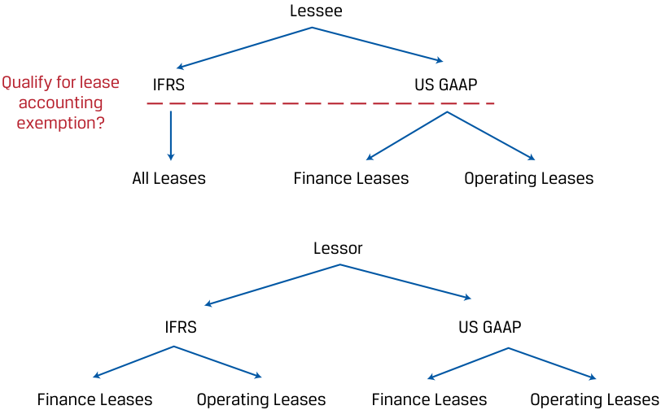

[Toàn Chương] LM08 — Learning Module 8 Topics in Long-Term Liabilities and Equity
Volume 4: Financial Statement Analysis
Learning Module 8 Topics in Long-Term Liabilities and Equity
Part 1/3: Introduction (PDF Pages 253–264)
Tập 4: Phân tích Báo cáo Tài chính (Volume 4: Financial Statement Analysis)
Học phần 8: Các chủ đề về Nợ phải trả Dài hạn và Vốn chủ sở hữu (Learning Module 8: Topics in Long-Term Liabilities and Equity)
Phần 1/3: Giới thiệu (Introduction) (Trang PDF 253–264)
L E A R N I N G M O D U L E
H Ọ C P H Ầ N (L E A R N I N G M O D U L E)
8
8
Topics in Long-Term Liabilities and Equity
Các chủ đề về Nợ phải trả Dài hạn và Vốn chủ sở hữu (Topics in Long-Term Liabilities and Equity)
by Elizabeth A. Gordon, PhD, MBA, and Elaine Henrik, Phd, CFA.
bởi Elizabeth A. Gordon, PhD, MBA, và Elaine Henrik, PhD, CFA.
Elizabeth A. Gordon, PhD, MBA, CPA, is at Temple University (USA), and Elaine Henrik, Phd, CFA, is at Stevens Institute of Technology (USA).
Elizabeth A. Gordon, PhD, MBA, CPA, công tác tại Đại học Temple (Hoa Kỳ), và Elaine Henrik, PhD, CFA, công tác tại Học viện Công nghệ Stevens (Hoa Kỳ).
LEARNING OUTCOMES
MỤC TIÊU HỌC TẬP (LEARNING OUTCOMES)
| Mastery | The candidate should be able to: |
|---|---|
| explain the financial reporting of leases from the perspectives of lessors and lessees |
|
| explain the financial reporting of defined contribution, defined benefit, and stock-based compensation plans |
|
| i describe the financial statement presentation of and disclosures relating to long-term liabilities and share-based compensation |
| Mức độ thành thạo (Mastery) | Ứng viên cần có khả năng (The candidate should be able to): |
|---|---|
| giải thích việc lập báo cáo tài chính đối với các giao dịch thuê tài sản (leases) dưới góc độ của bên cho thuê (lessors) và bên thuê (lessees) | |
| giải thích việc lập báo cáo tài chính đối với các chương trình đóng góp xác định (defined contribution plans), chương trình phúc lợi xác định (defined benefit plans) và các chương trình thù lao dựa trên cổ phiếu (stock-based compensation plans) | |
| mô tả việc trình bày trên báo cáo tài chính và các thuyết minh liên quan đến nợ phải trả dài hạn (long-term liabilities) và thù lao dựa trên cổ phiếu (share-based compensation) |
The two major accounting standard setters are as follows: 1) the International Accounting Standards Board (IASB) who establishes International Financial Reporting Standards (IFRS) and 2) the Financial Accounting Standards Board (FASB) who establishes US GAAP. Throughout this learning module both standards are referred to and many, but not all, of these two sets of accounting rules are identified. Note: changes in accounting standards as well as new rulings and/or pronouncements issued after the publication of this learning module may cause some of the information to become dated.
Hai tổ chức ban hành chuẩn mực kế toán lớn gồm: 1) Hội đồng Chuẩn mực Kế toán Quốc tế (International Accounting Standards Board – IASB), cơ quan thiết lập các Chuẩn mực Báo cáo Tài chính Quốc tế (International Financial Reporting Standards – IFRS) và 2) Hội đồng Chuẩn mực Kế toán Tài chính (Financial Accounting Standards Board – FASB), cơ quan thiết lập các Nguyên tắc Kế toán Được Chấp nhận Chung của Hoa Kỳ (US GAAP). Xuyên suốt học phần này, cả hai bộ chuẩn mực đều được tham chiếu và nhiều quy tắc (dù không phải tất cả) trong hai bộ quy tắc kế toán này được xác định rõ. Lưu ý: những thay đổi trong chuẩn mực kế toán cũng như các phán quyết và/hoặc công bố mới được ban hành sau khi xuất bản học phần này có thể khiến một số thông tin trở nên lỗi thời.
1
1
INTRODUCTION
GIỚI THIỆU (INTRODUCTION)
Non-current liabilities arise from different sources of financing and different types of creditors. While the financial reporting of bonds and loans is straightforward and is covered in the prerequisite materials, the reporting of leases and postemployment liabilities is more complex. Leases are an alternative to asset ownership and have become a common means of financing real estate and capital equipment. Postretirement and stock-based compensation are a large and growing share of employee compensation and operating expenses. Given their importance, this learning module introduces the reporting of leases, pension plans, and stock-based compensation under International Financial Reporting Standards (IFRS) and US GAAP. It concludes by reviewing the presentation and disclosure requirements for these items.
Nợ phải trả dài hạn (non-current liabilities) phát sinh từ các nguồn tài trợ khác nhau và từ các loại chủ nợ khác nhau. Trong khi việc lập báo cáo tài chính cho trái phiếu và các khoản vay khá đơn giản và đã được đề cập trong tài liệu kiến thức nền tảng, thì việc báo cáo các hợp đồng thuê tài sản (leases) và các khoản nợ phải trả sau khi nghỉ việc (postemployment liabilities) lại phức tạp hơn. Thuê tài sản là một giải pháp thay thế cho việc sở hữu tài sản và đã trở thành một phương thức phổ biến để tài trợ cho bất động sản và thiết bị vốn. Thù lao sau khi nghỉ hưu (postretirement compensation) và thù lao dựa trên cổ phiếu (stock-based compensation) chiếm một tỷ trọng lớn và ngày càng tăng trong tổng thù lao của người lao động cũng như chi phí hoạt động. Với tầm quan trọng của chúng, học phần này giới thiệu cách báo cáo các giao dịch thuê tài sản, các chương trình hưu trí (pension plans) và thù lao dựa trên cổ phiếu theo Chuẩn mực Báo cáo Tài chính Quốc tế (IFRS) và US GAAP. Học phần kết thúc bằng việc xem xét các yêu cầu trình bày và thuyết minh đối với các khoản mục này.
LEARNING MODULE OVERVIEW
TỔNG QUAN HỌC PHẦN (LEARNING MODULE OVERVIEW)
-
Leasing has several advantages over purchasing an asset outright: less upfront cash commitment, typically low financing costs, and lower risks associated with ownership, such as obsolescence.
-
Under IFRS and US GAAP, leases are classified as operating or finance leases. Finance leases resemble an asset purchase or sale while operating leases resemble a rental agreement.
-
The financial reporting of a lease depends on whether the party is the lessee or lessor, whether the party reports with IFRS or US GAAP, and the classification of the lease as finance or operating.
-
US GAAP and IFRS share the same accounting treatment for lessors but differ slightly for lessees. IFRS has a single accounting model for both operating leases and finance lease lessees, while US GAAP has an accounting model for each.
-
Two types of pension plans are defined contribution plans and defined benefits plans. In a defined contribution plan, the amount of employer contribution into the plan is specified (i.e., defined) and the amount of pension that is ultimately paid by the plan (received by the retiree) depends on the performance of the plan’s assets. In a defined benefit plan, the amount of pension that is ultimately paid by the plan (received by the retiree) is defined, usually according to a benefit formula.
-
In a defined contribution plan, employees bear investment risks (i.e., the potential for investment returns on plan assets to differ from expectations) and actuarial risks (i.e. the potential for retirement and death timing to differ from expectations). In a defined benefit plan, employers bear both investment and actuarial risks.
-
Under a defined contribution pension plan, the cash payment made into the plan is recognized as pension expense.
-
For defined benefit pension plans, companies must report the difference between the defined benefit pension obligation and the fair value of pension assets as an asset or liability on the balance sheet. An underfunded defined benefit pension plan is shown as a non-current liability. The change in the net asset or liability between balance sheet dates is recognized as a cost of the period, with service cost and net interest expense or income recognized in profit and loss and
-
Thuê tài sản (leasing) có một số ưu điểm so với việc mua đứt tài sản: cam kết tiền mặt trả trước ít hơn, chi phí tài trợ thường thấp và rủi ro gắn liền với quyền sở hữu (chẳng hạn như sự lỗi thời) thấp hơn.
-
Theo IFRS và US GAAP, các hợp đồng thuê tài sản được phân loại thành thuê hoạt động (operating leases) hoặc thuê tài chính (finance leases). Thuê tài chính giống với một giao dịch mua hoặc bán tài sản, trong khi thuê hoạt động giống với một hợp đồng thuê mướn thông thường (rental agreement).
-
Việc lập báo cáo tài chính cho một hợp đồng thuê phụ thuộc vào việc bên tham gia là bên thuê (lessee) hay bên cho thuê (lessor), bên đó lập báo cáo theo IFRS hay US GAAP, và việc phân loại hợp đồng thuê là thuê tài chính hay thuê hoạt động.
-
US GAAP và IFRS có cùng phương pháp hạch toán kế toán đối với bên cho thuê nhưng có đôi chút khác biệt đối với bên thuê. IFRS có một mô hình kế toán duy nhất cho bên thuê đối với cả thuê hoạt động và thuê tài chính, trong khi US GAAP có một mô hình kế toán riêng cho từng loại.
-
Hai loại chương trình hưu trí (pension plans) là chương trình đóng góp xác định (defined contribution plans) và chương trình phúc lợi xác định (defined benefit plans). Trong chương trình đóng góp xác định, số tiền đóng góp của người sử dụng lao động vào chương trình được quy định cụ thể (tức là được xác định trước) và số tiền lương hưu cuối cùng được chương trình chi trả (mà người nghỉ hưu nhận được) phụ thuộc vào hiệu quả hoạt động của các tài sản thuộc chương trình. Trong chương trình phúc lợi xác định, số tiền lương hưu cuối cùng được chương trình chi trả (mà người nghỉ hưu nhận được) được xác định trước, thường dựa theo một công thức tính phúc lợi.
-
Trong chương trình đóng góp xác định, người lao động chịu rủi ro đầu tư (investment risks – tức là khả năng tỷ suất sinh lợi đầu tư trên tài sản của chương trình khác với kỳ vọng) và rủi ro tính toán bảo hiểm (actuarial risks – tức là khả năng thời điểm nghỉ hưu và qua đời khác với kỳ vọng). Trong chương trình phúc lợi xác định, người sử dụng lao động chịu cả rủi ro đầu tư lẫn rủi ro tính toán bảo hiểm.
-
Theo chương trình hưu trí đóng góp xác định, khoản thanh toán bằng tiền mặt đóng vào chương trình được ghi nhận là chi phí hưu trí (pension expense).
-
Đối với các chương trình hưu trí phúc lợi xác định, các công ty phải báo cáo phần chênh lệch giữa nghĩa vụ lương hưu phúc lợi xác định (defined benefit pension obligation) và giá trị hợp lý của tài sản chương trình hưu trí (fair value of pension assets) thành một tài sản hoặc nợ phải trả trên bảng cân đối kế toán. Một chương trình hưu trí phúc lợi xác định bị thiếu hụt vốn (underfunded) được trình bày là một khoản nợ phải trả dài hạn (non-current liability). Sự thay đổi trong tài sản ròng hoặc nợ phải trả ròng giữa các ngày lập bảng cân đối kế toán được ghi nhận là chi phí trong kỳ, trong đó chi phí phục vụ (service cost) và chi phí hoặc thu nhập lãi ròng (net interest expense or income) được ghi nhận vào báo cáo lãi lỗ (profit and loss) và
-
remeasurement changes recognized in other comprehensive income. There are modest differences in accounting treatment under US GAAP.
-
■ Employee compensation packages are structured to fulfill various objectives, including satisfying employees’ needs for liquidity, retaining employees, and providing incentives to employees.
-
■ Share-based compensation serves to align employees’ interests with those of the shareholders. It typically includes stock grants and stock options, which have the advantage of requiring no current-period cash outlays. Stock-based compensation is measured using fair value at the grant date and recognized as compensation expense over the vesting period.
-
■ The valuation technique, or option pricing model, that a company uses is an important choice in determining fair value of options used in a compensation agreement and is disclosed in the notes to financial statements. Key inputs into option pricing models include such items as exercise price, stock price volatility, estimated life of each award, estimated number of options that will be forfeited, dividend yield, and the risk-free rate of interest.
các thay đổi do đo lường lại (remeasurement changes) được ghi nhận vào thu nhập toàn diện khác (other comprehensive income – OCI). Có những khác biệt nhỏ trong phương pháp kế toán theo US GAAP.
-
■ Các gói thù lao cho người lao động được cấu trúc nhằm đáp ứng nhiều mục tiêu khác nhau, bao gồm đáp ứng nhu cầu thanh khoản của người lao động, giữ chân người lao động và tạo động lực khuyến khích cho người lao động.
-
■ Thù lao dựa trên cổ phiếu (share-based compensation) giúp gắn kết lợi ích của người lao động với lợi ích của các cổ đông. Hình thức này thường bao gồm thưởng cổ phiếu (stock grants) và quyền chọn cổ phiếu (stock options), có ưu điểm là không đòi hỏi khoản chi tiền mặt ngay trong kỳ hiện tại. Thù lao dựa trên cổ phiếu được đo lường bằng giá trị hợp lý tại ngày cấp (grant date) và được ghi nhận là chi phí thù lao (compensation expense) phân bổ trong suốt thời gian trao quyền (vesting period).
-
■ Kỹ thuật định giá, hay mô hình định giá quyền chọn (option pricing model), mà một công ty sử dụng là một lựa chọn quan trọng trong việc xác định giá trị hợp lý của các quyền chọn được sử dụng trong thỏa thuận thù lao và được thuyết minh trong phần thuyết minh báo cáo tài chính. Các yếu tố đầu vào chính của các mô hình định giá quyền chọn bao gồm các khoản mục như giá thực hiện (exercise price), độ biến động giá cổ phiếu (stock price volatility), thời hạn ước tính của mỗi phần thưởng, số lượng quyền chọn ước tính sẽ bị hủy bỏ (forfeited), tỷ suất cổ tức (dividend yield) và lãi suất phi rủi ro (risk-free rate of interest).
LEASES
THUÊ TÀI SẢN (LEASES)
2
2
explain the financial reporting of leases from the perspectives of lessors and lessees
giải thích việc lập báo cáo tài chính đối với các giao dịch thuê tài sản (leases) dưới góc độ của bên cho thuê (lessors) và bên thuê (lessees)
Firms typically acquire the rights to use assets by outright purchase. As an alternative, a lease is a contract that conveys the right to use an asset for a period of time in exchange for consideration. The party who uses the asset and pays the consideration is the lessee , and the party who owns the asset, grants the right to use the asset, and receives consideration is the lessor .
Các doanh nghiệp thường có được quyền sử dụng tài sản thông qua việc mua đứt. Như một giải pháp thay thế, hợp đồng thuê tài sản (lease) là một hợp đồng chuyển giao quyền sử dụng một tài sản trong một khoảng thời gian để đổi lấy một khoản thanh toán (consideration). Bên sử dụng tài sản và trả khoản thanh toán là bên thuê (lessee), và bên sở hữu tài sản, cấp quyền sử dụng tài sản và nhận khoản thanh toán là bên cho thuê (lessor).
Leasing is a way to obtain the benefits of the asset without purchasing it outright. From the perspective of a lessee, it is a form of financing that resembles acquiring an asset with a note payable. From the perspective of a lessor, a lease is a form of investment and can also be an effective selling strategy, because customers generally prefer to pay in installments.
Thuê tài sản là một cách để thu được lợi ích của tài sản mà không cần mua đứt nó. Dưới góc độ của bên thuê, đây là một hình thức tài trợ tương tự như việc mua một tài sản bằng thương phiếu phải trả (note payable). Dưới góc độ của bên cho thuê, hợp đồng thuê là một hình thức đầu tư và cũng có thể là một chiến lược bán hàng hiệu quả, bởi vì khách hàng thường thích thanh toán trả góp hơn.
After reviewing the contractual requirements for a lease, this lesson examines the advantages and classification of leases and their financial reporting.
Sau khi xem xét các yêu cầu hợp đồng đối với một giao dịch thuê tài sản, bài học này sẽ khảo sát những ưu điểm, cách phân loại các hợp đồng thuê tài sản và việc lập báo cáo tài chính cho chúng.
Requirements for Lease Accounting
Các yêu cầu đối với Kế toán Thuê tài sản (Requirements for Lease Accounting)
For a contract to be a lease or contain a lease, it must
Để một hợp đồng là hợp đồng thuê tài sản hoặc có chứa cấu phần thuê tài sản, hợp đồng đó phải:
-
identify a specific underlying asset;
-
give the customer the right to obtain largely all of the economic benefits from the asset over the contract term; and
-
give the customer, not the supplier, the ability to direct how and for what objective the underlying asset is used.
-
xác định một tài sản cơ sở (underlying asset) cụ thể;
-
trao cho khách hàng quyền thu được phần lớn mọi lợi ích kinh tế từ tài sản đó trong suốt thời hạn hợp đồng; và
-
trao cho khách hàng, chứ không phải nhà cung cấp, khả năng điều khiển cách thức và mục đích sử dụng tài sản cơ sở đó.
For example, a contract between a customer and a trucking company is a lease if the contract identifies a specific truck, allows the customer exclusive use of it during the contract term, and lets the customer direct its use. If, however, the customer contracts with a trucking company to ship goods for a fee, the contract would not be a lease, because a specific truck is not identified nor does the customer obtain largely all of the economic benefits from the truck over the contract term.
Ví dụ, một hợp đồng giữa khách hàng và một công ty vận tải đường bộ là một hợp đồng thuê tài sản nếu hợp đồng đó xác định một chiếc xe tải cụ thể, cho phép khách hàng độc quyền sử dụng chiếc xe đó trong suốt thời hạn hợp đồng và để khách hàng điều khiển việc sử dụng chiếc xe. Tuy nhiên, nếu khách hàng ký hợp đồng với công ty vận tải để vận chuyển hàng hóa với một mức phí, thì hợp đồng đó sẽ không phải là hợp đồng thuê tài sản, bởi vì không có chiếc xe tải cụ thể nào được xác định và khách hàng cũng không thu được phần lớn mọi lợi ích kinh tế từ chiếc xe tải trong suốt thời hạn hợp đồng.
Examples of Leases
Các ví dụ về Thuê tài sản (Examples of Leases)
Leasing is among the most prevalent forms of financing. Most companies are lessees of real estate and information technology assets. In 2014, the International Accounting Standards Board found that more than 14,000 publicly listed companies were lessees and that they owed more than USD3.3 trillion in future lease payments in aggregate.1 Exhibit 1 illustrates several examples of these arrangements.
Thuê tài sản là một trong những hình thức tài trợ phổ biến nhất. Hầu hết các công ty đều là bên thuê bất động sản và tài sản công nghệ thông tin. Năm 2014, Hội đồng Chuẩn mực Kế toán Quốc tế (IASB) nhận thấy rằng có hơn 14.000 công ty niêm yết đại chúng là bên thuê tài sản và tổng cộng họ nợ hơn 3,3 nghìn tỷ USD tiền thuê phải trả trong tương lai.1 Bảng minh họa 1 (Exhibit 1) trình bày một số ví dụ về các thỏa thuận này.
Exhibit 1: Examples of Leases
Bảng minh họa 1: Các ví dụ về Thuê tài sản (Exhibit 1: Examples of Leases)
| Lessee | Lease Disclosure Excerpt |
|---|---|
| Alibaba | “The Company entered into operating lease agreements pri- marily for shops and malls, offices, warehouses, and land.” |
| Copa Airlines | “The Company leases some aircraft under long-term lease agreements with an average duration of 10 years. Other leased assets include real estate, airport and terminal facili- ties, sales offices, maintenance facilities, and general offices.” |
| Meta (formerly Facebook) | “We have entered into various non-cancelable operating lease agreements for certain of our offices, data center, land, colocations, and equipment.” |
| Standard Bank | “The group leases various offices, branch space, and ATM space.” |
| Bên thuê (Lessee) | Trích dẫn Thuyết minh Thuê tài sản (Lease Disclosure Excerpt) |
|---|---|
| Alibaba | “Công ty đã ký kết các thỏa thuận thuê hoạt động chủ yếu đối với các cửa hàng và trung tâm thương mại, văn phòng, nhà kho và đất đai.” |
| Copa Airlines | “Công ty thuê một số máy bay theo các thỏa thuận thuê dài hạn với thời hạn trung bình là 10 năm. Các tài sản đi thuê khác bao gồm bất động sản, cơ sở vật chất tại sân bay và nhà ga, văn phòng bán hàng, cơ sở bảo dưỡng và văn phòng chung.” |
| Meta (trước đây là Facebook) | “Chúng tôi đã ký kết nhiều thỏa thuận thuê hoạt động không thể hủy ngang đối với một số văn phòng, trung tâm dữ liệu, đất đai, không gian đặt máy chủ chung (colocations) và thiết bị.” |
| Standard Bank | “Tập đoàn thuê nhiều văn phòng, không gian chi nhánh và không gian đặt máy ATM.” |
Sources: Companies’ 2020 and 2019 annual reports.
Nguồn: Báo cáo thường niên năm 2020 và 2019 của các công ty.
Lessors are often real estate investment companies or banks, although there are independent specialist leasing companies, such as AerCap Holdings N.V., which describes itself as “the global leader in aircraft leasing.” As of 30 June 2022, the company owned 1,557 passenger aircraft that are leased to airlines.2
Bên cho thuê thường là các công ty đầu tư bất động sản hoặc ngân hàng, mặc dù cũng có những công ty cho thuê chuyên biệt độc lập, chẳng hạn như AerCap Holdings N.V., đơn vị tự mô tả mình là “nhà dẫn đầu toàn cầu trong lĩnh vực cho thuê máy bay”. Tính đến ngày 30 tháng 6 năm 2022, công ty này sở hữu 1.557 máy bay chở khách được cho các hãng hàng không thuê.2
Advantages of Leasing
Ưu điểm của Thuê tài sản (Advantages of Leasing)
There are several advantages to leasing an asset compared with purchasing it:
Có một số ưu điểm khi thuê một tài sản so với việc mua nó:
-
Less cash is needed up front. Leases typically require little, if any, down payment.
-
Cost effectiveness: Leases are a form of secured borrowing; in the event of non-payment, the lessor simply repossesses the leased asset. As a result, the effective interest rate for a lease is typically lower than what the lessee would pay on an unsecured loan or bond.
-
Cần ít tiền mặt trả trước hơn. Các hợp đồng thuê tài sản thường đòi hỏi rất ít, hoặc thậm chí không cần, tiền đặt cọc trả trước (down payment).
-
Hiệu quả về chi phí: Thuê tài sản là một hình thức vay có bảo đảm (secured borrowing); trong trường hợp không thanh toán, bên cho thuê chỉ cần thu hồi lại tài sản cho thuê. Do đó, lãi suất thực tế (effective interest rate) đối với một hợp đồng thuê thường thấp hơn mức lãi suất mà bên thuê sẽ phải trả cho một khoản vay không có bảo đảm hoặc trái phiếu.
1 IFRS, “IASB Shines Light on Leases by Bringing Them onto the Balance Sheet,” 13 January 2016, www .ifrs .org/ news -and -events/ 2016/ 01/ iasb -shines -light -on -leases -by -bringing -them -onto -the -balance -sheet. 2 AerCap Holdings N.V. annual report for the fiscal year ended 31 December 31 2019 on Form 20-F.
1 IFRS, “IASB Shines Light on Leases by Bringing Them onto the Balance Sheet,” ngày 13 tháng 1 năm 2016, www.ifrs.org/news-and-events/2016/01/iasb-shines-light-on-leases-by-bringing-them-onto-the-balance-sheet. 2 Báo cáo thường niên của AerCap Holdings N.V. cho năm tài chính kết thúc ngày 31 tháng 12 năm 2019 theo Mẫu 20-F.
- Convenience and lower risks associated with asset ownership, such as obsolescence.3
- Sự thuận tiện và rủi ro gắn liền với quyền sở hữu tài sản (chẳng hạn như sự lỗi thời) thấp hơn.3
From the perspective of a lessor, leasing has advantages over selling outright, which include earning interest income over the lease term and increasing the addressable market for its product by offering customers the ability to use or control an asset while paying smaller amounts over time.
Dưới góc độ của bên cho thuê, việc cho thuê có những ưu điểm so với việc bán đứt, bao gồm việc thu được thu nhập lãi trong suốt thời hạn thuê và mở rộng thị trường tiềm năng (addressable market) cho sản phẩm của mình bằng cách cung cấp cho khách hàng khả năng sử dụng hoặc kiểm soát tài sản trong khi chỉ phải trả những khoản tiền nhỏ hơn theo thời gian.
Lease Classification as Finance or Operating
Phân loại Thuê tài sản thành Thuê tài chính hoặc Thuê hoạt động (Lease Classification as Finance or Operating)
Leases can resemble either the purchase of an asset or a rental contract. For example, a ten-year lease of an automobile with a ten-year useful life for monthly payments that, in aggregate, are equal to or greater than the fair value of the automobile is effectively a debt-financed purchase of that automobile. In contrast, a one-year lease of a machine with a twenty-year useful life resembles a rental contract. A lease that resembles a purchase is classified as a finance lease . All other leases are operating leases .
Các hợp đồng thuê có thể giống với việc mua một tài sản hoặc giống với một hợp đồng thuê mướn thông thường (rental contract). Ví dụ, một hợp đồng thuê ô tô thời hạn 10 năm đối với một chiếc ô tô có thời gian sử dụng hữu ích 10 năm với các khoản thanh toán hàng tháng mà tổng cộng bằng hoặc lớn hơn giá trị hợp lý của chiếc ô tô đó thì về bản chất là một giao dịch mua chiếc ô tô đó được tài trợ bằng nợ. Ngược lại, hợp đồng thuê 1 năm đối với một cỗ máy có thời gian sử dụng hữu ích 20 năm lại giống với một hợp đồng thuê mướn thông thường. Một hợp đồng thuê giống với giao dịch mua tài sản được phân loại là thuê tài chính (finance lease). Tất cả các hợp đồng thuê khác là thuê hoạt động (operating leases).
More specifically, a lease is a finance lease if any of the following five criteria are met. These criteria are the same for IFRS and US GAAP. If none of the criteria are met, the lease is an operating lease. The same criteria are used by lessees and lessors in classifying a lease.
Cụ thể hơn, một hợp đồng thuê là thuê tài chính nếu thỏa mãn bất kỳ tiêu chí nào trong năm tiêu chí sau đây. Các tiêu chí này giống nhau đối với cả IFRS và US GAAP. Nếu không có tiêu chí nào được thỏa mãn, hợp đồng thuê đó là thuê hoạt động. Cùng một bộ tiêu chí này được cả bên thuê và bên cho thuê sử dụng khi phân loại hợp đồng thuê.
1. The lease transfers ownership of the underlying asset to the lessee.
1. Hợp đồng thuê chuyển giao quyền sở hữu tài sản cơ sở cho bên thuê.
2. The lessee has an option to purchase the underlying asset and is reasonably certain it will do so.
2. Bên thuê có quyền chọn mua tài sản cơ sở và gần như chắc chắn (reasonably certain) rằng bên thuê sẽ thực hiện quyền chọn đó.
3. The lease term is for a major part of the asset’s useful life.
3. Thời hạn thuê chiếm phần lớn (major part) thời gian sử dụng hữu ích của tài sản.
4. The present value of the sum of the lease payments equals or exceeds substantially all of the fair value of the asset.
4. Giá trị hiện tại của tổng các khoản thanh toán tiền thuê bằng hoặc vượt quá hầu hết (substantially all) giá trị hợp lý của tài sản.
5. The underlying asset has no alternative use to the lessor.
5. Tài sản cơ sở có tính chất chuyên biệt đến mức không có mục đích sử dụng thay thế nào khác đối với bên cho thuê.
EXAMPLE 1
VÍ DỤ 1 (EXAMPLE 1)
Lease Identification and Classification
Xác định và Phân loại Hợp đồng thuê (Lease Identification and Classification)
Company C enters a contract with Company D that requires Company C to pay JPY100 million at the end of each of the next two years to Company D for exclusive use of a specific machine over that time period. The present value of the payments is JPY186 million. At the end of the contract, Company C will return the machine to Company D. The contract does not contain a purchase option. The machine can be used in many applications by many types of customers. The remaining useful life of the machine is four years, and its fair value is JPY190 million.
Công ty C ký một hợp đồng với Công ty D, yêu cầu Công ty C phải trả 100 triệu JPY vào cuối mỗi năm trong hai năm tới cho Công ty D để có quyền sử dụng độc quyền một cỗ máy cụ thể trong khoảng thời gian đó. Giá trị hiện tại của các khoản thanh toán là 186 triệu JPY. Khi kết thúc hợp đồng, Công ty C sẽ trả lại cỗ máy cho Công ty D. Hợp đồng không có quyền chọn mua. Cỗ máy này có thể được sử dụng trong nhiều ứng dụng bởi nhiều đối tượng khách hàng khác nhau. Thời gian sử dụng hữu ích còn lại của cỗ máy là bốn năm, và giá trị hợp lý của nó là 190 triệu JPY.
- This contract is:
- Hợp đồng này là:
A. not a lease.
A. không phải là hợp đồng thuê tài sản.
B. an operating lease.
B. hợp đồng thuê hoạt động (operating lease).
C. a finance lease.
C. hợp đồng thuê tài chính (finance lease).
Solution:
Giải pháp (Solution):
C is correct. This contract is a lease because a specific asset is identified, Company C will exclusively use it, and Company C will have the ability to direct its use. The contract is a finance lease because one of the five criteria
C là đáp án đúng. Hợp đồng này là hợp đồng thuê tài sản bởi vì một tài sản cụ thể đã được xác định, Công ty C sẽ độc quyền sử dụng nó, và Công ty C sẽ có khả năng điều khiển việc sử dụng nó. Hợp đồng này là thuê tài chính bởi vì một trong năm tiêu chí
is met: The present value of the lease payments equals substantially all of the fair value (186/190 = 98%).
được thỏa mãn: Giá trị hiện tại của các khoản thanh toán tiền thuê chiếm hầu hết giá trị hợp lý ($186 / 190 = 98\%$).
- If the fair value of the machine in question 1 was JPY300 million, would the classification of the contract change?
- Nếu giá trị hợp lý của cỗ máy trong câu hỏi 1 là 300 triệu JPY, thì việc phân loại hợp đồng có thay đổi không?
A. No
A. Không
-
B. Yes, from an operating lease to a finance lease
-
C. Yes, from a finance lease to an operating lease
-
Solution:
-
B. Có, từ thuê hoạt động sang thuê tài chính
-
C. Có, từ thuê tài chính sang thuê hoạt động
-
Giải pháp (Solution):
C is correct. This change would result in the lease not meeting any of the five criteria for a finance lease. If a lease does not meet any of the five criteria, it is an operating lease.
C là đáp án đúng. Sự thay đổi này sẽ dẫn đến việc hợp đồng thuê không đáp ứng bất kỳ tiêu chí nào trong năm tiêu chí của thuê tài chính. Nếu một hợp đồng thuê không đáp ứng bất kỳ tiêu chí nào trong năm tiêu chí, nó là hợp đồng thuê hoạt động.
Financial Reporting of Leases
Lập Báo cáo Tài chính đối với Giao dịch Thuê tài sản (Financial Reporting of Leases)
The financial reporting of a lease depends on whether the party is the lessee or lessor, whether the party reports with IFRS or US GAAP, and the classification of the lease as finance or operating. Additionally, for lessees, there are lease accounting exemptions for certain lease contracts: If its term is 12 months or less (IFRS and US GAAP) or it is for a “low-value asset,” up to USD5,000 in sales price (IFRS only), then the lessee can elect to simply expense the lease payments on a straight-line basis. These exemptions are not available to lessors. Exhibit 2 illustrates the different permutations for lease accounting.
Việc lập báo cáo tài chính cho một hợp đồng thuê phụ thuộc vào việc bên tham gia là bên thuê hay bên cho thuê, bên đó lập báo cáo theo IFRS hay US GAAP, và việc phân loại hợp đồng thuê là thuê tài chính hay thuê hoạt động. Ngoài ra, đối với bên thuê, có các trường hợp được miễn trừ áp dụng kế toán thuê tài sản (lease accounting exemptions) đối với một số hợp đồng thuê nhất định: Nếu thời hạn thuê từ 12 tháng trở xuống (cả IFRS và US GAAP) hoặc hợp đồng thuê đối với một “tài sản có giá trị thấp (low-value asset)”, có giá bán lên tới 5.000 USD (chỉ áp dụng cho IFRS), thì bên thuê có thể lựa chọn chỉ ghi nhận thẳng các khoản thanh toán tiền thuê vào chi phí theo phương pháp đường thẳng (straight-line basis). Những miễn trừ này không áp dụng cho bên cho thuê. Bảng minh họa 2 (Exhibit 2) minh họa các trường hợp kết hợp khác nhau trong kế toán thuê tài sản.
Exhibit 2: Lease Classifications for Lessee and Lessor
Bảng minh họa 2: Phân loại Thuê tài sản đối với Bên thuê và Bên cho thuê (Exhibit 2: Lease Classifications for Lessee and Lessor)

Chú thích hình ảnh: - Bên thuê (Lessee): Đủ điều kiện miễn trừ kế toán thuê tài sản? (Qualify for lease accounting exemption?) - IFRS: Tất cả các hợp đồng thuê (All Leases) - US GAAP: Thuê tài chính (Finance Leases) | Thuê hoạt động (Operating Leases) - Bên cho thuê (Lessor): - IFRS: Thuê tài chính (Finance Leases) | Thuê hoạt động (Operating Leases) - US GAAP: Thuê tài chính (Finance Leases) | Thuê hoạt động (Operating Leases)
Fortunately, lessor accounting under both IFRS and US GAAP is substantially identical, and the differences in treatment for lessees are modest.
May mắn thay, kế toán đối với bên cho thuê theo cả IFRS và US GAAP về cơ bản là giống hệt nhau, và những khác biệt trong cách xử lý kế toán đối với bên thuê là không lớn.
Lessee Accounting—IFRS
Kế toán đối với Bên thuê—IFRS (Lessee Accounting—IFRS)
Under IFRS, there is a single accounting model for both finance and operating leases for lessees. At lease inception, the lessee records a lease payable liability and a right-of-use (ROU) asset on its balance sheet, both equal to the present value of future lease payments. The discount rate used in the present value calculation is either the rate implicit in the lease or an estimated secured borrowing rate.
Theo IFRS, chỉ có một mô hình kế toán duy nhất cho cả thuê tài chính và thuê hoạt động đối với bên thuê. Tại thời điểm khởi đầu thuê tài sản (lease inception), bên thuê ghi nhận một khoản nợ phải trả tiền thuê (lease payable liability) và một tài sản quyền sử dụng (right-of-use asset – ROU asset) trên bảng cân đối kế toán của mình, cả hai đều bằng giá trị hiện tại của các khoản thanh toán tiền thuê trong tương lai. Lãi suất chiết khấu được sử dụng trong phép tính giá trị hiện tại là lãi suất ngầm định trong hợp đồng thuê (rate implicit in the lease) hoặc lãi suất đi vay có bảo đảm ước tính (estimated secured borrowing rate).
The lease liability is subsequently reduced by each lease payment using the effective interest method. Each lease payment is composed of interest expense, which is the product of the lease liability and the discount rate, and principal repayment, which is the difference between the interest expense and lease payment.
Nợ phải trả tiền thuê sau đó được giảm dần qua mỗi lần thanh toán tiền thuê bằng phương pháp lãi suất thực tế (effective interest method). Mỗi khoản thanh toán tiền thuê bao gồm chi phí lãi vay (interest expense) – là tích số giữa nợ phải trả tiền thuê và lãi suất chiết khấu – và khoản hoàn trả nợ gốc (principal repayment) – là phần chênh lệch giữa chi phí lãi vay và khoản thanh toán tiền thuê.
The ROU asset is subsequently amortized, often on a straight-line basis, over the lease term. So, although the lease liability and ROU asset begin with the same carrying value on the balance sheet, they typically diverge in subsequent periods because the principal repayment that reduces the lease liability and the amortization expense that reduces the ROU asset are calculated differently.
Tài sản ROU sau đó được khấu hao (amortized), thường theo phương pháp đường thẳng, trong suốt thời hạn thuê. Vì vậy, mặc dù nợ phải trả tiền thuê và tài sản ROU bắt đầu với cùng một giá trị ghi sổ (carrying value) trên bảng cân đối kế toán, nhưng chúng thường lệch nhau trong các kỳ tiếp theo bởi vì khoản hoàn trả nợ gốc làm giảm nợ phải trả tiền thuê và chi phí khấu hao làm giảm tài sản ROU được tính toán theo cách khác nhau.
The following list shows how the transaction affects the financial statements:
Danh sách dưới đây cho thấy giao dịch này ảnh hưởng đến các báo cáo tài chính như thế nào:
-
The lease liability net of principal repayments and the ROU asset net of accumulated amortization are reported on the balance sheet.
-
Interest expense on the lease liability and the amortization expense related to the ROU asset are reported separately on the income statement.
-
The principal repayment component of the lease payment is reported as a cash outflow under financing activities on the statement of cash flows, and depending on the lessee’s reporting policies, interest expense is reported under either operating or financing activities on the statement of cash flows.
-
Nợ phải trả tiền thuê sau khi trừ đi các khoản hoàn trả nợ gốc và tài sản ROU sau khi trừ đi khấu hao lũy kế (accumulated amortization) được báo cáo trên bảng cân đối kế toán.
-
Chi phí lãi vay trên nợ phải trả tiền thuê và chi phí khấu hao liên quan đến tài sản ROU được báo cáo tách biệt trên báo cáo kết quả hoạt động kinh doanh (income statement).
-
Cấu phần hoàn trả nợ gốc của khoản thanh toán tiền thuê được báo cáo là dòng tiền chi ra thuộc hoạt động tài chính (financing activities) trên báo cáo lưu chuyển tiền tệ (statement of cash flows), và tùy thuộc vào chính sách báo cáo của bên thuê, chi phí lãi vay được báo cáo thuộc hoạt động kinh doanh (operating activities) hoặc hoạt động tài chính trên báo cáo lưu chuyển tiền tệ.
EXAMPLE 2
VÍ DỤ 2 (EXAMPLE 2)
Lease Impact on Balance Sheet and Income Statement
Tác động của Thuê tài sản lên Bảng cân đối kế toán và Báo cáo kết quả hoạt động kinh doanh (Lease Impact on Balance Sheet and Income Statement)
Proton Enterprises, a hypothetical manufacturer based in Germany, is offered the following terms to lease a machine: five-year lease with an implied interest rate of 10 percent and an annual lease payment of EUR100,000 per year payable at the end of each year. The present value of the machinery is therefore EUR379,079 (in Microsoft Excel, the formula is =PV(10%,5,-100,000). The asset will be amortized over the five-year lease term on a straight-line basis. Proton reports under IFRS.
Proton Enterprises, một công ty sản xuất giả định có trụ sở tại Đức, được đề nghị các điều khoản sau đây để thuê một cỗ máy: hợp đồng thuê 5 năm với lãi suất ngầm định là 10% và khoản thanh toán tiền thuê hàng năm là 100.000 EUR mỗi năm, trả vào cuối mỗi năm. Do đó, giá trị hiện tại của máy móc là 379.079 EUR (trong Microsoft Excel, công thức là =PV(10%,5,-100,000)). Tài sản sẽ được khấu hao trong suốt thời hạn thuê 5 năm theo phương pháp đường thẳng. Proton lập báo cáo theo IFRS.
- What would be the impact of this lease on Proton’s balance sheet at the beginning of the year?
- Tác động của hợp đồng thuê này lên bảng cân đối kế toán của Proton vào đầu năm sẽ là gì?
Solution:
Giải pháp (Solution):
Proton would report a EUR379,079 lease liability and ROU asset.
Proton sẽ báo cáo một khoản nợ phải trả tiền thuê và tài sản ROU trị giá 379.079 EUR.
- What would be the impact of this lease on Proton’s income statement during the following year?
- Tác động của hợp đồng thuê này lên báo cáo kết quả hoạt động kinh doanh của Proton trong năm tiếp theo (Năm 2) sẽ là gì?
Solution:
Giải pháp (Solution):
Interest expense and amortization expense are reported on the income statement. In Year 2, interest expense is EUR31,699 and amortization expense is EUR 75,816, as illustrated in the following tables:
Chi phí lãi vay và chi phí khấu hao được báo cáo trên báo cáo kết quả hoạt động kinh doanh. Trong Năm 2, chi phí lãi vay là 31.699 EUR và chi phí khấu hao là 75.816 EUR, như được minh họa trong các bảng sau:
| Lease Payment |
Interest Expense (10% × Lease Liability) |
Principal Repayment (Payment – Interest) |
Lease Liability |
|
|---|---|---|---|---|
| FO.1 | FO.2 | FO.3 | FO.4 | |
| Year 0 | 379,079 | |||
| Year 1 | 100,000 | 37,908 | 62,092 | 316,987 |
| Year 2 | 100,000 | 31,699 | 68,301 | 248,685 |
| Year 3 | 100,000 | 24,869 | 75,131 | 173,554 |
| Year 4 | 100,000 | 17,355 | 82,645 | 90,909 |
| Year 5 | 100,000 | 9,091 | 90,909 | 0 |
| Total | 500,000 | 120,921 | 379,079 |
| Khoản thanh toán tiền thuê (Lease Payment) | Chi phí lãi vay (10% × Nợ phải trả tiền thuê) (Interest Expense) | Hoàn trả nợ gốc (Thanh toán – Lãi vay) (Principal Repayment) | Nợ phải trả tiền thuê (Lease Liability) | |
|---|---|---|---|---|
| FO.1 | FO.2 | FO.3 | FO.4 | |
| Năm 0 | 379.079 | |||
| Năm 1 | 100.000 | 37.908 | 62.092 | 316.987 |
| Năm 2 | 100.000 | 31.699 | 68.301 | 248.685 |
| Năm 3 | 100.000 | 24.869 | 75.131 | 173.554 |
| Năm 4 | 100.000 | 17.355 | 82.645 | 90.909 |
| Năm 5 | 100.000 | 9.091 | 90.909 | 0 |
| Tổng cộng | 500.000 | 120.921 | 379.079 |
| Amortization Expense | ROU Asset | |
|---|---|---|
| Straight-Line F.1 | F.2 | |
| Year 0 | 379,079 | |
| Year 1 | 75,816 | 303,263 |
| Year 2 | 75,816 | 227,447 |
| Year 3 | 75,816 | 151,631 |
| Year 4 | 75,816 | 75,816 |
| Year 5 | 75,816 | 0 |
| Total | 379,079 |
| Chi phí khấu hao (Amortization Expense) | Tài sản ROU (ROU Asset) | |
|---|---|---|
| Đường thẳng (Straight-Line) F.1 | F.2 | |
| Năm 0 | 379.079 | |
| Năm 1 | 75.816 | 303.263 |
| Năm 2 | 75.816 | 227.447 |
| Năm 3 | 75.816 | 151.631 |
| Năm 4 | 75.816 | 75.816 |
| Năm 5 | 75.816 | 0 |
| Tổng cộng | 379.079 |
Note: Totals may not sum due to rounding.
Lưu ý: Tổng số có thể không khớp chính xác do làm tròn số.
- What would be the impact of this lease on Proton’s statement of cash flows during the following year?
- Tác động của hợp đồng thuê này lên báo cáo lưu chuyển tiền tệ của Proton trong năm tiếp theo (Năm 2) sẽ là gì?
Solution:
Giải pháp (Solution):
Principal repayments are reported as a cash outflow under financing activities on the statement of cash flows, and depending on Proton’s reporting policies, interest expense is reported under operating or financing activities on the statement of cash flows. From the previous tables, Year 2 principal repayment is EUR68,301 and interest expense is EUR31,699, for a total of EUR100,000.
Các khoản hoàn trả nợ gốc được báo cáo là dòng tiền chi ra thuộc hoạt động tài chính trên báo cáo lưu chuyển tiền tệ, và tùy thuộc vào chính sách báo cáo của Proton, chi phí lãi vay được báo cáo thuộc hoạt động kinh doanh hoặc hoạt động tài chính trên báo cáo lưu chuyển tiền tệ. Từ các bảng trên, khoản hoàn trả nợ gốc Năm 2 là 68.301 EUR và chi phí lãi vay là 31.699 EUR, tổng cộng là 100.000 EUR.
Lessee Accounting—US GAAP
Kế toán đối với Bên thuê—US GAAP (Lessee Accounting—US GAAP)
Under US GAAP, there are two accounting models for lessees: one for finance leases and another for operating leases. The finance lease accounting model is identical to the lessee accounting model for IFRS. The operating lease accounting model is different.
Theo US GAAP, có hai mô hình kế toán dành cho bên thuê: một mô hình cho thuê tài chính (finance leases) và một mô hình khác cho thuê hoạt động (operating leases). Mô hình kế toán thuê tài chính giống hệt với mô hình kế toán đối với bên thuê theo IFRS. Mô hình kế toán thuê hoạt động thì khác biệt.
At operating lease inception, the lessee records a lease payable liability and a corresponding right-of-use asset on its balance sheet that are subsequently reduced by the principal repayment component of the lease payment and amortization, respectively, in the same manner that an IFRS lessee would.
Tại thời điểm khởi đầu hợp đồng thuê hoạt động, bên thuê ghi nhận một khoản nợ phải trả tiền thuê (lease payable liability) và một tài sản quyền sử dụng (right-of-use asset) tương ứng trên bảng cân đối kế toán của mình; sau đó các khoản mục này lần lượt được giảm dần bởi cấu phần hoàn trả nợ gốc của khoản thanh toán tiền thuê và chi phí khấu hao, theo cùng cách thức như một bên thuê áp dụng IFRS.
The key difference between an operating lease and a finance lease is how the amortization of the ROU asset is calculated. For an operating lease, the lessee’s ROU asset amortization expense is the lease payment minus the interest expense. The implication is that the total expense reported on the income statement (interest plus
Điểm khác biệt cốt lõi giữa thuê hoạt động và thuê tài chính là cách tính khấu hao của tài sản ROU. Đối với thuê hoạt động, chi phí khấu hao tài sản ROU của bên thuê bằng khoản thanh toán tiền thuê trừ đi chi phí lãi vay. Hệ quả là tổng chi phí được báo cáo trên báo cáo kết quả hoạt động kinh doanh (lãi vay cộng
amortization) will equal the lease payment and that the lease liability and the ROU asset will always equal each other because the principal repayment and amortization are calculated in an identical manner.
khấu hao) sẽ bằng khoản thanh toán tiền thuê, và nợ phải trả tiền thuê cùng với tài sản ROU sẽ luôn bằng nhau bởi vì khoản hoàn trả nợ gốc và chi phí khấu hao được tính toán theo cách giống hệt nhau.
The following list shows how the transaction appears on the financial statements:
Danh sách dưới đây cho thấy giao dịch này xuất hiện trên các báo cáo tài chính như thế nào:
-
The lease liability net of principal repayments and the ROU asset net of accumulated amortization are reported on the balance sheet.
-
Interest expense on the lease liability and the amortization expense related to the ROU asset are reported as a single line titled “lease expense” as an operating expense on the income statement. The interest and amortization components are not reported separately, nor are they grouped with other types of interest and amortization expense (e.g., interest on a bond, amortization of an intangible asset).
-
The entire lease payment is reported as a cash outflow under operating activities on the statement of cash flows. The interest and principal repayment components are not reported separately.
-
Nợ phải trả tiền thuê sau khi trừ đi các khoản hoàn trả nợ gốc và tài sản ROU sau khi trừ đi khấu hao lũy kế được báo cáo trên bảng cân đối kế toán.
-
Chi phí lãi vay trên nợ phải trả tiền thuê và chi phí khấu hao liên quan đến tài sản ROU được báo cáo gộp thành một dòng duy nhất có tiêu đề “chi phí thuê tài sản (lease expense)” thuộc nhóm chi phí hoạt động (operating expense) trên báo cáo kết quả hoạt động kinh doanh. Các cấu phần lãi vay và khấu hao không được báo cáo tách biệt, cũng không được gộp chung với các loại chi phí lãi vay và chi phí khấu hao khác (ví dụ: lãi vay trái phiếu, khấu hao tài sản vô hình).
-
Toàn bộ khoản thanh toán tiền thuê được báo cáo là dòng tiền chi ra thuộc hoạt động kinh doanh (operating activities) trên báo cáo lưu chuyển tiền tệ. Các cấu phần lãi vay và hoàn trả nợ gốc không được báo cáo tách biệt.
EXAMPLE 3
VÍ DỤ 3 (EXAMPLE 3)
Lessee Accounting—Operating Lease under US GAAP
Kế toán đối với Bên thuê—Thuê hoạt động theo US GAAP (Lessee Accounting—Operating Lease under US GAAP)
Consider the differences in accounting if Proton Enterprises classified the lease of the machinery from Example 2 as an operating lease.
Hãy xem xét những điểm khác biệt trong hạch toán kế toán nếu Proton Enterprises phân loại hợp đồng thuê máy móc từ Ví dụ 2 là hợp đồng thuê hoạt động (theo US GAAP).
- How would its financial statements differ, if at all?
- Các báo cáo tài chính của công ty sẽ khác biệt như thế nào, nếu có?
Solution:
Giải pháp (Solution):
The first step is to construct the lease liability and ROU asset amortization tables under an operating lease scenario. The lease liability amortization is the same as the finance lease columns FO.1–FO.4 in Example 2.
Bước đầu tiên là lập các bảng khấu hao nợ phải trả tiền thuê và tài sản ROU theo kịch bản thuê hoạt động. Bảng giảm dần nợ phải trả tiền thuê giống hệt như các cột thuê tài chính FO.1–FO.4 trong Ví dụ 2.
| Amortization Expense (Lease Payment – Interest) |
ROU Asset | Lease Expense (Amortization + Interest) |
|
|---|---|---|---|
| 0.1 | 0.2 | 0.3 | |
| Year 0 | 379,079 | ||
| Year 1 | 62,092 | 316,987 | 100,000 |
| Year 2 | 68,301 | 248,685 | 100,000 |
| Year 3 | 75,131 | 173,554 | 100,000 |
| Year 4 | 82,645 | 90,909 | 100,000 |
| Year 5 | 90,909 | 0 | 100,000 |
| Total | 379,078 | 500,000 |
| Chi phí khấu hao (Thanh toán tiền thuê – Lãi vay) (Amortization Expense) | Tài sản ROU (ROU Asset) | Chi phí thuê tài sản (Khấu hao + Lãi vay) (Lease Expense) | |
|---|---|---|---|
| O.1 | O.2 | O.3 | |
| Năm 0 | 379.079 | ||
| Năm 1 | 62.092 | 316.987 | 100.000 |
| Năm 2 | 68.301 | 248.685 | 100.000 |
| Năm 3 | 75.131 | 173.554 | 100.000 |
| Năm 4 | 82.645 | 90.909 | 100.000 |
| Năm 5 | 90.909 | 0 | 100.000 |
| Tổng cộng | 379.078 | 500.000 |
Now we can compare the financial statement impacts under both finance and operating lease scenarios.
Bây giờ chúng ta có thể so sánh tác động lên báo cáo tài chính theo cả hai kịch bản thuê tài chính và thuê hoạt động.
| Balance Sheet | Year 1 | Year 2 | Year 3 | Year 4 | Year 5 |
|---|---|---|---|---|---|
| Finance lease: | |||||
| ROU asset, net: F.2 | 303,263 | 227,447 | 151,631 | 75,816 | 0 |
| Lease liability, net: FO.4 | 316,987 | 248,685 | 173,554 | 90,909 | 0 |
| Operating lease: |
| Bảng cân đối kế toán (Balance Sheet) | Năm 1 | Năm 2 | Năm 3 | Năm 4 | Năm 5 |
|---|---|---|---|---|---|
| Thuê tài chính (Finance lease): | |||||
| Tài sản ROU, ròng (ROU asset, net): F.2 | 303.263 | 227.447 | 151.631 | 75.816 | 0 |
| Nợ phải trả tiền thuê, ròng (Lease liability, net): FO.4 | 316.987 | 248.685 | 173.554 | 90.909 | 0 |
| Thuê hoạt động (Operating lease): |
| Balance Sheet | Year 1 | Year 2 | Year 3 | Year 4 | Year 5 |
|---|---|---|---|---|---|
| ROU asset, net: O.2 | 316,987 | 248,685 | 173,554 | 90,909 | 0 |
| Lease liability, net: FO.4 | 316,987 | 248,685 | 173,554 | 90,909 | 0 |
| Bảng cân đối kế toán (Balance Sheet) | Năm 1 | Năm 2 | Năm 3 | Năm 4 | Năm 5 |
|---|---|---|---|---|---|
| Tài sản ROU, ròng (ROU asset, net): O.2 | 316.987 | 248.685 | 173.554 | 90.909 | 0 |
| Nợ phải trả tiền thuê, ròng (Lease liability, net): FO.4 | 316.987 | 248.685 | 173.554 | 90.909 | 0 |
The ROU asset is lower in each period under a finance lease because the amortization expense is higher.
Tài sản ROU thấp hơn trong mỗi kỳ theo hình thức thuê tài chính bởi vì chi phí khấu hao cao hơn.
| Income Statement | Year 1 | Year 2 | Year 3 | Year 4 | Year 5 |
|---|---|---|---|---|---|
| Finance lease: | |||||
| Amortization: F.1 | 75,816 | 75,816 | 75,816 | 75,816 | 75,816 |
| Interest: FO.2 | 37,908 | 31,699 | 24,869 | 17,355 | 9,091 |
| Total | 113,724 | 107,515 | 100,685 | 93,171 | 84,907 |
| Operating lease: | |||||
| Lease expense: O.3 | 100,000 | 100,000 | 100,000 | 100,000 | 100,000 |
| Báo cáo kết quả hoạt động kinh doanh (Income Statement) | Năm 1 | Năm 2 | Năm 3 | Năm 4 | Năm 5 |
|---|---|---|---|---|---|
| Thuê tài chính (Finance lease): | |||||
| Khấu hao (Amortization): F.1 | 75.816 | 75.816 | 75.816 | 75.816 | 75.816 |
| Lãi vay (Interest): FO.2 | 37.908 | 31.699 | 24.869 | 17.355 | 9.091 |
| Tổng cộng (Total) | 113.724 | 107.515 | 100.685 | 93.171 | 84.907 |
| Thuê hoạt động (Operating lease): | |||||
| Chi phí thuê tài sản (Lease expense): O.3 | 100.000 | 100.000 | 100.000 | 100.000 | 100.000 |
Total expense is higher for a finance lease in Years 1–3 but lower in Years 4 and 5. The largest difference is classification; amortization and interest are presented separately for a finance lease, whereas operating lease expense is an operating expense.
Tổng chi phí cao hơn đối với thuê tài chính trong các Năm 1–3 nhưng thấp hơn trong Năm 4 và Năm 5. Điểm khác biệt lớn nhất là việc phân loại; chi phí khấu hao và chi phí lãi vay được trình bày tách biệt đối với thuê tài chính, trong khi chi phí thuê hoạt động là một khoản chi phí hoạt động (operating expense).
| Statement of Cash Flows |
Year 1 | Year 2 | Year 3 | Year 4 | Year 5 |
|---|---|---|---|---|---|
| Finance lease: | |||||
| Cash flow | |||||
| l from operating activities |
(37,908) | (31,699) | (24,869) | (17,355) | (9,091) |
| Cash flow from financing activities |
(62,902) | (68,301) | (75,131) | (82,645) | (90,909) |
| i Total |
(100,000) | (100,000) | (100,000) | (100,000) | (100,000) |
| Operating lease: | |||||
| Cash flows | |||||
| l from operating activities |
(100,000) | (100,000) | (100,000) | (100,000) | (100,000) |
| Báo cáo lưu chuyển tiền tệ (Statement of Cash Flows) | Năm 1 | Năm 2 | Năm 3 | Năm 4 | Năm 5 |
|---|---|---|---|---|---|
| Thuê tài chính (Finance lease): | |||||
| Dòng tiền từ hoạt động kinh doanh (Cash flow from operating activities) | (37.908) | (31.699) | (24.869) | (17.355) | (9.091) |
| Dòng tiền từ hoạt động tài chính (Cash flow from financing activities) | (62.902) | (68.301) | (75.131) | (82.645) | (90.909) |
| Tổng cộng (Total) | (100.000) | (100.000) | (100.000) | (100.000) | (100.000) |
| Thuê hoạt động (Operating lease): | |||||
| Dòng tiền từ hoạt động kinh doanh (Cash flows from operating activities) | (100.000) | (100.000) | (100.000) | (100.000) | (100.000) |
Sự khác biệt trên báo cáo lưu chuyển tiền tệ chỉ nằm ở việc phân loại, bởi vì trong cả hai trường hợp, tổng dòng tiền chi ra đều bằng khoản thanh toán tiền thuê.
The difference on the statement of cash flows is only in classification, because in both cases the total cash outflow is equal to the lease payment.
- Với các yếu tố khác không đổi, việc phân loại này sẽ ảnh hưởng như thế nào đến biên EBITDA (EBITDA margin), vòng quay tổng tài sản (total asset turnover) và dòng tiền trên mỗi cổ phiếu (cash flow per share)?
- How would the classification, all else equal, affect EBITDA margin, total asset turnover, and cash flow per share? Solution:
Giải pháp (Solution):
The following table shows how the classification affects the indicated financial ratios.
Bảng sau đây cho thấy cách phân loại hợp đồng thuê ảnh hưởng đến các tỷ số tài chính được chỉ ra.
| Ratio | Formula | Impact of Using an Operating Lease Instead of a Finance Lease |
|---|---|---|
| EBITDA margin | EBITDA _____ Total revenues |
Lower: Lease expense is clas- sified as an operating expense rather than interest and amortization. |
| Asset turnover | Total revenues _____ Total assets |
Lower: Total assets are higher under an operating lease because the ROU asset is amortized at a slower pace in Years 1–3. |
| Cash flow per share | Cash flow from operations ________ Shares outstanding |
Lower: Cash flow from operations is lower because the entire lease payment is included in operating activities versus solely interest expense for a finance lease. |
| Tỷ số (Ratio) | Công thức (Formula) | Tác động của việc sử dụng Thuê hoạt động thay vì Thuê tài chính (Impact of Using an Operating Lease Instead of a Finance Lease) |
|---|---|---|
| Biên EBITDA (EBITDA margin) | $$\frac{\text{EBITDA}}{\text{Tổng doanh thu (Total revenues)}}$$ |
Thấp hơn: Chi phí thuê tài sản được phân loại là chi phí hoạt động thay vì chi phí lãi vay và chi phí khấu hao. |
| Vòng quay tài sản (Asset turnover) | $$\frac{\text{Tổng doanh thu (Total revenues)}}{\text{Tổng tài sản (Total assets)}}$$ |
Thấp hơn: Tổng tài sản cao hơn theo hình thức thuê hoạt động bởi vì tài sản ROU được khấu hao với tốc độ chậm hơn trong các Năm 1–3. |
| Dòng tiền trên mỗi cổ phiếu (Cash flow per share) | $$\frac{\text{Dòng tiền từ hoạt động kinh doanh (Cash flow from operations)}}{\text{Số cổ phiếu đang lưu hành (Shares outstanding)}}$$ |
Thấp hơn: Dòng tiền từ hoạt động kinh doanh thấp hơn bởi vì toàn bộ khoản thanh toán tiền thuê được tính vào hoạt động kinh doanh so với việc chỉ tính riêng chi phí lãi vay đối với thuê tài chính. |
Lessor Accounting
Kế toán đối với Bên cho thuê (Lessor Accounting)
The accounting for lessors is substantially identical under IFRS and US GAAP. Under both accounting standards, lessors classify leases as finance or operating leases, which determines the financial reporting. Although lessors under US GAAP recognize finance leases as either “sales-type” or “direct financing,” the distinction is immaterial from an analyst’s perspective.
Kế toán đối với bên cho thuê về cơ bản là giống hệt nhau theo IFRS và US GAAP. Theo cả hai chuẩn mực kế toán, bên cho thuê phân loại hợp đồng thuê thành thuê tài chính hoặc thuê hoạt động, và việc phân loại này sẽ quyết định cách lập báo cáo tài chính. Mặc dù bên cho thuê theo US GAAP ghi nhận thuê tài chính thành “thuê tài chính kiểu bán hàng (sales-type lease)” hoặc “thuê tài chính trực tiếp (direct financing lease)”, nhưng sự phân biệt này là không trọng yếu dưới góc độ của một chuyên gia phân tích.
At finance lease inception, the lessor recognizes a lease receivable asset equal to the present value of future lease payments and de-recognizes the leased asset, simultaneously recognizing any difference as a gain or loss. The discount rate used in the present value calculation is the rate implicit in the lease.
Tại thời điểm khởi đầu hợp đồng thuê tài chính, bên cho thuê ghi nhận một tài sản khoản phải thu cho thuê (lease receivable asset) bằng với giá trị hiện tại của các khoản thanh toán tiền thuê trong tương lai và dừng ghi nhận (de-recognizes) tài sản cho thuê, đồng thời ghi nhận bất kỳ khoản chênh lệch nào thành lãi hoặc lỗ (gain or loss). Lãi suất chiết khấu được sử dụng trong phép tính giá trị hiện tại là lãi suất ngầm định trong hợp đồng thuê (rate implicit in the lease).
The lease receivable is subsequently reduced by each lease payment using the effective interest method. Each lease payment is composed of interest income, which is the product of the lease receivable and the discount rate, and principal proceeds, which equals the difference between the interest income and cash receipt.
Khoản phải thu cho thuê sau đó được giảm dần qua mỗi khoản thanh toán tiền thuê bằng phương pháp lãi suất thực tế (effective interest method). Mỗi khoản thanh toán tiền thuê bao gồm thu nhập lãi (interest income) – là tích số giữa khoản phải thu cho thuê và lãi suất chiết khấu – và tiền thu hồi nợ gốc (principal proceeds) – bằng phần chênh lệch giữa thu nhập lãi và số tiền mặt thu được.
The transaction affects the financial statements in the following ways:
Giao dịch này ảnh hưởng đến các báo cáo tài chính theo những cách sau:
-
Lease receivable net of principal proceeds is reported on the balance sheet.
-
Interest income is reported on the income statement. If leasing is a primary business activity for the entity, as it commonly is for financial institutions and independent leasing companies, it is reported as revenue.
-
The entire cash receipt is reported under operating activities on the statement of cash flows.
-
Khoản phải thu cho thuê sau khi trừ đi tiền thu hồi nợ gốc được báo cáo trên bảng cân đối kế toán.
-
Thu nhập lãi được báo cáo trên báo cáo kết quả hoạt động kinh doanh. Nếu cho thuê tài sản là một hoạt động kinh doanh chính của đơn vị, như thường thấy ở các định chế tài chính và các công ty cho thuê độc lập, khoản này được báo cáo là doanh thu (revenue).
-
Toàn bộ số tiền mặt thu được được báo cáo thuộc hoạt động kinh doanh trên báo cáo lưu chuyển tiền tệ.
The accounting treatment for an operating lease is different: because the contract is essentially a rental agreement, the lessor keeps the leased asset on its books and recognizes lease revenue on a straight-line basis. Interest revenue is not recognized because the transaction is not considered a financing. The transaction affects the financial statements in the following ways:
Phương pháp hạch toán kế toán đối với thuê hoạt động thì khác: bởi vì hợp đồng này về bản chất là một thỏa thuận cho thuê mướn thông thường (rental agreement), bên cho thuê giữ lại tài sản cho thuê trên sổ sách của mình và ghi nhận doanh thu cho thuê (lease revenue) theo phương pháp đường thẳng. Doanh thu lãi không được ghi nhận bởi vì giao dịch này không được coi là một giao dịch tài trợ vốn. Giao dịch này ảnh hưởng đến các báo cáo tài chính theo những cách sau:
-
The balance sheet is not affected. The lessor continues to recognize the leased asset at cost net of accumulated depreciation.
-
Lease revenue is recognized on a straight-line basis on the income statement. Depreciation expense continues to be recognized.
-
Bảng cân đối kế toán không bị ảnh hưởng. Bên cho thuê tiếp tục ghi nhận tài sản cho thuê theo nguyên giá trừ đi khấu hao lũy kế (cost net of accumulated depreciation).
-
Doanh thu cho thuê được ghi nhận theo phương pháp đường thẳng trên báo cáo kết quả hoạt động kinh doanh. Chi phí khấu hao (depreciation expense) tiếp tục được ghi nhận.
- The entire cash receipt is reported under operating activities on the statement of cash flows. This is the same as a finance lease.
- Toàn bộ số tiền mặt thu được được báo cáo thuộc hoạt động kinh doanh trên báo cáo lưu chuyển tiền tệ. Điều này giống như đối với thuê tài chính.
EXAMPLE 4
VÍ DỤ 4 (EXAMPLE 4)
Lessor Accounting
Kế toán đối với Bên cho thuê (Lessor Accounting)
Let’s examine Proton’s machine lease from Example 2 and Example 3 from the perspective of the lessor. Assume that the carrying value of the asset immediately prior to the lease is EUR350,000, accumulated depreciation is zero, and the lessor elects to depreciate it on a straight-line basis over five years.
Hãy khảo sát hợp đồng thuê máy móc của Proton từ Ví dụ 2 và Ví dụ 3 dưới góc độ của bên cho thuê. Giả sử rằng giá trị ghi sổ (carrying value) của tài sản ngay trước khi cho thuê là 350.000 EUR, khấu hao lũy kế bằng không, và bên cho thuê lựa chọn khấu hao tài sản theo phương pháp đường thẳng trong vòng 5 năm.
- How are the lessor’s financial statements affected by the classification of the lease as a finance or operating lease?
- Các báo cáo tài chính của bên cho thuê bị ảnh hưởng như thế nào bởi việc phân loại hợp đồng thuê thành thuê tài chính hay thuê hoạt động?
Solution:
Giải pháp (Solution):
The difference on the balance sheet is material, because a finance lease requires the lessor to de-recognize the asset and recognize a lease receivable, whereas an operating lease lessor continues to recognize the asset and depreciate it over its useful life. In this case, where the present value of the lease payments is well above the carrying value of the asset, the finance lease classification results in a significant increase in assets.
Sự khác biệt trên bảng cân đối kế toán là trọng yếu, bởi vì thuê tài chính yêu cầu bên cho thuê dừng ghi nhận tài sản và ghi nhận một khoản phải thu cho thuê, trong khi bên cho thuê hoạt động tiếp tục ghi nhận tài sản và khấu hao nó trong suốt thời gian sử dụng hữu ích. Trong trường hợp này, khi giá trị hiện tại của các khoản thanh toán tiền thuê cao hơn đáng kể so với giá trị ghi sổ của tài sản, việc phân loại thành thuê tài chính dẫn đến sự gia tăng đáng kể trong tổng tài sản.
| Balance Sheet | Year 1 | Year 2 | Year 3 | Year 4 | Year 5 |
|---|---|---|---|---|---|
| Finance lease: | |||||
| Lease receivable, net | 316,987 | 248,685 | 173,554 | 90,909 | 0 |
| Operating lease: | |||||
| Property, plant, and equip- ment, net |
280,000 | 210,000 | 140,000 | 70,000 | 0 |
| Bảng cân đối kế toán (Balance Sheet) | Năm 1 | Năm 2 | Năm 3 | Năm 4 | Năm 5 |
|---|---|---|---|---|---|
| Thuê tài chính (Finance lease): | |||||
| Khoản phải thu cho thuê, ròng (Lease receivable, net) | 316.987 | 248.685 | 173.554 | 90.909 | 0 |
| Thuê hoạt động (Operating lease): | |||||
| Bất động sản, nhà xưởng và thiết bị, ròng (Property, plant, and equipment, net) | 280.000 | 210.000 | 140.000 | 70.000 | 0 |
The difference on the income statement is also material, because a finance lease lessor recognizes interest revenue under the effective interest method whereas the operating lease lessor recognizes straight-line lease revenue.
Sự khác biệt trên báo cáo kết quả hoạt động kinh doanh cũng rất trọng yếu, bởi vì bên cho thuê tài chính ghi nhận doanh thu lãi theo phương pháp lãi suất thực tế, trong khi bên cho thuê hoạt động ghi nhận doanh thu cho thuê theo phương pháp đường thẳng.
| Income Statement | Year 1 | Year 2 | Year 3 | Year 4 | Year 5 |
|---|---|---|---|---|---|
| Finance lease: | |||||
| Interest revenue | 37,908 | 31,699 | 24,869 | 17,355 | 9,091 |
| Operating lease: | |||||
| Lease revenue | 100,000 | 100,000 | 100,000 | 100,000 | 100,000 |
| Báo cáo kết quả hoạt động kinh doanh (Income Statement) | Năm 1 | Năm 2 | Năm 3 | Năm 4 | Năm 5 |
|---|---|---|---|---|---|
| Thuê tài chính (Finance lease): | |||||
| Doanh thu lãi (Interest revenue) | 37.908 | 31.699 | 24.869 | 17.355 | 9.091 |
| Thuê hoạt động (Operating lease): | |||||
| Doanh thu cho thuê (Lease revenue) | 100.000 | 100.000 | 100.000 | 100.000 | 100.000 |
The statement of cash flows, however, is no different for the lessor under a finance or operating lease: The entire cash inflow from the lease payment is recognized under operating activities.
Tuy nhiên, báo cáo lưu chuyển tiền tệ không có sự khác biệt nào đối với bên cho thuê dù là thuê tài chính hay thuê hoạt động: Toàn bộ dòng tiền thu vào từ khoản thanh toán tiền thuê đều được ghi nhận thuộc hoạt động kinh doanh.
| Statement of Cash Flows |
Year 1 | Year 2 | Year 3 | Year 4 | Year 5 |
|---|---|---|---|---|---|
| Finance lease: | |||||
| Cash flows from operat- | |||||
| l ing activities |
100,000 | 100,000 | 100,000 | 100,000 | 100,000 |
| Báo cáo lưu chuyển tiền tệ (Statement of Cash Flows) | Năm 1 | Năm 2 | Năm 3 | Năm 4 | Năm 5 |
|---|---|---|---|---|---|
| Thuê tài chính (Finance lease): | |||||
| Dòng tiền từ hoạt động kinh doanh (Cash flows from operating activities) | 100.000 | 100.000 | 100.000 | 100.000 | 100.000 |
Volume 4: Financial Statement Analysis
Learning Module 8 Topics in Long-Term Liabilities and Equity
Part 2/3: Financial Reporting for Postemployment and Share-Based Compensation Plans (PDF Pages 265–275)
Tập 4: Phân tích Báo cáo Tài chính (Volume 4: Financial Statement Analysis)
Học phần 8: Các chủ đề về Nợ phải trả Dài hạn và Vốn chủ sở hữu (Learning Module 8: Topics in Long-Term Liabilities and Equity)
Phần 2/3: Lập Báo cáo Tài chính đối với các Chương trình Phúc lợi Sau khi Nghỉ việc và Thù lao Dựa trên Cổ phiếu (Financial Reporting for Postemployment and Share-Based Compensation Plans) (Trang PDF 265–275)
| Statement of Cash Flows |
Year 1 | Year 2 | Year 3 | Year 4 | Year 5 |
|---|---|---|---|---|---|
| Operating lease: | |||||
| Cash flows from operat- ingactivities |
100,000 | 100,000 | 100,000 | 100,000 | 100,000 |
| Báo cáo lưu chuyển tiền tệ (Statement of Cash Flows) | Năm 1 | Năm 2 | Năm 3 | Năm 4 | Năm 5 |
|---|---|---|---|---|---|
| Thuê hoạt động (Operating lease): | |||||
| Dòng tiền từ hoạt động kinh doanh (Cash flows from operating activities) | 100.000 | 100.000 | 100.000 | 100.000 | 100.000 |
FINANCIAL REPORTING FOR POSTEMPLOYMENT AND SHARE-BASED COMPENSATION PLANS
LẬP BÁO CÁO TÀI CHÍNH ĐỐI VỚI CÁC CHƯƠNG TRÌNH PHÚC LỢI SAU KHI NGHỈ VIỆC VÀ THÙ LAO DỰA TRÊN CỔ PHIẾU (FINANCIAL REPORTING FOR POSTEMPLOYMENT AND SHARE-BASED COMPENSATION PLANS)
3
3
explain the financial reporting of defined contribution, defined benefit, and stock-based compensation plans
giải thích việc lập báo cáo tài chính đối với các chương trình đóng góp xác định (defined contribution plans), chương trình phúc lợi xác định (defined benefit plans) và các chương trình thù lao dựa trên cổ phiếu (stock-based compensation plans)
Employee Compensation
Thù lao cho Người lao động (Employee Compensation)
Employee compensation packages are structured to achieve various objectives, including satisfying employees’ needs for liquidity, retaining employees, and motivating employees. Common components of employee compensation are salary, bonuses, health and life insurance premiums, defined contribution and benefit pension plans, and share-based compensation. The amount of compensation and its composition are determined in labor markets, which vary significantly by the types of skills needed, geography, the stage of the business cycle, and labor laws and customs.
Các gói thù lao cho người lao động được cấu trúc nhằm đạt được nhiều mục tiêu khác nhau, bao gồm đáp ứng nhu cầu thanh khoản của người lao động, giữ chân người lao động và tạo động lực cho người lao động. Các cấu phần phổ biến trong thù lao cho người lao động là tiền lương (salary), tiền thưởng (bonuses), phí bảo hiểm sức khỏe và nhân thọ, các chương trình hưu trí đóng góp xác định và phúc lợi xác định, và thù lao dựa trên cổ phiếu (share-based compensation). Mức thù lao và cơ cấu của nó được quyết định trên thị trường lao động, vốn có sự khác biệt đáng kể tùy theo loại kỹ năng cần thiết, vị trí địa lý, giai đoạn của chu kỳ kinh doanh cũng như luật pháp và tập quán lao động.
The salary component of compensation provides for the liquidity needs of an employee. Bonuses, generally in the form of cash, motivate and reward employees for short- or long-term performance or goal achievement by linking pay to performance. Non-monetary benefits, such as health and life insurance premiums, housing, and vehicles, may be provided to facilitate employees performing their jobs. Salary, bonuses, and non-monetary benefits tend to vest (i.e., employee earns the right to the consideration) immediately or shortly after their grant date. In terms of financial reporting, a company reports compensation expense on the income statement in the period in which compensation vests. Immediate or short-term vesting makes the accounting for salary, most non-monetary benefits, and bonuses straightforward: when the employee has earned the salary or bonus, an expense is recorded for the fair value of the compensation, and a cash outflow or accrued compensation liability (a current liability) is recognized. Expenses and cash outflows for short-term compensation tend to be well matched.
Cấu phần tiền lương trong gói thù lao đáp ứng nhu cầu thanh khoản của người lao động. Tiền thưởng, thường dưới hình thức tiền mặt, thúc đẩy và tưởng thưởng cho người lao động vì kết quả hoạt động hoặc việc đạt được mục tiêu trong ngắn hạn hoặc dài hạn thông qua việc gắn tiền lương với hiệu quả công việc. Các phúc lợi phi tiền tệ (non-monetary benefits), chẳng hạn như phí bảo hiểm sức khỏe và nhân thọ, nhà ở và phương tiện đi lại, có thể được cung cấp nhằm tạo điều kiện thuận lợi cho người lao động thực hiện công việc của họ. Tiền lương, tiền thưởng và các phúc lợi phi tiền tệ thường có xu hướng được trao quyền (vest) (tức là người lao động có được quyền hưởng khoản thanh toán) ngay lập tức hoặc ngay sau ngày cấp (grant date). Về mặt lập báo cáo tài chính, một công ty báo cáo chi phí thù lao (compensation expense) trên báo cáo kết quả hoạt động kinh doanh trong kỳ mà khoản thù lao được trao quyền. Việc trao quyền ngay lập tức hoặc trong ngắn hạn làm cho việc hạch toán kế toán đối với tiền lương, hầu hết các phúc lợi phi tiền tệ và tiền thưởng trở nên đơn giản: khi người lao động đã làm việc để hưởng tiền lương hoặc tiền thưởng, một khoản chi phí được ghi nhận theo giá trị hợp lý của khoản thù lao đó, đồng thời một dòng tiền chi ra hoặc một khoản nợ phải trả về thù lao dồn tích (accrued compensation liability – một khoản nợ ngắn hạn) được ghi nhận. Chi phí và dòng tiền chi ra đối với thù lao ngắn hạn thường có sự tương xứng tốt với nhau.
Deferred Compensation
Thù lao Hoãn lại (Deferred Compensation)
Deferred compensation vests over time and can provide valuable retirement savings and financial upside to employees and often serve as an effective retention and stakeholder alignment tool for employers. The financial reporting for deferred compensation plans is generally more complex than that for compensation that vests immediately because of the difficulty in measurement and potential lags between employee service and cash outflows. Employees may earn compensation in the current period but receive
Thù lao hoãn lại (deferred compensation) được trao quyền theo thời gian và có thể mang lại khoản tiết kiệm hưu trí có giá trị cũng như tiềm năng lợi ích tài chính cho người lao động, đồng thời thường đóng vai trò là một công cụ hiệu quả để giữ chân nhân sự và gắn kết lợi ích các bên liên quan cho người sử dụng lao động. Việc lập báo cáo tài chính cho các chương trình thù lao hoãn lại nhìn chung phức tạp hơn so với các khoản thù lao được trao quyền ngay lập tức do sự khó khăn trong việc đo lường và độ trễ tiềm ẩn giữa quá trình phục vụ của người lao động và dòng tiền chi ra. Người lao động có thể tích lũy quyền hưởng thù lao trong kỳ hiện tại nhưng lại nhận được
consideration in future periods, and the amount of consideration can be based on factors such as their future salary or the employer’s stock price. Management judgment and assumptions are required.
khoản thanh toán trong các kỳ tương lai, và số tiền thanh toán có thể dựa trên các yếu tố như mức lương tương lai của họ hoặc giá cổ phiếu của người sử dụng lao động. Điều này đòi hỏi sự xét đoán và các giả định từ phía ban giám đốc.
Pensions and other postemployment benefit plans are a common type of deferred compensation. Two common types of pension plans are defined contribution pension plans and defined benefit pension plans . Under a defined-contribution plan, a company contributes an agreed-upon amount into the plan, which may be structured as a match to employees’ contributions into the plan (e.g., 50 percent of 5 percent of employees’ contribution up to a certain limit). The company contribution is the pension expense and is reported as an operating cash outflow. The only impact on assets and liabilities is a decrease in cash, although if some portion of the agreed-upon amount has not been paid by fiscal year-end, an accrued compensation liability would be recognized on the balance sheet. Because the amount of the contribution is defined and the company has no further obligation once the contribution has been made, accounting for a defined-contribution plan is straightforward.
Lương hưu (pensions) và các chương trình phúc lợi sau khi nghỉ việc khác (other postemployment benefit plans) là một dạng thù lao hoãn lại phổ biến. Hai loại chương trình hưu trí phổ biến là chương trình hưu trí đóng góp xác định (defined contribution pension plans) và chương trình hưu trí phúc lợi xác định (defined benefit pension plans). Theo chương trình đóng góp xác định, một công ty đóng góp một số tiền đã thỏa thuận vào chương trình, có thể được cấu trúc dưới dạng khoản đóng góp đối ứng (match) với khoản đóng góp của người lao động vào chương trình (ví dụ: đối ứng 50% của mức đóng góp 5% lương của người lao động cho đến một giới hạn nhất định). Khoản đóng góp của công ty chính là chi phí hưu trí (pension expense) và được báo cáo là dòng tiền chi ra từ hoạt động kinh doanh (operating cash outflow). Tác động duy nhất lên tài sản và nợ phải trả là sự sụt giảm tiền mặt, mặc dù nếu một phần của số tiền đã thỏa thuận chưa được thanh toán tính đến cuối năm tài chính, một khoản nợ phải trả về thù lao dồn tích sẽ được ghi nhận trên bảng cân đối kế toán. Bởi vì số tiền đóng góp đã được xác định và công ty không còn nghĩa vụ nào thêm sau khi khoản đóng góp đã được thực hiện, việc hạch toán kế toán cho chương trình đóng góp xác định là rất đơn giản.
Companies may also offer other types of postemployment benefit plans, such as retiree healthcare plans. These plans also incur non-current liabilities for employers but tend to be far smaller than pension plans and are typically not funded in advance; thus, benefit payments are often expensed as incurred.
Các công ty cũng có thể cung cấp các loại chương trình phúc lợi sau khi nghỉ việc khác, chẳng hạn như chương trình chăm sóc sức khỏe cho người nghỉ hưu (retiree healthcare plans). Các chương trình này cũng làm phát sinh nợ phải trả dài hạn cho người sử dụng lao động nhưng thường có quy mô nhỏ hơn nhiều so với các chương trình hưu trí và thường không được cấp vốn trước (not funded in advance); do đó, các khoản thanh toán phúc lợi thường được hạch toán vào chi phí khi phát sinh.
Defined-Benefit Pension Plans
Các chương trình Hưu trí Phúc lợi Xác định (Defined-Benefit Pension Plans)
Under a defined-benefit pension plan, a company makes promises of future benefits to be paid to the employee during retirement. For example, a company could promise an employee annual pension payments equal to 70 percent of her final salary at retirement until death. Measuring the obligation arising from that promise requires the company to make many assumptions, such as the employee’s expected salary at retirement and the number of years the employee is expected to live beyond retirement. The company estimates the future amounts to be paid and discounts the future estimated amounts to a present value (using a discount rate equal to the yield on a high-quality corporate bond) to determine the pension obligation today. The discount rate and other assumptions used to determine the pension obligation significantly affects the size of the pension obligation.
Theo chương trình hưu trí phúc lợi xác định, một công ty đưa ra những lời hứa về các khoản phúc lợi tương lai sẽ được chi trả cho người lao động trong thời gian nghỉ hưu. Ví dụ, một công ty có thể hứa trả cho người lao động các khoản thanh toán lương hưu hàng năm bằng 70% mức lương cuối cùng của người đó khi nghỉ hưu cho đến khi qua đời. Việc đo lường nghĩa vụ phát sinh từ lời hứa đó đòi hỏi công ty phải đưa ra nhiều giả định, chẳng hạn như mức lương dự kiến của người lao động khi nghỉ hưu và số năm người lao động dự kiến sẽ sống thêm sau khi nghỉ hưu. Công ty ước tính số tiền tương lai sẽ phải trả và chiết khấu các số tiền ước tính trong tương lai đó về giá trị hiện tại (sử dụng lãi suất chiết khấu bằng với lợi suất của trái phiếu doanh nghiệp chất lượng cao – yield on a high-quality corporate bond) để xác định nghĩa vụ lương hưu (pension obligation) ở thời điểm hiện tại. Lãi suất chiết khấu và các giả định khác được sử dụng để xác định nghĩa vụ lương hưu có ảnh hưởng đáng kể đến quy mô của nghĩa vụ lương hưu.
Most defined-benefit pension plans are funded through assets held in a separate legal entity, typically a pension trust fund. A company makes payments into the pension fund and retirees are paid from the fund. The payments that a company makes into the fund are invested until they are needed to pay the retirees. If the fair value of the plan’s assets is higher than the present value of the estimated pension obligation, the plan has a surplus and the company will report a net pension asset on its balance sheet. Conversely, if the present value of the estimated pension obligation exceeds the fair value of the fund’s assets, the plan has a deficit and the company will report a net pension liability on its balance sheet.
Hầu hết các chương trình hưu trí phúc lợi xác định được cấp vốn thông qua các tài sản được nắm giữ tại một pháp nhân riêng biệt, thường là một quỹ tín thác hưu trí (pension trust fund). Công ty thực hiện các khoản thanh toán vào quỹ hưu trí và những người nghỉ hưu được chi trả từ quỹ này. Các khoản thanh toán mà công ty đóng vào quỹ được đem đi đầu tư cho đến khi cần dùng để chi trả cho những người nghỉ hưu. Nếu giá trị hợp lý của tài sản thuộc chương trình (fair value of the plan's assets) cao hơn giá trị hiện tại của nghĩa vụ lương hưu ước tính (present value of the estimated pension obligation), chương trình có thặng dư (surplus) và công ty sẽ báo cáo một khoản tài sản hưu trí ròng (net pension asset) trên bảng cân đối kế toán của mình. Ngược lại, nếu giá trị hiện tại của nghĩa vụ lương hưu ước tính vượt quá giá trị hợp lý của tài sản thuộc quỹ, chương trình bị thâm hụt (deficit) và công ty sẽ báo cáo một khoản nợ phải trả hưu trí ròng (net pension liability) trên bảng cân đối kế toán của mình.
Accounting for Defined-Benefit Plans under IFRS
Kế toán đối với các Chương trình Phúc lợi Xác định theo IFRS (Accounting for Defined-Benefit Plans under IFRS)
Under IFRS, the change in the net pension asset or liability each period is viewed as having three general components. Two of the components of this change are recognized as pension expense on the income statement: (1) employees’ service costs, and (2) the net interest expense or income accrued on the beginning net pension asset or liability.
Theo IFRS, sự thay đổi trong tài sản hoặc nợ phải trả hưu trí ròng mỗi kỳ được xem là có ba cấu phần chung. Hai trong số các cấu phần của sự thay đổi này được ghi nhận là chi phí hưu trí (pension expense) trên báo cáo kết quả hoạt động kinh doanh: (1) chi phí phục vụ của người lao động (employees' service costs), và (2) chi phí hoặc thu nhập lãi ròng (net interest expense or income) dồn tích trên tài sản hoặc nợ phải trả hưu trí ròng đầu kỳ.
The service cost during the period for an employee is the present value of the increase in the pension benefit earned by the employee as a result of providing one more year of service. The service cost also includes any effects from changes in the plan, known as past service costs.
Chi phí phục vụ trong kỳ đối với một người lao động là giá trị hiện tại của phần tăng thêm trong phúc lợi lương hưu mà người lao động tích lũy được do đã cung cấp thêm một năm làm việc. Chi phí phục vụ cũng bao gồm bất kỳ tác động nào từ những thay đổi trong chương trình, được gọi là chi phí phục vụ quá khứ (past service costs).
The net interest expense or income represents the change in the present value of the net defined benefit pension asset or liability from the passage of time (i.e., a liability would increase over time as payout dates near) and is calculated as the net pension asset or liability multiplied by the discount rate.
Chi phí hoặc thu nhập lãi ròng thể hiện sự thay đổi trong giá trị hiện tại của tài sản hoặc nợ phải trả hưu trí phúc lợi xác định ròng do sự trôi qua của thời gian (tức là một khoản nợ phải trả sẽ tăng lên theo thời gian khi ngày chi trả đến gần) và được tính bằng tài sản hoặc nợ phải trả hưu trí ròng nhân với lãi suất chiết khấu.
The third component of the change in the net pension asset or liability during a period (i.e., “remeasurements”) is recognized in other comprehensive income. Remeasurements are not amortized into profit or loss over time. Remeasurements include (1) actuarial gains and losses and (2) the actual return on plan assets less any return included in the net interest expense or income. Actuarial gains and losses can occur when changes are made to the assumptions on which a company bases its estimated pension obligation (e.g., employee turnover, mortality rates, retirement ages, compensation increases). The actual return on plan assets includes interest, dividends, and other income derived from the plan assets, including realized and unrealized gains or losses. The actual return typically differs from the amount included in the net interest expense or income, which is calculated using a rate reflective of a high-quality corporate bond yield; plan assets are typically allocated across various asset classes, including equity as well as bonds.
Cấu phần thứ ba của sự thay đổi trong tài sản hoặc nợ phải trả hưu trí ròng trong kỳ (tức là “các khoản đo lường lại” – remeasurements) được ghi nhận vào thu nhập toàn diện khác (other comprehensive income – OCI). Các khoản đo lường lại không được phân bổ dần (not amortized) vào báo cáo lãi lỗ theo thời gian. Các khoản đo lường lại bao gồm (1) lãi và lỗ tính toán bảo hiểm (actuarial gains and losses) và (2) lợi nhuận thực tế trên tài sản của chương trình (actual return on plan assets) trừ đi bất kỳ khoản lợi nhuận nào đã được tính trong chi phí hoặc thu nhập lãi ròng. Lãi và lỗ tính toán bảo hiểm có thể xảy ra khi có những thay đổi đối với các giả định mà công ty dùng làm cơ sở để ước tính nghĩa vụ lương hưu của mình (ví dụ: tỷ lệ nghỉ việc của nhân viên, tỷ lệ tử vong, độ tuổi nghỉ hưu, mức tăng lương). Lợi nhuận thực tế trên tài sản của chương trình bao gồm tiền lãi, cổ tức và các khoản thu nhập khác thu được từ tài sản của chương trình, bao gồm cả lãi hoặc lỗ đã thực hiện và chưa thực hiện (realized and unrealized gains or losses). Lợi nhuận thực tế thường khác với số tiền được tính trong chi phí hoặc thu nhập lãi ròng – vốn được tính bằng mức lãi suất phản ánh lợi suất trái phiếu doanh nghiệp chất lượng cao; trong khi đó tài sản của chương trình thường được phân bổ vào nhiều loại tài sản khác nhau, bao gồm cả cổ phiếu lẫn trái phiếu.
Accounting for Defined-Benefit Plan under US GAAP
Kế toán đối với Chương trình Phúc lợi Xác định theo US GAAP (Accounting for Defined-Benefit Plan under US GAAP)
Under US GAAP, the change in net pension asset or liability each period is viewed as having five components, some of which are recognized in profit and loss in the period incurred and some of which are recognized in other comprehensive income and amortized into profit and loss over time.
Theo US GAAP, sự thay đổi trong tài sản hoặc nợ phải trả hưu trí ròng mỗi kỳ được xem là có năm cấu phần, một số cấu phần được ghi nhận vào báo cáo lãi lỗ ngay trong kỳ phát sinh và một số cấu phần được ghi nhận vào thu nhập toàn diện khác (OCI) rồi sau đó được phân bổ dần (amortized) vào báo cáo lãi lỗ theo thời gian.
The three components recognized on the income statement in the period incurred are as follows:
Ba cấu phần được ghi nhận trên báo cáo kết quả hoạt động kinh doanh ngay trong kỳ phát sinh như sau:
1. employees’ service costs for the period;
1. chi phí phục vụ của người lao động trong kỳ (employees' service costs for the period);
2. interest expense accrued on the beginning pension obligation; and
2. chi phí lãi dồn tích trên nghĩa vụ lương hưu đầu kỳ (interest expense accrued on the beginning pension obligation); và
3. expected return on plan assets, which is a reduction in the amount of expense recognized.
3. lợi nhuận kỳ vọng trên tài sản của chương trình (expected return on plan assets), khoản này làm giảm số chi phí được ghi nhận.
The other two components are past service costs and actuarial gains and losses. Past service costs are recognized in other comprehensive income in the period in which they arise and then subsequently amortized into pension expense over the future service period of the employees covered by the plan. Actuarial gains and losses are typically also recognized in other comprehensive income in the period in which they occur and then amortized into pension expense over time. In effect, this treatment allows companies to “smooth” the effects on pension expense over time for these latter two components. US GAAP does permit companies to immediately recognize actuarial gains and losses in profit and loss.
Hai cấu phần còn lại là chi phí phục vụ quá khứ (past service costs) và lãi/lỗ tính toán bảo hiểm (actuarial gains and losses). Chi phí phục vụ quá khứ được ghi nhận vào thu nhập toàn diện khác trong kỳ mà chúng phát sinh và sau đó được phân bổ dần vào chi phí hưu trí trong suốt thời gian phục vụ tương lai của những người lao động thuộc diện áp dụng của chương trình. Lãi và lỗ tính toán bảo hiểm thông thường cũng được ghi nhận vào thu nhập toàn diện khác trong kỳ mà chúng xảy ra và sau đó được phân bổ dần vào chi phí hưu trí theo thời gian. Về mặt hiệu quả, cách xử lý này cho phép các công ty “làm mượt (smooth)” các tác động lên chi phí hưu trí theo thời gian đối với hai cấu phần sau này. Tuy nhiên, US GAAP cũng cho phép các công ty ghi nhận ngay lập tức lãi và lỗ tính toán bảo hiểm vào báo cáo lãi lỗ.
Pension expense on the income statement is classified on a functional basis like other employee compensation expenses. For a manufacturing company, pension expense related to production employees is added to inventory and expensed through cost of sales (cost of goods sold). For other employees, the pension expense is included in selling, general, and administrative expenses. Therefore, pension expense is typically not directly reported on the income statement. Rather, extensive disclosures are included in the notes to the financial statements.
Chi phí hưu trí trên báo cáo kết quả hoạt động kinh doanh được phân loại theo chức năng (functional basis) giống như các chi phí thù lao người lao động khác. Đối với một công ty sản xuất, chi phí hưu trí liên quan đến nhân viên sản xuất được cộng vào hàng tồn kho (inventory) và được hạch toán vào chi phí thông qua giá vốn hàng bán (cost of sales / cost of goods sold). Đối với các nhân viên khác, chi phí hưu trí được tính vào chi phí bán hàng, chi phí chung và quản lý (selling, general, and administrative expenses – SG&A). Do đó, chi phí hưu trí thường không được báo cáo thành một dòng trực tiếp trên báo cáo kết quả hoạt động kinh doanh. Thay vào đó, các thuyết minh chi tiết sẽ được đưa vào phần thuyết minh báo cáo tài chính.
Exhibit 3 presents excerpts from the balance sheet and pension-related disclosures in BT Group plc’s Annual Report for the year ended 31 March 2018. BT reports under IFRS.
Bảng minh họa 3 (Exhibit 3) trình bày các đoạn trích từ bảng cân đối kế toán và các thuyết minh liên quan đến hưu trí trong Báo cáo Thường niên của BT Group plc cho năm tài chính kết thúc ngày 31 tháng 3 năm 2018. BT lập báo cáo theo IFRS.
Exhibit 3: BT Group plc: Excerpts from Balance Sheet and Pension-Related Disclosures
Bảng minh họa 3: BT Group plc: Trích dẫn từ Bảng cân đối kế toán và Các thuyết minh liên quan đến Hưu trí (Exhibit 3: BT Group plc: Excerpts from Balance Sheet and Pension-Related Disclosures)
| Non-current liabilities, GBP millions |
Mar. 31, 2018 | Mar. 31, 2017 | Mar. 31, 2016 |
|---|---|---|---|
| Loans and other borrowings | 11,994 | 10,081 | 11,025 |
| Derivative financial | |||
| i instruments |
787 | 869 | 863 |
| Retirement benefit obligations | 6,371 | 9,088 | 6,382 |
| Other payables | 1,326 | 1,298 | 1,106 |
| Deferred tax liabilities | 1,340 | 1,240 | 1,262 |
| Provisions | 452 | 536 | 565 |
| Non-current liabilities | 22,270 | 23,112 | 21,203 |
| Nợ phải trả dài hạn, triệu GBP (Non-current liabilities, GBP millions) | 31/03/2018 | 31/03/2017 | 31/03/2016 |
|---|---|---|---|
| Các khoản vay và nợ vay khác (Loans and other borrowings) | 11.994 | 10.081 | 11.025 |
| Công cụ tài chính phái sinh (Derivative financial instruments) | 787 | 869 | 863 |
| Nghĩa vụ phúc lợi hưu trí (Retirement benefit obligations) | 6.371 | 9.088 | 6.382 |
| Các khoản phải trả khác (Other payables) | 1.326 | 1.298 | 1.106 |
| Nợ thuế thu nhập hoãn lại phải trả (Deferred tax liabilities) | 1.340 | 1.240 | 1.262 |
| Dự phòng phải trả (Provisions) | 452 | 536 | 565 |
| Tổng nợ phải trả dài hạn (Non-current liabilities) | 22.270 | 23.112 | 21.203 |
Pension-Related Disclosures
Các Thuyết minh Liên quan đến Hưu trí (Pension-Related Disclosures)
The following are excerpts of pension-related disclosures from BT Group plc’s 2018 Annual Report.
Dưới đây là các đoạn trích về thuyết minh liên quan đến hưu trí từ Báo cáo Thường niên năm 2018 của BT Group plc.
Extract from Note 3 “Summary of Significant Accounting Policies”
Trích dẫn từ Thuyết minh số 3 “Tóm tắt các Chính sách Kế toán Trọng yếu” (Extract from Note 3 “Summary of Significant Accounting Policies”)
Retirement benefits
Phúc lợi hưu trí (Retirement benefits)
The group’s net obligation in respect of defined benefit pension plans is the present value of the defined benefit obligation less the fair value of the plan assets.
Nghĩa vụ ròng của tập đoàn liên quan đến các chương trình hưu trí phúc lợi xác định là giá trị hiện tại của nghĩa vụ phúc lợi xác định trừ đi giá trị hợp lý của tài sản thuộc chương trình.
The calculation of the obligation is performed by a qualified actuary using the projected unit credit method and key actuarial assumptions at the balance sheet date.
Việc tính toán nghĩa vụ này được thực hiện bởi một chuyên gia tính toán bảo hiểm (actuary) có trình độ chuyên môn bằng phương pháp đơn vị tín dụng dự kiến (projected unit credit method) và các giả định tính toán bảo hiểm cốt lõi tại ngày lập bảng cân đối kế toán.
The income statement expense is allocated between an operating charge and net finance income or expense. The operating charge reflects the increase in the defined benefit obligation resulting from the pension benefit earned by active employees in the current period, the costs of administering the plans and any past service costs/credits such as those arising from curtailments or settlements. The net finance income or expense reflects the interest on the net retirement benefit obligations recognised in the group balance sheet, based on the discount rate at the start of the year. Actuarial gains and losses are recognised in full in the period in which they occur and are presented in the group statement of comprehensive income.
Chi phí trên báo cáo kết quả hoạt động kinh doanh được phân bổ giữa chi phí hoạt động (operating charge) và thu nhập hoặc chi phí tài chính ròng (net finance income or expense). Chi phí hoạt động phản ánh sự gia tăng trong nghĩa vụ phúc lợi xác định phát sinh từ phúc lợi lương hưu mà những người lao động đang làm việc tích lũy được trong kỳ hiện tại, chi phí quản lý chương trình và bất kỳ khoản chi phí/ghi có phục vụ quá khứ nào chẳng hạn như những khoản phát sinh từ việc cắt giảm (curtailments) hoặc tất toán (settlements) chương trình. Thu nhập hoặc chi phí tài chính ròng phản ánh tiền lãi tính trên nghĩa vụ phúc lợi hưu trí ròng được ghi nhận trên bảng cân đối kế toán của tập đoàn, dựa trên lãi suất chiết khấu vào đầu năm. Lãi và lỗ tính toán bảo hiểm được ghi nhận toàn bộ trong kỳ mà chúng phát sinh và được trình bày trên báo cáo thu nhập toàn diện của tập đoàn.
The group also operates defined contribution pension plans and the income statement expense represents the contributions payable for the year.
Tập đoàn cũng vận hành các chương trình hưu trí đóng góp xác định và chi phí trên báo cáo kết quả hoạt động kinh doanh thể hiện các khoản đóng góp phải trả trong năm.
Extract from Note 20 “Retirement Benefit Plans Information on Defined Benefit Pension Plans”
Trích dẫn từ Thuyết minh số 20 “Các Chương trình Phúc lợi Hưu trí – Thông tin về các Chương trình Hưu trí Phúc lợi Xác định” (Extract from Note 20 “Retirement Benefit Plans Information on Defined Benefit Pension Plans”)
| GBP millions | 2018 | 2017 | 2016 |
|---|---|---|---|
| Present value of liabilities | 57,327 | 60,200 | 50,350 |
| Fair value of plan assets | 50,956 | 51,112 | 43,968 |
| Triệu GBP (GBP millions) | 2018 | 2017 | 2016 |
|---|---|---|---|
| Giá trị hiện tại của các khoản nợ phải trả (Present value of liabilities) | 57.327 | 60.200 | 50.350 |
| Giá trị hợp lý của tài sản chương trình (Fair value of plan assets) | 50.956 | 51.112 | 43.968 |
EXAMPLE 5
VÍ DỤ 5 (EXAMPLE 5)
BT Group’s Pension Plan
Chương trình Hưu trí của BT Group (BT Group’s Pension Plan)
Use information in the excerpts in Exhibit 3 to answer the following questions:
Sử dụng thông tin trong các đoạn trích ở Bảng minh họa 3 để trả lời các câu hỏi sau:
- What type(s) of pension plans does BT have?
- Solution:
- BT có (các) loại chương trình hưu trí nào?
- Giải pháp (Solution):
Note 3 “Summary of Significant Accounting Policies” indicates that the company has both defined contribution and defined benefit pension plans.
Thuyết minh số 3 “Tóm tắt các Chính sách Kế toán Trọng yếu” cho biết công ty có cả chương trình hưu trí đóng góp xác định (defined contribution) và chương trình hưu trí phúc lợi xác định (defined benefit).
- What proportion of BT’s total non-current liabilities are related to its retirement benefit obligations?
- Tỷ trọng trong tổng nợ phải trả dài hạn của BT có liên quan đến nghĩa vụ phúc lợi hưu trí của công ty là bao nhiêu?
Solution:
Giải pháp (Solution):
Retirement benefit obligations represent 29 percent, 39 percent, and 30 percent of BT’s total non-current liabilities for the years 2018, 2017, and 2016. Using 2018 to illustrate, GBP6,371/GBP22,270 = 29%. (GBP million)
Nghĩa vụ phúc lợi hưu trí chiếm lần lượt 29%, 39% và 30% tổng nợ phải trả dài hạn của BT cho các năm 2018, 2017 và 2016. Lấy năm 2018 để minh họa: $\text{6.371 GBP} / \text{22.270 GBP} = 29\%$ (triệu GBP).
- Describe how BT’s retirement benefit obligation is calculated.
- Solution:
- Mô tả cách tính nghĩa vụ phúc lợi hưu trí của BT.
- Giải pháp (Solution):
Note 3 “Summary of Significant Accounting Policies” indicates that BT’s Retirement benefit obligation is calculated as the present value of the defined benefit obligation minus the fair value of the plan assets. Using data from Note 20 “Retirement Benefit Plans” the retirement benefit obligation for each year can be calculated. Using 2018 to illustrate, GBP57,327 − GBP50,956 = GBP6,371 (GBP million).
Thuyết minh số 3 “Tóm tắt các Chính sách Kế toán Trọng yếu” cho biết Nghĩa vụ phúc lợi hưu trí của BT được tính bằng giá trị hiện tại của nghĩa vụ phúc lợi xác định trừ đi giá trị hợp lý của tài sản thuộc chương trình. Sử dụng dữ liệu từ Thuyết minh số 20 “Các Chương trình Phúc lợi Hưu trí”, có thể tính được nghĩa vụ phúc lợi hưu trí cho từng năm. Lấy năm 2018 để minh họa: $\text{57.327 GBP} - \text{50.956 GBP} = \text{6.371 GBP}$ (triệu GBP).
Share-Based Compensation
Thù lao Dựa trên Cổ phiếu (Share-Based Compensation)
Share-based compensation is intended to align employees’ interests with those of the shareholders and is another common type of deferred compensation. Unlike pension plans, share-based compensation tends to be highly concentrated among more senior-level employees such as executives as well as directors. Both IFRS and US GAAP require a company to disclose in their annual report key elements of management compensation. Regulators may require additional disclosure. The disclosures enable analysts to understand the nature and extent of compensation, including the share-based payment arrangements that existed during the reporting period. In the United States, these disclosures are typically provided in a company’s proxy statement that is filed with the SEC. Exhibit 4 shows the disclosure of Apple Inc.’s 2021 Named Executive Officer Compensation:
Thù lao dựa trên cổ phiếu (share-based compensation) nhằm mục đích gắn kết lợi ích của người lao động với lợi ích của các cổ đông và là một loại thù lao hoãn lại phổ biến khác. Không giống như các chương trình hưu trí, thù lao dựa trên cổ phiếu có xu hướng tập trung cao độ ở nhóm nhân sự cấp cao hơn như các giám đốc điều hành (executives) cũng như thành viên hội đồng quản trị (directors). Cả IFRS và US GAAP đều yêu cầu công ty phải thuyết minh trong báo cáo thường niên các yếu tố chính của thù lao dành cho ban quản lý. Các cơ quan quản lý có thể yêu cầu thuyết minh bổ sung. Các thuyết minh này giúp các chuyên gia phân tích hiểu được bản chất và quy mô của thù lao, bao gồm cả các thỏa thuận thanh toán dựa trên cổ phiếu tồn tại trong kỳ báo cáo. Tại Hoa Kỳ, các thuyết minh này thường được cung cấp trong bản tuyên bố ủy quyền (proxy statement) của công ty nộp cho SEC. Bảng minh họa 4 (Exhibit 4) cho thấy thuyết minh về Thù lao dành cho các Giám đốc Điều hành có Tên trong Danh sách (Named Executive Officer Compensation) năm 2021 của Apple Inc.:
Exhibit 4: Apple Inc.’s 2021 Named Executive Officer Compensation
Bảng minh họa 4: Thù lao dành cho các Giám đốc Điều hành có Tên trong Danh sách năm 2021 của Apple Inc. (Exhibit 4: Apple Inc.’s 2021 Named Executive Officer Compensation)
Our executive compensation program is designed to motivate and reward outstanding performance in a straightforward, consistent, and effective way, commensurate with Apple’s size, performance, and profitability. The compensation of our named executive officers has three basic components: annual base salary, annual cash incentive, and long-term equity awards.
Chương trình thù lao dành cho ban điều hành của chúng tôi được thiết kế nhằm thúc đẩy và tưởng thưởng cho thành tích xuất sắc theo một cách thức rõ ràng, nhất quán và hiệu quả, tương xứng với quy mô, kết quả hoạt động và khả năng sinh lời của Apple. Thù lao dành cho các giám đốc điều hành có tên trong danh sách của chúng tôi có ba cấu phần cơ bản: lương cơ bản hàng năm (annual base salary), thưởng khuyến khích bằng tiền mặt hàng năm (annual cash incentive) và phần thưởng vốn cổ phần dài hạn (long-term equity awards).
Annual Base Salary
Lương Cơ bản Hàng năm (Annual Base Salary)
Base salary is a customary, fixed element of compensation intended to attract and retain executives. When setting the annual base salaries of our named executive officers, the Compensation Committee considers market data provided by its independent compensation consultant, internal pay equity, and Apple’s financial performance and size relative to peer companies. The annual base salaries for our named executive officers did not change for 2021.
Lương cơ bản là một yếu tố thù lao cố định theo thông lệ nhằm thu hút và giữ chân các giám đốc điều hành. Khi thiết lập mức lương cơ bản hàng năm cho các giám đốc điều hành có tên trong danh sách, Ủy ban Thù lao (Compensation Committee) xem xét dữ liệu thị trường do chuyên gia tư vấn thù lao độc lập cung cấp, sự công bằng về lương trong nội bộ, cũng như kết quả hoạt động tài chính và quy mô của Apple so với các công ty cùng ngành. Mức lương cơ bản hàng năm của các giám đốc điều hành có tên trong danh sách của chúng tôi không thay đổi trong năm 2021.
Annual Cash Incentive
Thưởng Khuyến khích bằng Tiền mặt Hàng năm (Annual Cash Incentive)
Our annual cash incentive program is a performance-based, at-risk component of our named executive officers’ compensation. Variable payouts are designed to motivate our named executive officers to deliver strong annual financial results, while advancing Apple values and key community initiatives. The financial performance measures and payout opportunities under the annual incentive program did not change for 2021, although the design of the program was enhanced to include a modifier based on Apple values and key community initiatives (“ESG Modifier”), as described below.
Chương trình thưởng khuyến khích bằng tiền mặt hàng năm của chúng tôi là một cấu phần dựa trên hiệu quả hoạt động và có rủi ro (at-risk component) trong gói thù lao của các giám đốc điều hành có tên trong danh sách. Các khoản chi trả biến đổi được thiết kế để thúc đẩy các giám đốc điều hành có tên trong danh sách mang lại kết quả tài chính hàng năm mạnh mẽ, đồng thời thúc đẩy các giá trị của Apple và các sáng kiến cộng đồng trọng tâm. Các thước đo kết quả hoạt động tài chính và cơ hội nhận thưởng theo chương trình khuyến khích hàng năm không thay đổi trong năm 2021, mặc dù thiết kế của chương trình đã được nâng cấp để bao gồm một hệ số điều chỉnh dựa trên các giá trị của Apple và các sáng kiến cộng đồng trọng tâm (“Hệ số điều chỉnh ESG” – ESG Modifier), như được mô tả dưới đây.
Long-Term Equity Awards
Phần thưởng Vốn cổ phần Dài hạn (Long-Term Equity Awards)
We pay for performance and manage Apple for the long-term. Consistent with this approach and our guiding compensation principles, the majority of our named executive officers’ annual compensation is provided in the form of longterm equity incentives that emphasize long-term shareholder value creation and the retention of a strong executive leadership team through a balanced mix of performance-based and time-based RSU awards.
Chúng tôi trả lương theo hiệu quả hoạt động và quản lý Apple vì mục tiêu dài hạn. Nhất quán với cách tiếp cận này và các nguyên tắc định hướng thù lao của chúng tôi, phần lớn thù lao hàng năm của các giám đốc điều hành có tên trong danh sách được cung cấp dưới hình thức khuyến khích bằng vốn cổ phần dài hạn, nhấn mạnh vào việc tạo ra giá trị cổ đông dài hạn và giữ chân đội ngũ lãnh đạo điều hành vững mạnh thông qua sự kết hợp cân bằng giữa các phần thưởng đơn vị cổ phiếu hạn chế (RSU) dựa trên hiệu quả hoạt động (performance-based) và dựa trên thời gian (time-based).
Performance-Based RSUs
Các RSU Dựa trên Hiệu quả Hoạt động (Performance-Based RSUs)
RSU awards with performance-based vesting are a substantial, at-risk component of our named executive officers’ compensation tied to Apple’s long-term performance. The number of performance-based RSUs that vest depends entirely on Apple’s total shareholder return relative to the other companies in the S&P 500 (“Relative TSR”) for the applicable performance period. To earn a target award, Apple must achieve performance at the 55th percentile of the S&P 500. The Compensation Committee chose Relative TSR as it continues to be an objective and meaningful metric to evaluate our performance against the performance of other large companies and to align the interests of our named executive officers with the interests of our shareholders in creating long-term value.
Các phần thưởng RSU với điều kiện trao quyền dựa trên hiệu quả hoạt động là một cấu phần lớn, có rủi ro trong gói thù lao của các giám đốc điều hành có tên trong danh sách, gắn liền với kết quả hoạt động dài hạn của Apple. Số lượng RSU dựa trên hiệu quả hoạt động được trao quyền phụ thuộc hoàn toàn vào tổng tỷ suất sinh lợi của cổ đông (total shareholder return – TSR) của Apple so với các công ty khác trong rổ chỉ số S&P 500 (“TSR Tương đối” – Relative TSR) trong kỳ đánh giá hiệu quả áp dụng. Để đạt được mức thưởng mục tiêu, Apple phải đạt kết quả hoạt động ở phân vị thứ 55 (55th percentile) của S&P 500. Ủy ban Thù lao đã chọn TSR Tương đối vì đây tiếp tục là một thước đo khách quan và có ý nghĩa để đánh giá kết quả hoạt động của chúng tôi so với kết quả hoạt động của các công ty lớn khác và để gắn kết lợi ích của các giám đốc điều hành có tên trong danh sách với lợi ích của các cổ đông trong việc tạo ra giá trị dài hạn.
We measure Relative TSR for the applicable performance period based on the change in each company’s stock price during that period, taking into account any dividends paid during that period, which are assumed to be reinvested in the stock. A 20-trading-day averaging period is used to determine the beginning and ending stock price values used to calculate the total shareholder return of Apple and the other companies in the S&P 500. This averaging period mitigates the impact on the long-term Relative TSR results of one-day or short-term stock price fluctuations at the beginning or end of the performance period. The change in stock price value from the beginning to the end of the period is divided by the beginning stock price value to determine TSR.
Chúng tôi đo lường TSR Tương đối cho kỳ đánh giá hiệu quả áp dụng dựa trên sự thay đổi giá cổ phiếu của mỗi công ty trong kỳ đó, có tính đến bất kỳ khoản cổ tức nào được chi trả trong kỳ đó (được giả định là tái đầu tư vào cổ phiếu). Một giai đoạn tính trung bình 20 ngày giao dịch được sử dụng để xác định giá trị cổ phiếu đầu kỳ và cuối kỳ dùng để tính tổng tỷ suất sinh lợi của cổ đông của Apple và các công ty khác trong S&P 500. Giai đoạn tính trung bình này giúp giảm thiểu tác động của những biến động giá cổ phiếu trong một ngày hoặc ngắn hạn vào đầu hoặc cuối kỳ đánh giá hiệu quả lên kết quả TSR Tương đối dài hạn. Sự thay đổi giá trị cổ phiếu từ đầu kỳ đến cuối kỳ được chia cho giá trị cổ phiếu đầu kỳ để xác định TSR.
Time-Based RSUs
Các RSU Dựa trên Thời gian (Time-Based RSUs)
RSU awards with time-based vesting align the interests of our named executive officers with the interests of our shareholders by promoting the stability and retention of a high-performing executive team over the longer term. Vesting schedules for time-based awards are generally longer than typical peer company practices, as described below.
Các phần thưởng RSU với điều kiện trao quyền dựa trên thời gian giúp gắn kết lợi ích của các giám đốc điều hành có tên trong danh sách với lợi ích của các cổ đông thông qua việc thúc đẩy sự ổn định và giữ chân đội ngũ điều hành có hiệu suất cao trong dài hạn. Lịch trình trao quyền (vesting schedules) đối với các phần thưởng dựa trên thời gian nhìn chung dài hơn so với thông lệ điển hình của các công ty cùng ngành, như được mô tả dưới đây.
Dividend Equivalents
Quyền Tương đương Cổ tức (Dividend Equivalents)
All RSUs granted to our employees in 2021, including our named executive officers, have dividend equivalent rights. The dividend equivalents will only pay out if the time-based vesting and performance conditions have been met for the RSUs to which the dividend equivalents relate.
Tất cả các RSU được cấp cho người lao động của chúng tôi trong năm 2021, bao gồm cả các giám đốc điều hành có tên trong danh sách, đều có quyền tương đương cổ tức (dividend equivalent rights). Các khoản tương đương cổ tức sẽ chỉ được chi trả nếu các điều kiện trao quyền dựa trên thời gian và điều kiện hiệu quả hoạt động được đáp ứng đối với các RSU mà các khoản tương đương cổ tức đó gắn liền.
Source: Apple Inc’s 2022 Proxy Statement Form DEF14A, filed 6 January 2022, p. 43.
Nguồn: Bản tuyên bố ủy quyền Mẫu DEF14A năm 2022 của Apple Inc., nộp ngày 6 tháng 1 năm 2022, tr. 43.
Share-based compensation, in addition to theoretically aligning the interests of employees with shareholders, has the advantage of potentially requiring no cash outlay. However, share-based compensation is treated as an expense and thus as a reduction of earnings even when no cash changes hands. In addition to decreasing earnings through compensation expense, share-based compensation has the potential to dilute earnings per share. Share-based compensation arrangements can also be cash-settled, which can result in the accrual of a liability.
Thù lao dựa trên cổ phiếu, bên cạnh việc về mặt lý thuyết giúp gắn kết lợi ích của người lao động với cổ đông, còn có ưu điểm là có khả năng không đòi hỏi phải chi tiền mặt. Tuy nhiên, thù lao dựa trên cổ phiếu được hạch toán là một khoản chi phí và do đó làm giảm lợi nhuận ngay cả khi không có tiền mặt nào được trao đổi. Ngoài việc làm giảm lợi nhuận thông qua chi phí thù lao, thù lao dựa trên cổ phiếu còn có khả năng làm pha loãng thu nhập trên mỗi cổ phiếu (dilute earnings per share – EPS). Các thỏa thuận thù lao dựa trên cổ phiếu cũng có thể được thanh toán bằng tiền mặt (cash-settled), dẫn đến việc ghi nhận dồn tích một khoản nợ phải trả.
Although share-based compensation is generally viewed positively as it aligns managers’ interests with those of the shareholders, there are several disadvantages. First is that issuing shares to employees dilutes existing shareholders. Second, the recipient may have limited influence over the company’s market value (especially with respect to the performance of the broad stock market), so share-based compensation does not necessarily provide the desired incentives and may improperly reward or punish employee performance. Another disadvantage is that the increased ownership may lead managers to be risk averse. Fearing a large market value decline (and loss in individual wealth), shareholder managers may seek less risky (and less profitable) projects. An opposite effect, excessive risk taking, can also occur with the awarding of stock options. Options have skewed payouts that reward the upside while the downside is limited to zero; as a result, managers may seek high-risk, high-reward investments.
Mặc dù thù lao dựa trên cổ phiếu nhìn chung được nhìn nhận tích cực vì nó gắn kết lợi ích của các nhà quản lý với lợi ích của các cổ đông, nhưng nó cũng có một số nhược điểm. Thứ nhất là việc phát hành cổ phiếu cho người lao động làm pha loãng quyền sở hữu của các cổ đông hiện hữu. Thứ hai, người nhận có thể có ảnh hưởng hạn chế đối với giá trị thị trường của công ty (đặc biệt là xét đến diễn biến của toàn bộ thị trường chứng khoán nói chung), vì vậy thù lao dựa trên cổ phiếu không nhất thiết mang lại động lực khuyến khích như mong muốn và có thể thưởng hoặc phạt không thỏa đáng đối với kết quả làm việc của người lao động. Một nhược điểm khác là việc gia tăng tỷ lệ sở hữu có thể khiến các nhà quản lý trở nên ngại rủi ro (risk averse). Lo sợ sự sụt giảm lớn về giá trị thị trường (và tổn thất tài sản cá nhân), các nhà quản lý kiêm cổ đông có thể tìm kiếm những dự án ít rủi ro hơn (và ít sinh lời hơn). Một hiệu ứng ngược lại, đó là việc chấp nhận rủi ro quá mức (excessive risk taking), cũng có thể xảy ra khi trao thưởng quyền chọn cổ phiếu (stock options). Quyền chọn có cấu trúc chi trả bất đối xứng (skewed payouts), thưởng lớn khi giá tăng trong khi mức lỗ tối đa khi giá giảm được giới hạn ở mức bằng không; do đó, các nhà quản lý có thể tìm kiếm các khoản đầu tư rủi ro cao, lợi nhuận cao.
For financial reporting of share-based compensation plans, under both IFRS and US GAAP, companies generally estimate the fair value of the share-based compensation at the grant date and recognize it as compensation expense ratably over the plan’s vesting schedule. Any changes in the employee’s stock price after the grant date does not affect the financial reporting. Specifically, the financial reporting depends on the type of plan. Two common forms of equity-settled share-based compensation are stock grants and stock options.
Đối với việc lập báo cáo tài chính cho các chương trình thù lao dựa trên cổ phiếu, theo cả IFRS và US GAAP, các công ty nhìn chung ước tính giá trị hợp lý của khoản thù lao dựa trên cổ phiếu tại ngày cấp (grant date) và ghi nhận nó thành chi phí thù lao phân bổ đều (ratably) theo lịch trình trao quyền (vesting schedule) của chương trình. Bất kỳ thay đổi nào trong giá cổ phiếu của người lao động sau ngày cấp đều không ảnh hưởng đến việc lập báo cáo tài chính. Cụ thể, việc lập báo cáo tài chính phụ thuộc vào loại chương trình. Hai hình thức phổ biến của thù lao dựa trên cổ phiếu được thanh toán bằng vốn cổ phần (equity-settled share-based compensation) là thưởng cổ phiếu (stock grants) và quyền chọn cổ phiếu (stock options).
Stock Grants
Thưởng Cổ phiếu (Stock Grants)
A company can grant stock to employees outright, with restrictions, or contingent on performance. For an outright stock grant, compensation expense is reported on the basis of the fair value of the stock on the grant date—generally the market value at grant date. Compensation expense is allocated over the period benefited by the employee’s service, referred to as the service period. The employee service period is presumed to be the current period unless there are some specific requirements, such as three years of future service, before the employee is vested (has the right to receive the compensation).
Một công ty có thể cấp cổ phiếu cho người lao động ngay lập tức không kèm điều kiện (outright), có kèm theo các hạn chế (with restrictions), hoặc phụ thuộc vào kết quả hoạt động (contingent on performance). Đối với trường hợp thưởng cổ phiếu không kèm điều kiện (outright stock grant), chi phí thù lao được báo cáo dựa trên cơ sở giá trị hợp lý của cổ phiếu vào ngày cấp—thường là giá trị thị trường tại ngày cấp. Chi phí thù lao được phân bổ trong suốt giai đoạn nhận được lợi ích từ sự phục vụ của người lao động, được gọi là thời gian phục vụ (service period). Thời gian phục vụ của người lao động được mặc định là kỳ hiện tại trừ khi có một số yêu cầu cụ thể, chẳng hạn như ba năm làm việc trong tương lai, trước khi người lao động được trao quyền (vested – có quyền nhận khoản thù lao đó).
Another type of stock award is a restricted stock grant, which requires the employee to return ownership of those shares to the company if certain conditions are not met. Common restrictions include the requirements that employees remain
Một loại thưởng cổ phiếu khác là thưởng cổ phiếu hạn chế (restricted stock grant), yêu cầu người lao động phải trả lại quyền sở hữu những cổ phiếu đó cho công ty nếu không đáp ứng được một số điều kiện nhất định. Các hạn chế phổ biến bao gồm yêu cầu người lao động phải tiếp tục làm việc
with the company for a specified period or that certain performance goals are met. Compensation expense for restricted stock grants is measured as the fair value (usually market value) of the shares issued at the grant date. This compensation expense is allocated over the employee’s service period.
tại công ty trong một khoảng thời gian xác định hoặc phải đạt được các mục tiêu kết quả hoạt động nhất định. Chi phí thù lao đối với thưởng cổ phiếu hạn chế được đo lường bằng giá trị hợp lý (thường là giá trị thị trường) của số cổ phiếu được phát hành tại ngày cấp. Chi phí thù lao này được phân bổ trong suốt thời gian phục vụ của người lao động.
Shares granted contingent on meeting performance goals are called performance shares. The amount of the grant is usually determined by performance measures other than the change in stock price, such as accounting earnings or return on assets. Basing the grant on accounting performance addresses employees’ potential concerns that the stock price is beyond their control and thus should not form the basis for compensation. However, performance shares can potentially have the unintended impact of providing incentives to manipulate accounting numbers. Compensation expense is equal to the fair value (usually market value) of the shares issued at the grant date. This compensation expense is allocated over the employee service period.
Cổ phiếu được cấp phụ thuộc vào việc đạt được các mục tiêu kết quả hoạt động được gọi là cổ phiếu hiệu suất (performance shares). Quy mô của khoản thưởng thường được xác định bởi các thước đo kết quả hoạt động khác ngoài sự thay đổi giá cổ phiếu, chẳng hạn như lợi nhuận kế toán (accounting earnings) hoặc tỷ suất sinh lợi trên tổng tài sản (return on assets – ROA). Việc dựa vào kết quả hoạt động kế toán để cấp thưởng giúp giải quyết những lo ngại tiềm ẩn của người lao động rằng giá cổ phiếu nằm ngoài tầm kiểm soát của họ và do đó không nên dùng làm cơ sở để tính thù lao. Tuy nhiên, cổ phiếu hiệu suất có khả năng gây ra tác động ngoài ý muốn là tạo động lực thao túng các con số kế toán. Chi phí thù lao bằng với giá trị hợp lý (thường là giá trị thị trường) của các cổ phiếu được phát hành tại ngày cấp. Chi phí thù lao này được phân bổ trong suốt thời gian phục vụ của người lao động.
Generally, companies have increased their use of stock grants, particularly restricted stock grants in the form of restricted stock units (RSUs), and have decreased their use of stock options to compensate employees over time. Stock grants benefit employees as they are valuable so long as the employer’s stock price is greater than zero, while stock options can expire worthless if the employer’s stock price does not exceed the exercise price.
Nhìn chung, các công ty đã tăng cường sử dụng hình thức thưởng cổ phiếu, đặc biệt là thưởng cổ phiếu hạn chế dưới dạng các đơn vị cổ phiếu hạn chế (restricted stock units – RSUs), và giảm dần việc sử dụng quyền chọn cổ phiếu để trả thù lao cho người lao động theo thời gian. Thưởng cổ phiếu mang lại lợi ích cho người lao động vì chúng luôn có giá trị miễn là giá cổ phiếu của người sử dụng lao động lớn hơn không, trong khi quyền chọn cổ phiếu có thể đáo hạn mà không có giá trị gì (expire worthless) nếu giá cổ phiếu của người sử dụng lao động không vượt qua được giá thực hiện (exercise price).
Stock Options
Quyền chọn Cổ phiếu (Stock Options)
Like stock grants, compensation expense related to option grants is reported at fair value under both IFRS and US GAAP. Both require that fair value be estimated using an appropriate valuation model.
Giống như thưởng cổ phiếu, chi phí thù lao liên quan đến việc cấp quyền chọn cổ phiếu được báo cáo theo giá trị hợp lý dưới cả IFRS và US GAAP. Cả hai chuẩn mực đều yêu cầu giá trị hợp lý phải được ước tính bằng một mô hình định giá phù hợp.
Whereas the fair value of stock grants is usually the market value at the date of the grant (adjusted for dividends prior to vesting), the fair value of option grants must be estimated. Companies cannot rely on market prices of options to measure the fair value of employee stock options because features of employee stock options typically differ from traded options. The choice of valuation or option pricing model is one of the critical elements in estimating fair value. Several models are commonly used, such as the Black–Scholes option pricing model or a binomial model. Accounting standards do not prescribe a particular model. Generally, though, the valuation method should (1) be consistent with fair value measurement, (2) be based on established principles of financial economic theory, and (3) reflect all substantive characteristics of the award.
Trong khi giá trị hợp lý của thưởng cổ phiếu thường là giá trị thị trường tại ngày cấp (được điều chỉnh cho cổ tức trước khi trao quyền), thì giá trị hợp lý của quyền chọn được cấp phải được ước tính. Các công ty không thể dựa vào giá thị trường của các quyền chọn để đo lường giá trị hợp lý của quyền chọn cổ phiếu dành cho nhân viên (employee stock options) bởi vì các đặc điểm của quyền chọn cổ phiếu dành cho nhân viên thường khác với các quyền chọn được giao dịch trên thị trường. Việc lựa chọn mô hình định giá hay mô hình định giá quyền chọn (option pricing model) là một trong những yếu tố then chốt trong việc ước tính giá trị hợp lý. Một số mô hình được sử dụng phổ biến, chẳng hạn như mô hình định giá quyền chọn Black–Scholes (Black–Scholes option pricing model) hoặc mô hình nhị thức (binomial model). Các chuẩn mực kế toán không quy định bắt buộc một mô hình cụ thể nào. Tuy nhiên, nhìn chung phương pháp định giá phải (1) nhất quán với việc đo lường giá trị hợp lý, (2) dựa trên các nguyên tắc đã được thiết lập của lý thuyết kinh tế tài chính, và (3) phản ánh tất cả các đặc điểm bản chất của phần thưởng.
Once a valuation model is selected, a company must determine the inputs to the model, typically including exercise price, stock price volatility, estimated life of each award, estimated number of options that will be forfeited, dividend yield, and the risk-free rate of interest. Some inputs, such as the exercise price, are known at the time of the grant. Other critical inputs are highly subjective—such as stock price volatility or the estimated life of stock options—and can greatly change the estimated fair value and thus compensation expense. Higher volatility, a longer estimated life, and a higher risk-free interest rate increase the estimated fair value, whereas a higher assumed dividend yield decreases the estimated fair value. Combining different assumptions with alternative valuation models can significantly affect the fair value of employee stock options.
Sau khi chọn được mô hình định giá, công ty phải xác định các yếu tố đầu vào cho mô hình, thường bao gồm giá thực hiện (exercise price), độ biến động giá cổ phiếu (stock price volatility), thời hạn ước tính của mỗi phần thưởng (estimated life of each award), số lượng quyền chọn ước tính sẽ bị hủy bỏ (estimated number of options that will be forfeited), tỷ suất cổ tức (dividend yield) và lãi suất phi rủi ro (risk-free rate of interest). Một số yếu tố đầu vào, chẳng hạn như giá thực hiện, đã được biết rõ tại thời điểm cấp. Các yếu tố đầu vào quan trọng khác lại mang tính chủ quan cao—chẳng hạn như độ biến động giá cổ phiếu hoặc thời hạn ước tính của quyền chọn cổ phiếu—và có thể làm thay đổi lớn giá trị hợp lý ước tính và do đó làm thay đổi chi phí thù lao. Độ biến động cao hơn, thời hạn ước tính dài hơn và lãi suất phi rủi ro cao hơn sẽ làm tăng giá trị hợp lý ước tính, trong khi tỷ suất cổ tức giả định cao hơn sẽ làm giảm giá trị hợp lý ước tính. Việc kết hợp các giả định khác nhau với các mô hình định giá thay thế có thể ảnh hưởng đáng kể đến giá trị hợp lý của quyền chọn cổ phiếu dành cho nhân viên.
In Exhibit 5, an excerpt from GlaxoSmithKline, plc’s 2021 Annual Report explains the assumptions and model used in valuing its stock options.
Trong Bảng minh họa 5 (Exhibit 5), một đoạn trích từ Báo cáo Thường niên năm 2021 của GlaxoSmithKline, plc giải thích các giả định và mô hình được sử dụng trong việc định giá các quyền chọn cổ phiếu của công ty.
Exhibit 5: GlaxoSmithKline, plc’s Assumptions and Model Used in Valuing Its Stock Option
Bảng minh họa 5: Các Giả định và Mô hình được Sử dụng trong việc Định giá Quyền chọn Cổ phiếu của GlaxoSmithKline, plc (Exhibit 5: GlaxoSmithKline, plc’s Assumptions and Model Used in Valuing Its Stock Option)
Share options and savings-related options
Quyền chọn cổ phiếu và quyền chọn gắn với tiết kiệm (Share options and savings-related options)
For the purposes of valuing savings-related options to arrive at the share-based payment charge, a Black-Scholes option pricing model has been used. The assumptions used in the model are as follows:
Cho mục đích định giá các quyền chọn gắn với tiết kiệm để xác định chi phí thanh toán dựa trên cổ phiếu, mô hình định giá quyền chọn Black-Scholes đã được sử dụng. Các giả định được sử dụng trong mô hình như sau:
| 2021 Grant | 2020 Grant | 2019 Grant | |
|---|---|---|---|
| Risk-free interest rate | 0.74% | (0.07%) | 0.44% |
| Dividend yield | 3.8% | 6.2% | 4.5% |
| Volatility | 27% | 27% | 22% |
| Expected life | 3 years | 3 years | 3 years |
| Savings-related options grant price (including20% discount) |
£12.07 | £10.34 | £14.15 |
| Đợt cấp 2021 (2021 Grant) | Đợt cấp 2020 (2020 Grant) | Đợt cấp 2019 (2019 Grant) | |
|---|---|---|---|
| Lãi suất phi rủi ro (Risk-free interest rate) | 0,74% | (0,07%) | 0,44% |
| Tỷ suất cổ tức (Dividend yield) | 3,8% | 6,2% | 4,5% |
| Độ biến động (Volatility) | 27% | 27% | 22% |
| Thời hạn kỳ vọng (Expected life) | 3 năm | 3 năm | 3 năm |
| Giá cấp quyền chọn gắn với tiết kiệm (bao gồm mức chiết khấu 20%) (Savings-related options grant price, including 20% discount) | £12,07 | £10,34 | £14,15 |
Options outstanding
Quyền chọn đang lưu hành (Options outstanding)
| Savings-rel | ated share options scheme | |
|---|---|---|
| Number | Weighted exercise price | |
| At 31 December 2021 | 7,165 | £11.58 |
| Range of exercise prices on options outstanding at year end |
£10.34–14.15 | |
| Weighted average market price on exercise during year |
£13.30 | |
| Weighted average remaining contrac- tual life |
2.1 years |
| Chương trình quyền chọn cổ phiếu gắn với tiết kiệm (Savings-related share options scheme) | ||
|---|---|---|
| Số lượng (nghìn) (Number) | Giá thực hiện bình quân gia quyền (Weighted exercise price) | |
| Tại ngày 31 tháng 12 năm 2021 | 7.165 | £11,58 |
| Khoảng giá thực hiện của các quyền chọn đang lưu hành vào cuối năm (Range of exercise prices on options outstanding at year end) | £10,34–14,15 | |
| Giá thị trường bình quân gia quyền khi thực hiện quyền trong năm (Weighted average market price on exercise during year) | £13,30 | |
| Thời hạn hợp đồng còn lại bình quân gia quyền (Weighted average remaining contractual life) | 2,1 năm |
Options over 1.9 million shares were granted during the year under the savings-related share option scheme at a weighted average fair value of £3.22. At 31 December 2021, 5.3 million of the savings-related share options were not exercisable.
Các quyền chọn đối với 1,9 triệu cổ phiếu đã được cấp trong năm theo chương trình quyền chọn cổ phiếu gắn với tiết kiệm với giá trị hợp lý bình quân gia quyền là £3,22. Tại ngày 31 tháng 12 năm 2021, 5,3 triệu quyền chọn cổ phiếu gắn với tiết kiệm chưa thể thực hiện được (not exercisable).
There has been no change in the effective exercise price of any outstanding options during the year.
Không có sự thay đổi nào trong giá thực hiện có hiệu lực của bất kỳ quyền chọn đang lưu hành nào trong năm.
Source: GSK, 2021 Annual Report , p. 246.
Nguồn: GSK, Báo cáo Thường niên 2021 (2021 Annual Report), tr. 246.
Accounting for Stock Options
Kế toán đối với Quyền chọn Cổ phiếu (Accounting for Stock Options)
In accounting for stock options, the basic requirement is that the value of options granted to employees as compensation must be expensed ratably over the period that services are provided. Several important dates affect the accounting, including the grant date, the vesting date, the exercise date, and the expiration date. The grant date is the day that options are granted to employees. The service period is usually the period between the grant date and the vesting date.
Trong kế toán đối với quyền chọn cổ phiếu, yêu cầu cơ bản là giá trị của các quyền chọn được cấp cho người lao động làm thù lao phải được hạch toán vào chi phí một cách phân bổ đều (ratably) trong suốt khoảng thời gian mà dịch vụ làm việc được cung cấp. Một số ngày quan trọng ảnh hưởng đến việc hạch toán kế toán, bao gồm ngày cấp (grant date), ngày trao quyền (vesting date), ngày thực hiện (exercise date) và ngày đáo hạn (expiration date). Ngày cấp (grant date) là ngày mà các quyền chọn được trao cho người lao động. Thời gian phục vụ (service period) thường là khoảng thời gian giữa ngày cấp và ngày trao quyền.
The vesting date is the date that employees can first exercise the stock options. The vesting can be immediate or over a future period. If the share-based payments vest immediately (i.e., no further period of service is required), then expense is recognized on the grant date. If the share-based awards do not vest until a specified service period is completed, compensation expense is recognized and allocated over
Ngày trao quyền (vesting date) là ngày mà người lao động có thể bắt đầu thực hiện các quyền chọn cổ phiếu lần đầu tiên. Việc trao quyền có thể diễn ra ngay lập tức hoặc trải qua một giai đoạn trong tương lai. Nếu các khoản thanh toán dựa trên cổ phiếu được trao quyền ngay lập tức (tức là không yêu cầu thêm thời gian làm việc nào nữa), thì chi phí được ghi nhận ngay vào ngày cấp. Nếu các phần thưởng dựa trên cổ phiếu chưa được trao quyền cho đến khi hoàn thành một thời gian phục vụ xác định, chi phí thù lao được ghi nhận và phân bổ trong suốt
the service period. If the share-based awards are conditional upon the achievement of a performance condition or a market condition (i.e., a target share price), then compensation expense is recognized over the estimated service period. The exercise date is the date when employees exercise the options and convert them to stock. If the options go unexercised, they may expire at some predetermined future date, commonly 5 or 10 years from the grant date.
thời gian phục vụ đó. Nếu các phần thưởng dựa trên cổ phiếu phụ thuộc vào việc đạt được một điều kiện kết quả hoạt động (performance condition) hoặc một điều kiện thị trường (market condition – tức là một mức giá cổ phiếu mục tiêu), thì chi phí thù lao được ghi nhận trong suốt thời gian phục vụ ước tính. Ngày thực hiện (exercise date) là ngày khi người lao động thực hiện các quyền chọn và chuyển đổi chúng thành cổ phiếu. Nếu các quyền chọn không được thực hiện, chúng có thể hết hạn vào một ngày xác định trước trong tương lai, thông thường là 5 hoặc 10 năm kể từ ngày cấp.
The grant date is also the date that compensation expense is measured if both the number of shares and the option price are known. If facts affecting the value of options granted depend on events after the grant date, then compensation expense is measured when those facts are known.
Ngày cấp cũng là ngày mà chi phí thù lao được đo lường nếu cả số lượng cổ phiếu và giá quyền chọn đều đã được biết rõ. Nếu các sự kiện ảnh hưởng đến giá trị của các quyền chọn được cấp phụ thuộc vào những diễn biến sau ngày cấp, thì chi phí thù lao được đo lường khi những sự kiện đó được biết rõ.
EXAMPLE 6
VÍ DỤ 6 (EXAMPLE 6)
Disclosure of Stock Options’ Current Compensation Expense, Vesting, and Future Compensation Expense
Thuyết minh về Chi phí Thù lao Hiện tại, Việc Trao quyền và Chi phí Thù lao Tương lai của Quyền chọn Cổ phiếu (Disclosure of Stock Options’ Current Compensation Expense, Vesting, and Future Compensation Expense)
Exhibit 6: Excerpts from Note 12—Stock Compensation Plans in the Notes to Financial Statements of Coca Cola, Inc.
Bảng minh họa 6: Trích dẫn từ Thuyết minh số 12—Các Chương trình Thù lao bằng Cổ phiếu trong Thuyết minh Báo cáo Tài chính của Coca Cola, Inc. (Exhibit 6: Excerpts from Note 12—Stock Compensation Plans in the Notes to Financial Statements of Coca Cola, Inc.)
Our Company grants long-term equity awards under its stock-based compensation plans to certain employees of the Company.
Công ty chúng tôi cấp các phần thưởng vốn cổ phần dài hạn theo các chương trình thù lao dựa trên cổ phiếu cho một số nhân viên nhất định của Công ty.
Total stock-based compensation expense was $337 million, $141 million and $201 million in 2021, 2020 and 2019, respectively. In 2020, for certain employees who accepted voluntary separation from the Company as a result of our strategic realignment initiatives, the Company modified their outstanding equity awards granted prior to 2020 so that the employees
Tổng chi phí thù lao dựa trên cổ phiếu lần lượt là 337 triệu USD, 141 triệu USD và 201 triệu USD trong các năm 2021, 2020 và 2019. Trong năm 2020, đối với một số nhân viên chấp nhận nghỉ việc tự nguyện tại Công ty do kết quả từ các sáng kiến tái cơ cấu chiến lược của chúng tôi, Công ty đã sửa đổi các phần thưởng vốn cổ phần đang lưu hành đã cấp cho họ trước năm 2020...
As of December 31, 2021, we had $335 million of total unrecognized compensation cost related to nonvested stock-based compensation awards granted under our plans, which we expect to recognize over a weighted-average period of 1.9 years as stock-based compensation expense. This expected cost does not include the impact of any future stockbased compensation awards.
Tính đến ngày 31 tháng 12 năm 2021, chúng tôi có 335 triệu USD tổng chi phí thù lao chưa được ghi nhận (unrecognized compensation cost) liên quan đến các phần thưởng thù lao dựa trên cổ phiếu chưa được trao quyền (nonvested) đã cấp theo các chương trình của chúng tôi, mà chúng tôi dự kiến sẽ ghi nhận trong một khoảng thời gian bình quân gia quyền là 1,9 năm thành chi phí thù lao dựa trên cổ phiếu. Chi phí dự kiến này không bao gồm tác động của bất kỳ phần thưởng thù lao dựa trên cổ phiếu nào trong tương lai.
Source: Coca Cola, Inc. Form 10-K, filed 22 February 2022.
Nguồn: Mẫu 10-K của Coca Cola, Inc., nộp ngày 22 tháng 2 năm 2022.
Using the information in Exhibit 6, from Coca Cola, Inc.’s Notes to Financial Statements, determine the following:
Sử dụng thông tin trong Bảng minh họa 6, từ Thuyết minh Báo cáo Tài chính của Coca Cola, Inc., hãy xác định các nội dung sau:
- Total compensation expense relating to options already granted that will be recognized in future years as options vest.
- Tổng chi phí thù lao liên quan đến các quyền chọn đã được cấp mà sẽ được ghi nhận trong các năm tương lai khi quyền chọn được trao quyền.
Solution:
Giải pháp (Solution):
Coca Cola, Inc. discloses that unrecognized compensation expense relating to stock options already granted, but not yet vested, totals USD335 million.
Coca Cola, Inc. thuyết minh rằng chi phí thù lao chưa được ghi nhận liên quan đến các quyền chọn cổ phiếu đã được cấp, nhưng chưa được trao quyền, có tổng giá trị là 335 triệu USD.
- Approximate compensation expense in 2022 and 2023 relating to options already granted.
- Chi phí thù lao xấp xỉ trong năm 2022 và 2023 liên quan đến các quyền chọn đã được cấp.
Solution:
Giải pháp (Solution):
The options already granted will vest over the next 1.9 years. Compensation expense related to stock options already granted will be USD176 million (USD335/1.9 years) in 2022 and USD159 million in 2023 (USD335 total less USD176 expensed in 2022). New options granted in the future will likely raise the total reported compensation expense.
Các quyền chọn đã được cấp sẽ được trao quyền trong 1,9 năm tới. Chi phí thù lao liên quan đến các quyền chọn cổ phiếu đã được cấp sẽ là 176 triệu USD ($\text{335 USD} / 1,9\text{ năm}$) trong năm 2022 và 159 triệu USD trong năm 2023 ($\text{335 USD tổng cộng} - \text{176 USD đã hạch toán chi phí trong năm 2022}$). Các quyền chọn mới được cấp trong tương lai nhiều khả năng sẽ làm tăng tổng chi phí thù lao được báo cáo.
When an option is exercised, the market price of the option at the time of exercise is not relevant. The amount of expense is determined based on the fair value of the option at the grant date. The fair value amount is recognized as compensation expense over the vesting period.
Khi một quyền chọn được thực hiện, giá thị trường của quyền chọn tại thời điểm thực hiện không có ý nghĩa liên quan. Số tiền chi phí được xác định dựa trên giá trị hợp lý của quyền chọn tại ngày cấp (grant date). Giá trị hợp lý này được ghi nhận là chi phí thù lao trong suốt thời gian trao quyền (vesting period).
The exercise of an option is accounted for in a similar way to the issuance of stock. Upon exercise, the company increases its cash for the exercise price of the option (paid by the option holder) and credits common stock for the par value of the stock issued. Additional paid-in capital is increased by the difference between the par value of the stock and the sum of the fair value of the option at the grant date and the cash received. In sum, the key accounting requirements are as follows:
Việc thực hiện một quyền chọn được hạch toán tương tự như việc phát hành cổ phiếu. Khi thực hiện quyền chọn, công ty ghi tăng tiền mặt theo giá thực hiện của quyền chọn (do người nắm giữ quyền chọn thanh toán) và ghi có vào tài khoản cổ phiếu phổ thông (common stock) theo mệnh giá (par value) của số cổ phiếu được phát hành. Vốn góp thặng dư (additional paid-in capital – APIC) được ghi tăng bằng phần chênh lệch giữa mệnh giá cổ phiếu và tổng của giá trị hợp lý của quyền chọn tại ngày cấp cộng với số tiền mặt thu được. Tóm lại, các yêu cầu kế toán cốt lõi như sau:
1. Recognize compensation expense based on the fair value of the award. Since no cash is exchanged upon the grant, the offsetting account for the compensation expense is additional paid in capital.
1. Ghi nhận chi phí thù lao dựa trên giá trị hợp lý của phần thưởng. Vì không có tiền mặt nào được trao đổi khi cấp thưởng, tài khoản đối ứng (offsetting account) cho chi phí thù lao là vốn góp thặng dư (additional paid-in capital).
2. The grant date fair value is recognized as compensation expense over the vesting period.
2. Giá trị hợp lý tại ngày cấp được ghi nhận là chi phí thù lao phân bổ trong suốt thời gian trao quyền.
3. Upon exercise, the company increases equity by the fair value of the options on the grant date plus the cash provided by the employee upon exercise.
3. Khi thực hiện quyền chọn, công ty ghi tăng vốn chủ sở hữu thêm một lượng bằng giá trị hợp lý của các quyền chọn vào ngày cấp cộng với số tiền mặt do người lao động nộp khi thực hiện quyền.
As the option expense is recognized over the relevant vesting period, the impact on the financial statements is to ultimately reduce retained earnings (as with any other expense). The offsetting entry is an increase in paid-in capital. Thus, the recognition of option expense has no net impact on total equity.
Khi chi phí quyền chọn được ghi nhận trong suốt thời gian trao quyền liên quan, tác động lên báo cáo tài chính cuối cùng là làm giảm lợi nhuận giữ lại (retained earnings – giống như bất kỳ khoản chi phí nào khác). Bút toán đối ứng là một khoản tăng trong vốn góp (paid-in capital). Do đó, việc ghi nhận chi phí quyền chọn không có tác động ròng (no net impact) lên tổng vốn chủ sở hữu.
Other Types of Share-Based Compensation
Các Loại Thù lao Dựa trên Cổ phiếu Khác (Other Types of Share-Based Compensation)
Both stock grants and stock options allow the employee to obtain ownership in the company. Other types of share-based compensation, such as stock appreciation rights (SARs) or phantom stock, compensate an employee on the basis of changes in the value of shares without requiring the employee to hold the shares. These are referred to as cash-settled share-based compensation. With SARs, an employee’s compensation is based on increases in a company’s share price. Like other forms of share-based compensation, SARs serve to motivate employees and align their interests with shareholders. The following are two additional advantages of SARs:
Cả thưởng cổ phiếu và quyền chọn cổ phiếu đều cho phép người lao động có được quyền sở hữu trong công ty. Các loại thù lao dựa trên cổ phiếu khác, chẳng hạn như quyền hưởng chênh lệch giá cổ phiếu (stock appreciation rights – SARs) hoặc cổ phiếu ảo (phantom stock), trả thù lao cho người lao động dựa trên cơ sở những thay đổi trong giá trị cổ phiếu mà không đòi hỏi người lao động phải nắm giữ cổ phiếu. Những hình thức này được gọi là thù lao dựa trên cổ phiếu được thanh toán bằng tiền mặt (cash-settled share-based compensation). Với SARs, thù lao của người lao động dựa trên mức tăng giá cổ phiếu của công ty. Giống như các hình thức thù lao dựa trên cổ phiếu khác, SARs có tác dụng tạo động lực cho người lao động và gắn kết lợi ích của họ với các cổ đông. Sau đây là hai ưu điểm bổ sung của SARs:
-
The potential for risk aversion is limited because employees have limited downside risk and unlimited upside potential similar to employee stock options.
-
Shareholder ownership is not diluted.
-
Khả năng dẫn đến tâm lý ngại rủi ro được hạn chế bởi vì người lao động có rủi ro giảm giá hữu hạn và tiềm năng hưởng lợi tăng giá không giới hạn, tương tự như quyền chọn cổ phiếu dành cho nhân viên.
-
Quyền sở hữu của cổ đông không bị pha loãng.
Similar to other share-based compensation, SARs are valued at fair value and compensation expense is allocated over the service period of the employee. While phantom share plans are similar to other types of share-based compensation, they differ somewhat because compensation is based on the performance of hypothetical stock rather than the company’s actual stock. Unlike SARs, phantom shares can be used by private companies or business units within a company that are not publicly traded or by highly illiquid companies.
Tương tự như các hình thức thù lao dựa trên cổ phiếu khác, SARs được định giá theo giá trị hợp lý và chi phí thù lao được phân bổ trong suốt thời gian phục vụ của người lao động. Trong khi các chương trình cổ phiếu ảo (phantom share plans) tương tự như các loại thù lao dựa trên cổ phiếu khác, chúng có đôi chút khác biệt bởi vì thù lao được dựa trên hiệu quả hoạt động của một cổ phiếu giả định (hypothetical stock) thay vì cổ phiếu thực tế của công ty. Không giống như SARs, cổ phiếu ảo có thể được sử dụng bởi các công ty tư nhân hoặc các đơn vị kinh doanh bên trong một công ty vốn không được giao dịch đại chúng hoặc bởi các công ty có tính thanh khoản cực kỳ thấp.
Volume 4: Financial Statement Analysis
Learning Module 8 Topics in Long-Term Liabilities and Equity
Part 3/3: Presentation and Disclosure (PDF Pages 276–288)
Tập 4: Phân tích Báo cáo Tài chính (Volume 4: Financial Statement Analysis)
Học phần 8: Các chủ đề về Nợ phải trả Dài hạn và Vốn chủ sở hữu (Learning Module 8: Topics in Long-Term Liabilities and Equity)
Phần 3/3: Trình bày và Thuyết minh (Presentation and Disclosure) (Trang PDF 276–288)
4
4
PRESENTATION AND DISCLOSURE
TRÌNH BÀY VÀ THUYẾT MINH (PRESENTATION AND DISCLOSURE)
describe the financial statement presentation of and disclosures relating to long-term liabilities and share-based compensation
mô tả việc trình bày trên báo cáo tài chính và các thuyết minh liên quan đến nợ phải trả dài hạn (long-term liabilities) và thù lao dựa trên cổ phiếu (share-based compensation)
This lesson examines the presentation and disclosure requirements for leases, postretirement benefits, and share-based compensation. These disclosures are typically included as notes to the financial statements.
Bài học này khảo sát các yêu cầu trình bày và thuyết minh đối với hợp đồng thuê tài sản (leases), phúc lợi sau khi nghỉ hưu (postretirement benefits) và thù lao dựa trên cổ phiếu (share-based compensation). Các thuyết minh này thường được đưa vào dưới dạng thuyết minh báo cáo tài chính (notes to the financial statements).
Presentation and Disclosure of Leases
Trình bày và Thuyết minh về Thuê tài sản (Presentation and Disclosure of Leases)
Both IFRS and US GAAP indicate that the objective of lease disclosure is to provide the user of the financial statement with information to assess the amount, timing and uncertainty of cash flows associated with leases.
Cả IFRS và US GAAP đều chỉ rõ rằng mục tiêu của việc thuyết minh thuê tài sản là cung cấp cho người sử dụng báo cáo tài chính thông tin để đánh giá giá trị, thời điểm và sự không chắc chắn của các dòng tiền gắn liền với các hợp đồng thuê tài sản.
The non-current portion of the balance sheet will typically contain a “right of use” asset and the non-current (long-term) liabilities section will typically show the lease liability. However, depending on the size of leased assets and lease obligations, some companies may not have discrete lease line items on the balance sheet and instead will report leases in “Other assets” or “Other liabilities.” In addition to amounts reported on the balance sheet, both lessees and lessors must disclose quantitative and qualitative information about its leases, significant judgments made to comply with lease accounting requirements and the amounts recognized in the financial statements relating to those leases and their location on the statements.
Phần tài sản dài hạn (non-current portion) trên bảng cân đối kế toán thông thường sẽ có một khoản mục tài sản “quyền sử dụng (right of use)” và phần nợ phải trả dài hạn (non-current / long-term liabilities) thông thường sẽ trình bày khoản nợ phải trả tiền thuê (lease liability). Tuy nhiên, tùy thuộc vào quy mô của các tài sản đi thuê và nghĩa vụ tiền thuê, một số công ty có thể không có các khoản mục dòng riêng biệt về thuê tài sản trên bảng cân đối kế toán mà thay vào đó sẽ báo cáo các hợp đồng thuê trong mục “Tài sản khác (Other assets)” hoặc “Nợ phải trả khác (Other liabilities)”. Ngoài các số tiền được báo cáo trên bảng cân đối kế toán, cả bên thuê và bên cho thuê đều phải thuyết minh thông tin định lượng và định tính về các hợp đồng thuê của mình, các xét đoán trọng yếu được đưa ra để tuân thủ các yêu cầu kế toán thuê tài sản cũng như các số tiền được ghi nhận trong báo cáo tài chính liên quan đến các hợp đồng thuê đó và vị trí của chúng trên các báo cáo.
Lessee Disclosure
Thuyết minh của Bên thuê (Lessee Disclosure)
Specifically, as indicated in IFRS 16, lessee disclosures must include the following amounts for the current reporting period:
Cụ thể, như được nêu trong IFRS 16, các thuyết minh của bên thuê phải bao gồm các số liệu sau đây cho kỳ báo cáo hiện tại:
-
the carrying amount of right of use assets and the end of the reporting period by class of underlying asset;
-
total cash outflow for leases;
-
interest expense on lease liabilities;
-
depreciation charges for right-of-use assets by class of underlying asset; and
-
additions to right of use assets.
-
giá trị ghi sổ (carrying amount) của tài sản quyền sử dụng vào cuối kỳ báo cáo theo từng nhóm tài sản cơ sở (class of underlying asset);
-
tổng dòng tiền chi ra cho các hợp đồng thuê;
-
chi phí lãi vay trên nợ phải trả tiền thuê;
-
chi phí khấu hao đối với tài sản quyền sử dụng theo từng nhóm tài sản cơ sở; và
-
phần tăng thêm (additions) đối với tài sản quyền sử dụng.
In addition, lessees should disclose a maturity analysis of lease liabilities (separately from the maturity analysis of other financial liabilities like bonds and loans) and additional quantitative and qualitative information about leasing activity to enable users of financial statements to assess the nature of the lessee’s leasing activities and future cash outflows. This analysis should include the following:
Ngoài ra, bên thuê cần thuyết minh phân tích kỳ hạn đáo hạn (maturity analysis) của nợ phải trả tiền thuê (tách biệt với phân tích kỳ hạn đáo hạn của các khoản nợ tài chính khác như trái phiếu và các khoản vay) cùng với thông tin định lượng và định tính bổ sung về hoạt động thuê tài sản để giúp người sử dụng báo cáo tài chính đánh giá bản chất hoạt động thuê tài sản của bên thuê và các dòng tiền chi ra trong tương lai. Phân tích này cần bao gồm các nội dung sau:
-
the nature of the lessee’s leasing activities;
-
future cash outflows to which the lessee is potentially exposed that are not reflected in the measurement of lease liabilities;
-
restrictions or covenants imposed by leases; and
-
sale and leaseback transactions.
-
bản chất các hoạt động thuê tài sản của bên thuê;
-
các dòng tiền chi ra trong tương lai mà bên thuê có khả năng phải chịu nhưng chưa được phản ánh trong việc đo lường nợ phải trả tiền thuê;
-
các hạn chế hoặc giao ước (restrictions or covenants) do các hợp đồng thuê áp đặt; và
-
các giao dịch bán và thuê lại (sale and leaseback transactions).
Exhibit 7 is a reproduction of Apple’s Corp’s lease disclosure in its notes to financial statements.
Bảng minh họa 7 (Exhibit 7) là bản trích lục thuyết minh thuê tài sản của Apple Corp trong phần thuyết minh báo cáo tài chính của công ty.
Exhibit 7: Apple Corp’s 2021 Lease Note
Bảng minh họa 7: Thuyết minh Thuê tài sản năm 2021 của Apple Corp (Exhibit 7: Apple Corp’s 2021 Lease Note)
Note 6 - Leases
Thuyết minh số 6 - Thuê tài sản (Note 6 - Leases)
The Company has lease arrangements for certain equipment and facilities, including retail, corporate, manufacturing and data center space. These leases typically have original terms not exceeding 10 years and generally contain multiyear renewal options, some of which are reasonably certain of exercise. The Company’s lease arrangements may contain both lease and nonlease components. The Company has elected to combine and account for lease and nonlease components as a single lease component for leases of retail, corporate, and data center facilities.
Công ty có các thỏa thuận thuê đối với một số thiết bị và cơ sở vật chất nhất định, bao gồm không gian bán lẻ, văn phòng công ty, nhà máy sản xuất và trung tâm dữ liệu. Các hợp đồng thuê này thường có thời hạn gốc không quá 10 năm và nhìn chung có chứa các quyền chọn gia hạn nhiều năm, một số quyền chọn trong đó gần như chắc chắn sẽ được thực hiện. Các thỏa thuận thuê của Công ty có thể bao gồm cả cấu phần thuê và cấu phần không phải thuê (lease and nonlease components). Công ty đã lựa chọn gộp chung và hạch toán các cấu phần thuê và không phải thuê thành một cấu phần thuê duy nhất đối với các hợp đồng thuê cơ sở bán lẻ, văn phòng công ty và trung tâm dữ liệu.
Payments under the Company’s lease arrangements may be fixed or variable, and variable lease payments are primarily based on purchases of output of the underlying leased assets. Lease costs associated with fixed payments on the Company’s operating leases were $1.7 billion and $1.5 billion for 2021 and 2020, respectively. Lease costs associated with variable payments on the Company’s leases were $12.9 billion and $9.3 billion for 2021 and 2020, respectively. Rent expense for operating leases, as previously reported under former lease accounting standards, was $1.3 billion in 2019.
Các khoản thanh toán theo các thỏa thuận thuê của Công ty có thể là cố định hoặc biến đổi, và các khoản thanh toán tiền thuê biến đổi chủ yếu dựa trên việc mua sản lượng đầu ra của các tài sản cơ sở đi thuê. Chi phí thuê gắn liền với các khoản thanh toán cố định cho các hợp đồng thuê hoạt động của Công ty lần lượt là 1,7 tỷ USD và 1,5 tỷ USD cho năm 2021 và 2020. Chi phí thuê gắn liền với các khoản thanh toán biến đổi cho các hợp đồng thuê của Công ty lần lượt là 12,9 tỷ USD và 9,3 tỷ USD cho năm 2021 và 2020. Chi phí tiền thuê (rent expense) đối với các hợp đồng thuê hoạt động, như đã báo cáo trước đây theo các chuẩn mực kế toán thuê tài sản cũ, là 1,3 tỷ USD vào năm 2019.
The Company made $1.4 billion and $1.5 billion of fixed cash payments related to operating leases in 2021 and 2020, respectively. Noncash activities involving right-of-use (“ROU”) assets obtained in exchange for lease liabilities were $3.3 billion for 2021 and $10.5 billion for 2020, including the impact of adopting FASB ASU No. 2016-02, Leases (Topic 842) in the first quarter of 2020.
Công ty đã thực hiện các khoản thanh toán tiền mặt cố định lần lượt là 1,4 tỷ USD và 1,5 tỷ USD liên quan đến các hợp đồng thuê hoạt động trong năm 2021 và 2020. Các hoạt động phi tiền mặt (noncash activities) liên quan đến tài sản quyền sử dụng (“ROU”) thu được để đổi lấy nợ phải trả tiền thuê là 3,3 tỷ USD cho năm 2021 và 10,5 tỷ USD cho năm 2020, bao gồm cả tác động của việc áp dụng Chuẩn mực Cập nhật Kế toán của FASB (FASB ASU) Số 2016-02, Thuê tài sản (Chủ đề 842 – Topic 842) trong quý đầu tiên của năm 2020.
The following table shows ROU assets and lease liabilities, and the associated financial statement line items, as of September 25, 2021 and September 26, 2020 (in millions of USD):
Bảng dưới đây cho thấy tài sản ROU và nợ phải trả tiền thuê, cùng với các khoản mục dòng tương ứng trên báo cáo tài chính, tính đến ngày 25 tháng 9 năm 2021 và ngày 26 tháng 9 năm 2020 (đơn vị: triệu USD):
| Lease-Related Assets and | |||
|---|---|---|---|
| Liabilities | Financial Statement Line Items | 2021 | 2020 |
| Right-of-use assets: | |||
| Operating leases | Other non-current assets | 10,087 | 8,570 |
| Finance leases | Property,plant and equipment, net | 861 | 629 |
| Total right-of-use assets | 10,948 | 9,199 | |
| Lease liabilities: | |||
| Operating leases | Other current liabilities | 1,449 | 1,436 |
| Other non-current liabilities | 9,506 | 7,745 | |
| Finance leases | Other current liabilities | 79 | 24 |
| Other non-current liabilities | 769 | 637 | |
| Total lease liabilities | 11,803 | 9,482 |
| Tài sản và Nợ phải trả Liên quan đến Thuê tài sản (Lease-Related Assets and Liabilities) | Các Khoản mục Dòng trên Báo cáo Tài chính (Financial Statement Line Items) | 2021 | 2020 |
|---|---|---|---|
| Tài sản quyền sử dụng (Right-of-use assets): | |||
| Thuê hoạt động (Operating leases) | Tài sản dài hạn khác (Other non-current assets) | 10.087 | 8.570 |
| Thuê tài chính (Finance leases) | Bất động sản, nhà xưởng và thiết bị, ròng (Property, plant and equipment, net) | 861 | 629 |
| Tổng tài sản quyền sử dụng (Total right-of-use assets) | 10.948 | 9.199 | |
| Nợ phải trả tiền thuê (Lease liabilities): | |||
| Thuê hoạt động (Operating leases) | Nợ phải trả ngắn hạn khác (Other current liabilities) | 1.449 | 1.436 |
| Nợ phải trả dài hạn khác (Other non-current liabilities) | 9.506 | 7.745 | |
| Thuê tài chính (Finance leases) | Nợ phải trả ngắn hạn khác (Other current liabilities) | 79 | 24 |
| Nợ phải trả dài hạn khác (Other non-current liabilities) | 769 | 637 | |
| Tổng nợ phải trả tiền thuê (Total lease liabilities) | 11.803 | 9.482 |
Lease liability maturities as of 25 September 2021 are as follows (in millions of USD):
Kỳ hạn đáo hạn của nợ phải trả tiền thuê tính đến ngày 25 tháng 9 năm 2021 như sau (đơn vị: triệu USD):
| Operating Leases | Finance Leases | Total | |
|---|---|---|---|
| 2022 | 1,629 | 104 | 1,733 |
| 2023 | 1,560 | 123 | 1,683 |
| 2024 | 1,499 | 99 | 1,598 |
| Thuê hoạt động (Operating Leases) | Thuê tài chính (Finance Leases) | Tổng cộng (Total) | |
|---|---|---|---|
| 2022 | 1.629 | 104 | 1.733 |
| 2023 | 1.560 | 123 | 1.683 |
| 2024 | 1.499 | 99 | 1.598 |
| Operating Leases | Finance Leases | Total | |
|---|---|---|---|
| 2025 | 1,251 | 46 | 1,297 |
| 2026 | 1,061 | 26 | 1,087 |
| Thereafter | 5,187 | 868 | 6,055 |
| Total undiscounted | |||
| liabilities | 12,187 | 1,266 | 13,453 |
| Less: imputed interest | (1,232) | (418) | (1,650) |
| Total lease liabilities | 10,955 | 848 | 11,803 |
| Thuê hoạt động (Operating Leases) | Thuê tài chính (Finance Leases) | Tổng cộng (Total) | |
|---|---|---|---|
| 2025 | 1.251 | 46 | 1.297 |
| 2026 | 1.061 | 26 | 1.087 |
| Từ đó về sau (Thereafter) | 5.187 | 868 | 6.055 |
| Tổng nợ phải trả chưa chiết khấu (Total undiscounted liabilities) | 12.187 | 1.266 | 13.453 |
| Trừ: tiền lãi ngầm định (Less: imputed interest) | (1.232) | (418) | (1.650) |
| Tổng nợ phải trả tiền thuê (Total lease liabilities) | 10.955 | 848 | 11.803 |
The weighted-average remaining lease term related to the Company’s lease liabilities as of September 25, 2021 and September 26, 2020 was 10.8 years and 10.3 years, respectively.
Thời hạn thuê còn lại bình quân gia quyền liên quan đến nợ phải trả tiền thuê của Công ty tính đến ngày 25 tháng 9 năm 2021 và ngày 26 tháng 9 năm 2020 lần lượt là 10,8 năm và 10,3 năm.
The discount rate related to the Company’s lease liabilities as of both September 25, 2021 and September 26, 2020 was 2.0%. The discount rates are generally based on estimates of the Company’s incremental borrowing rate, as the discount rates implicit in the Company’s leases cannot be readily determined.
Lãi suất chiết khấu liên quan đến nợ phải trả tiền thuê của Công ty tính đến cả hai ngày 25 tháng 9 năm 2021 và 26 tháng 9 năm 2020 là 2,0%. Lãi suất chiết khấu nhìn chung dựa trên ước tính về lãi suất đi vay tăng thêm (incremental borrowing rate) của Công ty, bởi vì lãi suất chiết khấu ngầm định trong các hợp đồng thuê của Công ty không thể xác định được một cách dễ dàng.
As of September 25, 2021, the Company had $1.1 billion of future payments under additional leases, primarily for corporate facilities and retail space, that had not yet commenced. These leases will commence between 2022 and 2023, with lease terms ranging from 3 years to 20 years.
Tính đến ngày 25 tháng 9 năm 2021, Công ty có 1,1 tỷ USD các khoản thanh toán tương lai theo các hợp đồng thuê bổ sung, chủ yếu dành cho cơ sở văn phòng công ty và không gian bán lẻ, vẫn chưa bắt đầu có hiệu lực (not yet commenced). Các hợp đồng thuê này sẽ bắt đầu có hiệu lực trong khoảng thời gian từ năm 2022 đến năm 2023, với thời hạn thuê dao động từ 3 năm đến 20 năm.
Source: Apple Corp. 2021 Annual Report on Form 10-K.
Nguồn: Báo cáo Thường niên năm 2021 của Apple Corp theo Mẫu 10-K.
Lessor Disclosure
Thuyết minh của Bên cho thuê (Lessor Disclosure)
IFRS 16 specifies different disclosure requirements for lessors. Similar to lessees, lessors must disclose information (either in the notes or the financial statements) that enables users of financial statements to assess the effect that leases have on the financial position, performance, and cash flows of the lessor. At a minimum, lessors should disclose:
IFRS 16 quy định các yêu cầu thuyết minh khác nhau đối với bên cho thuê. Tương tự như bên thuê, bên cho thuê phải thuyết minh thông tin (trong phần thuyết minh hoặc trên các báo cáo tài chính) giúp người sử dụng báo cáo tài chính đánh giá được tác động của các hợp đồng thuê lên tình hình tài chính, kết quả hoạt động và dòng tiền của bên cho thuê. Ở mức tối thiểu, bên cho thuê cần thuyết minh:
-
for finance leases,
-
the amount of selling profit or loss; and
-
finance income on the net investment in the lease; and income relating to variable lease payments not included in the measurement of the lease;
-
for operating leases, lease income with separate disclosure for income relating to variable lease payments no based on an index or rate.
- đối với thuê tài chính (finance leases):
- giá trị lãi hoặc lỗ bán hàng (selling profit or loss); và
-
thu nhập tài chính trên khoản đầu tư thuần trong hợp đồng thuê (net investment in the lease); và thu nhập liên quan đến các khoản thanh toán tiền thuê biến đổi không được tính trong việc đo lường hợp đồng thuê;
-
đối với thuê hoạt động (operating leases): thu nhập cho thuê (lease income) kèm theo thuyết minh riêng biệt cho phần thu nhập liên quan đến các khoản thanh toán tiền thuê biến đổi không dựa trên một chỉ số hoặc lãi suất.
In addition, a lessor must provide additional qualitative and quantitative information about its leasing activities, including information to help users assess the nature of the lessor’s leasing activities and how the lessor manages risk associated with any rights it retains in the underlying leased assets.
Ngoài ra, bên cho thuê phải cung cấp thông tin định tính và định lượng bổ sung về các hoạt động cho thuê của mình, bao gồm thông tin giúp người sử dụng đánh giá bản chất hoạt động cho thuê của bên cho thuê và cách thức bên cho thuê quản lý rủi ro gắn liền với bất kỳ quyền nào mà bên cho thuê giữ lại đối với các tài sản cơ sở cho thuê.
For finance leases, lessors should provide a qualitative and quantitative explanation of significant changes in the carrying amount of the net investment, along with a maturity analysis of the lease payments receivable showing undiscounted lease payments to be received on an annual basis for a minimum of each of the first five years and a total amount for any remaining years
Đối với thuê tài chính, bên cho thuê cần cung cấp giải thích định tính và định lượng về những thay đổi trọng yếu trong giá trị ghi sổ của khoản đầu tư thuần, cùng với phân tích kỳ hạn đáo hạn của các khoản thanh toán tiền thuê phải thu, thể hiện các khoản thanh toán tiền thuê chưa chiết khấu sẽ nhận được trên cơ sở hàng năm cho tối thiểu mỗi năm trong năm năm đầu tiên và tổng số tiền cho bất kỳ những năm còn lại nào.
For operating leases, a lessor should disclose disaggregated information about each class of property, plant, and equipment subject to operating leases and disclose a maturity analysis of lease payments showing the undiscounted lease payments to be received on an annual basis for a minimum of each of the first five years and a total of the amounts for the remaining years.
Đối với thuê hoạt động, bên cho thuê cần thuyết minh thông tin tách biệt (disaggregated information) về từng nhóm bất động sản, nhà xưởng và thiết bị chịu sự điều chỉnh của hợp đồng thuê hoạt động và thuyết minh phân tích kỳ hạn đáo hạn của các khoản thanh toán tiền thuê, thể hiện các khoản thanh toán tiền thuê chưa chiết khấu sẽ nhận được trên cơ sở hàng năm cho tối thiểu mỗi năm trong năm năm đầu tiên và tổng số tiền cho những năm còn lại.
Presentation and Disclosure of Postemployment Plans
Trình bày và Thuyết minh về các Chương trình Phúc lợi Sau khi Nghỉ việc (Presentation and Disclosure of Postemployment Plans)
Disclosures for defined benefit and defined contribution pension plans are typically included as a note to the financial statements, with disclosures for defined benefit plans being far more extensive. For defined contribution plans, International Accounting Standard 19 (IAS 19) requires issuers to simply disclose the amount recognized on the income statement during the period. Regulators can require more extensive disclosures. For example, the US SEC requires issuers to file a separate annual report on Form 11-K for employee benefit plans that includes audited plan financial statements and descriptions of the plan’s structure and holdings.
Các thuyết minh đối với chương trình hưu trí phúc lợi xác định và chương trình hưu trí đóng góp xác định thường được đưa vào dưới dạng một thuyết minh báo cáo tài chính, trong đó các thuyết minh đối với chương trình phúc lợi xác định chi tiết và sâu rộng hơn rất nhiều. Đối với các chương trình đóng góp xác định, Chuẩn mực Kế toán Quốc tế số 19 (International Accounting Standard 19 – IAS 19) yêu cầu các tổ chức phát hành chỉ cần thuyết minh số tiền được ghi nhận trên báo cáo kết quả hoạt động kinh doanh trong kỳ. Các cơ quan quản lý có thể yêu cầu thuyết minh sâu rộng hơn. Ví dụ, Ủy ban Chứng khoán và Sàn giao dịch Hoa Kỳ (US SEC) yêu cầu các tổ chức phát hành phải nộp một báo cáo thường niên riêng biệt theo Mẫu 11-K (Form 11-K) cho các chương trình phúc lợi người lao động, bao gồm các báo cáo tài chính đã được kiểm toán của chương trình và mô tả về cấu trúc cũng như các tài sản nắm giữ của chương trình.
IAS 19 defines the following objectives for issuers’ disclosures of their defined benefit pension plans:
IAS 19 xác định các mục tiêu sau đây đối với việc thuyết minh các chương trình hưu trí phúc lợi xác định của tổ chức phát hành:
-
explain the characteristics of its defined benefit plans and risks associated with them;
-
identify and explain the amounts in its financial statements arising from its defined benefit plans (i.e., the net pension asset or liability); and
-
describe how its defined benefit plans may affect the amount, timing and uncertainty of the entity’s future cash flows.
-
giải thích các đặc điểm của các chương trình phúc lợi xác định và các rủi ro gắn liền với chúng;
-
xác định và giải thích các số tiền trong báo cáo tài chính phát sinh từ các chương trình phúc lợi xác định (tức là tài sản hoặc nợ phải trả hưu trí ròng); và
-
mô tả cách thức các chương trình phúc lợi xác định có thể ảnh hưởng đến giá trị, thời điểm và sự không chắc chắn của các dòng tiền tương lai của đơn vị.
While IAS 19 is principles-based, giving issuers discretion in how best to achieve the disclosure objectives, it does give several specific prescriptions, requiring issuers to make disclosures, such as the following:
Mặc dù IAS 19 dựa trên nguyên tắc (principles-based), trao cho các tổ chức phát hành quyền tự quyết trong việc làm thế nào để đạt được các mục tiêu thuyết minh một cách tốt nhất, chuẩn mực này vẫn đưa ra một số quy định cụ thể, yêu cầu các tổ chức phát hành phải thực hiện các thuyết minh chẳng hạn như sau:
-
the nature of benefits provided, the regulatory framework in which the plan operates, governance of the plan, and risks to which the plan exposes the entity;
-
a reconciliation from the opening balance to the closing balance of the net pension asset or liability, with separate reconciliations for plan assets and the present value of the defined benefit obligation, showing service costs, interest income or expense, remeasurements, past service costs, contributions to the plan, and other components of the change;
-
a sensitivity analysis showing how changes in significant assumptions (such as the discount rate used to measure the defined benefit pension obligation) would affect the amounts reported on the financial statements;
-
the composition of plan assets by category, such as equity securities, fixed-income securities, and real estate; and
-
indications of the effect of the defined benefit pension plans on the entity’s future cash flows.
-
bản chất của các phúc lợi được cung cấp, khuôn khổ pháp lý mà chương trình hoạt động trong đó, cơ chế quản trị của chương trình và các rủi ro mà chương trình khiến đơn vị phải đối mặt;
-
bảng đối chiếu (reconciliation) từ số dư đầu kỳ đến số dư cuối kỳ của tài sản hoặc nợ phải trả hưu trí ròng, kèm theo các bảng đối chiếu riêng biệt cho tài sản của chương trình và giá trị hiện tại của nghĩa vụ phúc lợi xác định, thể hiện chi phí phục vụ, thu nhập hoặc chi phí lãi, các khoản đo lường lại, chi phí phục vụ quá khứ, các khoản đóng góp vào chương trình và các cấu phần khác của sự thay đổi;
-
phân tích độ nhạy (sensitivity analysis) cho thấy những thay đổi trong các giả định trọng yếu (chẳng hạn như lãi suất chiết khấu được sử dụng để đo lường nghĩa vụ lương hưu phúc lợi xác định) sẽ ảnh hưởng như thế nào đến các số tiền được báo cáo trên báo cáo tài chính;
-
cơ cấu tài sản của chương trình (composition of plan assets) theo danh mục, chẳng hạn như chứng khoán vốn cổ phần, chứng khoán thu nhập cố định và bất động sản; và
-
các dấu hiệu cho thấy tác động của các chương trình hưu trí phúc lợi xác định lên các dòng tiền tương lai của đơn vị.
The disclosures in Exhibit 8 are included in the 2021 Annual Report of Roche AG, a Swiss biopharmaceutical and diagnostics company. Roche provides extensive detail on its postemployment plans in a note to its financial statements titled “Pensions and other postemployment benefits.”
Các thuyết minh trong Bảng minh họa 8 (Exhibit 8) được trích trong Báo cáo Thường niên năm 2021 của Roche AG, một công ty chẩn đoán và dược phẩm sinh học của Thụy Sĩ. Roche cung cấp chi tiết sâu rộng về các chương trình phúc lợi sau khi nghỉ việc của mình trong một thuyết minh báo cáo tài chính có tiêu đề “Lương hưu và các phúc lợi sau khi nghỉ việc khác (Pensions and other postemployment benefits)”.
Exhibit 8: Roche AG’s Pensions and Other Postemployment Benefits
Bảng minh họa 8: Lương hưu và các Phúc lợi Sau khi Nghỉ việc Khác của Roche AG (Exhibit 8: Roche AG’s Pensions and Other Postemployment Benefits)
Note 26. Pensions and other post-employment benefits
Thuyết minh số 26. Lương hưu và các phúc lợi sau khi nghỉ việc khác (Note 26. Pensions and other post-employment benefits)
[Roche AG’s] (“Group”) objective is to provide attractive and competitive post-employment benefits to employees, while at the same time ensuring that the various plans are appropriately financed and managing any potential impacts on the Group’s long-term financial position. Most employees are covered by pension plans sponsored by Group companies. The nature of such plans varies
Mục tiêu của [Roche AG] (“Tập đoàn”) là cung cấp các phúc lợi sau khi nghỉ việc hấp dẫn và có tính cạnh tranh cho người lao động, đồng thời đảm bảo rằng các chương trình khác nhau được tài trợ một cách thỏa đáng và quản lý mọi tác động tiềm ẩn lên tình hình tài chính dài hạn của Tập đoàn. Hầu hết người lao động đều được bảo đảm bởi các chương trình hưu trí do các công ty thuộc Tập đoàn tài trợ. Bản chất của các chương trình đó thay đổi
according to legal regulations, fiscal requirements and market practice in the countries in which the employees are employed. Post-employment benefit plans are classified for IFRS as ‘defined contribution plans’ if the Group pays fixed contributions into a separate fund or to a third-party financial institution and will have no further legal or constructive obligation to pay further contributions. All other plans are classified as ‘defined benefit plans’
tùy theo các quy định pháp lý, yêu cầu tài khóa và thông lệ thị trường tại các quốc gia nơi người lao động làm việc. Các chương trình phúc lợi sau khi nghỉ việc được phân loại theo IFRS là ‘các chương trình đóng góp xác định (defined contribution plans)’ nếu Tập đoàn đóng các khoản đóng góp cố định vào một quỹ riêng biệt hoặc cho một định chế tài chính bên thứ ba và sẽ không có thêm nghĩa vụ pháp lý hoặc nghĩa vụ ngầm định (constructive obligation) nào trong việc phải trả thêm các khoản đóng góp. Tất cả các chương trình khác được phân loại là ‘các chương trình phúc lợi xác định (defined benefit plans)’.
Defined contribution plans
Các chương trình đóng góp xác định (Defined contribution plans)
Defined contribution plans are funded through payments by employees and by the Group to funds administered by third parties. The Group’s expenses for these plans were CHF 419 million (2020: CHF 409 million). No assets or liabilities are recognised in the Group’s balance sheet in respect of such plans, apart from regular prepayments and accruals of the contributions withheld from employees’ wages and salaries and of the Group’s contributions. The Group’s major defined contribution plan is the US Roche 401(k) Savings Plan.
Các chương trình đóng góp xác định được cấp vốn thông qua các khoản thanh toán của người lao động và của Tập đoàn vào các quỹ do các bên thứ ba quản lý. Chi phí của Tập đoàn cho các chương trình này là 419 triệu CHF (năm 2020: 409 triệu CHF). Không có tài sản hay nợ phải trả nào được ghi nhận trên bảng cân đối kế toán của Tập đoàn liên quan đến các chương trình đó, ngoại trừ các khoản trả trước và trích trước (prepayments and accruals) thông thường đối với các khoản đóng góp được khấu trừ từ tiền công, tiền lương của người lao động và các khoản đóng góp của Tập đoàn. Chương trình đóng góp xác định lớn của Tập đoàn là Chương trình Tiết kiệm 401(k) của Roche Hoa Kỳ (US Roche 401(k) Savings Plan).
Defined benefit plans
Các chương trình phúc lợi xác định (Defined benefit plans)
Plans are usually established as trusts independent of the Group and are funded by payments from Group companies and by employees. In some cases, notably for the major defined benefit plans in Germany, the plans are unfunded and the Group pays pensions to retired employees directly from its own financial resources. Plans are usually governed by a senior governing body, such as a Board of Trustees, which is typically composed of both employee and employer representatives. Funding of these plans is determined by local regulations using independent actuarial valuations. Separate independent actuarial valuations are prepared in accordance with the requirements of IAS 19 for use in the Group’s financial statements. The Group’s major pension plans are located in Switzerland, the US and Germany, which in total account for 85% of the Group’s defined benefit obligation (2020: 85%).
Các chương trình thường được thành lập dưới dạng các quỹ tín thác (trusts) độc lập với Tập đoàn và được cấp vốn bằng các khoản thanh toán từ các công ty thuộc Tập đoàn và từ người lao động. Trong một số trường hợp, đáng chú ý là đối với các chương trình phúc lợi xác định lớn tại Đức, các chương trình này không được cấp vốn trước (unfunded) và Tập đoàn chi trả lương hưu cho những người lao động đã nghỉ hưu trực tiếp từ nguồn lực tài chính của chính mình. Các chương trình thường được quản trị bởi một cơ quan quản trị cấp cao, chẳng hạn như Hội đồng Quản trị Quỹ tín thác (Board of Trustees), thông thường bao gồm đại diện của cả người lao động và người sử dụng lao động. Việc cấp vốn cho các chương trình này được xác định bởi các quy định địa phương sử dụng các định giá tính toán bảo hiểm độc lập. Các định giá tính toán bảo hiểm độc lập riêng biệt được lập phù hợp với các yêu cầu của IAS 19 để sử dụng trong báo cáo tài chính của Tập đoàn. Các chương trình hưu trí lớn của Tập đoàn đặt tại Thụy Sĩ, Hoa Kỳ và Đức, tổng cộng chiếm 85% nghĩa vụ phúc lợi xác định của Tập đoàn (năm 2020: 85%).
Defined Benefit Plans: Income Statement (in millions of CHF)
Các Chương trình Phúc lợi Xác định: Báo cáo Kết quả Hoạt động Kinh doanh (đơn vị: triệu CHF) (Defined Benefit Plans: Income Statement, in millions of CHF)
| 2021 | 2020 | |||||
|---|---|---|---|---|---|---|
| Pension plans |
Other post-em- ployment benefit plans |
Total expense |
Pension plans |
Other post-em- ployment benefit plans |
Total expense |
|
| Current service cost | 695 | 13 | 708 | 644 | 13 | 657 |
| Past service cost (income) |
(30) | 0 | (30) | 1 | 0 | 1 |
| Settlement (gain) loss | 0 | 0 | 0 | (2) | 0 | (2) |
| Total operating expenses |
665 | 13 | 678 | 643 | 13 | 656 |
| Net interest cost of | ||||||
| defined benefit plans | 53 | 18 | 71 | 78 | 23 | 101 |
| Total expense recog- nized on the income statement |
718 | 31 | 749 | 721 | 36 | 757 |
| 2021 | 2020 | |||||
|---|---|---|---|---|---|---|
| Các chương trình hưu trí (Pension plans) | Các chương trình phúc lợi sau nghỉ việc khác (Other post-employment benefit plans) | Tổng chi phí (Total expense) | Các chương trình hưu trí (Pension plans) | Các chương trình phúc lợi sau nghỉ việc khác (Other post-employment benefit plans) | Tổng chi phí (Total expense) | |
| Chi phí phục vụ hiện tại (Current service cost) | 695 | 13 | 708 | 644 | 13 | 657 |
| Chi phí (thu nhập) phục vụ quá khứ (Past service cost (income)) | (30) | 0 | (30) | 1 | 0 | 1 |
| (Lãi) lỗ tất toán (Settlement (gain) loss) | 0 | 0 | 0 | (2) | 0 | (2) |
| Tổng chi phí hoạt động (Total operating expenses) | 665 | 13 | 678 | 643 | 13 | 656 |
| Chi phí lãi ròng của các chương trình phúc lợi xác định (Net interest cost of defined benefit plans) | 53 | 18 | 71 | 78 | 23 | 101 |
| Tổng chi phí được ghi nhận trên báo cáo kết quả hoạt động kinh doanh (Total expense recognized on the income statement) | 718 | 31 | 749 | 721 | 36 | 757 |
Defined Benefit Plans: Funding Status (in millions of CHF)
Các Chương trình Phúc lợi Xác định: Tình trạng Cấp vốn (đơn vị: triệu CHF) (Defined Benefit Plans: Funding Status, in millions of CHF)
| 2021 | 2020 | |||||
|---|---|---|---|---|---|---|
| Pension plans |
Other post-em- ployment benefit plans |
Total expense |
Pension plans |
Other post-em- ployment benefit plans |
Total expense |
|
| Funded plans: | ||||||
| Fair value of plan assets | 18,817 | 347 | 19,164 | 17,639 | 328 | 17,967 |
| Defined benefit obligation | (17,609) | (683) | (18,292) | (18,290) | (757) | (19,047) |
| Over (under) funding | 1,208 | (336) | 872 | (651) | (429) | (1,080) |
| Unfunded plans: | ||||||
| Defined benefit obligation | (5,211) | (371) | (5,582) | (5,506) | (396) | (5,902) |
| Total funding status | (4,003) | (707) | (4,710) | (6,157) | (825) | (6,982) |
| Limit on asset recognition | (3) | 0 | (3) | 0 | 0 | 0 |
| Reimbursement rights | 0 | 108 | 108 | 0 | 118 | 118 |
| Net recognized asset (liability) |
(4,006) | (599) | (4,605) | (6,157) | (707) | (6,864) |
| 2021 | 2020 | |||||
|---|---|---|---|---|---|---|
| Các chương trình hưu trí (Pension plans) | Các chương trình phúc lợi sau nghỉ việc khác (Other post-employment benefit plans) | Tổng cộng (Total) | Các chương trình hưu trí (Pension plans) | Các chương trình phúc lợi sau nghỉ việc khác (Other post-employment benefit plans) | Tổng cộng (Total) | |
| Các chương trình có cấp vốn (Funded plans): | ||||||
| Giá trị hợp lý của tài sản chương trình (Fair value of plan assets) | 18.817 | 347 | 19.164 | 17.639 | 328 | 17.967 |
| Nghĩa vụ phúc lợi xác định (Defined benefit obligation) | (17.609) | (683) | (18.292) | (18.290) | (757) | (19.047) |
| Cấp vốn thừa (thiếu) (Over (under) funding) | 1.208 | (336) | 872 | (651) | (429) | (1.080) |
| Các chương trình không cấp vốn trước (Unfunded plans): | ||||||
| Nghĩa vụ phúc lợi xác định (Defined benefit obligation) | (5.211) | (371) | (5.582) | (5.506) | (396) | (5.902) |
| Tổng tình trạng cấp vốn (Total funding status) | (4.003) | (707) | (4.710) | (6.157) | (825) | (6.982) |
| Giới hạn ghi nhận tài sản (Limit on asset recognition) | (3) | 0 | (3) | 0 | 0 | 0 |
| Quyền được hoàn trả (Reimbursement rights) | 0 | 108 | 108 | 0 | 118 | 118 |
| Tài sản (nợ phải trả) ròng được ghi nhận (Net recognized asset (liability)) | (4.006) | (599) | (4.605) | (6.157) | (707) | (6.864) |
Defined Benefit Plans: Cash Flows (in millions of CHF)
Các Chương trình Phúc lợi Xác định: Dòng tiền (đơn vị: triệu CHF) (Defined Benefit Plans: Cash Flows, in millions of CHF)
| 2021 | 2020 | |
|---|---|---|
| Employer contributions, net of reimbursements – | ||
| funded plans |
(413) | (410) |
| Benefits paid – unfunded plans |
(206) | (191) |
| Total cash inflow (outflow) |
(619) | (601) |
| 2021 | 2020 | |
|---|---|---|
| Đóng góp của người sử dụng lao động, sau khi trừ đi các khoản hoàn trả – các chương trình có cấp vốn (Employer contributions, net of reimbursements – funded plans) | (413) | (410) |
| Phúc lợi đã trả – các chương trình không cấp vốn trước (Benefits paid – unfunded plans) | (206) | (191) |
| Tổng dòng tiền thu vào (chi ra) (Total cash inflow (outflow)) | (619) | (601) |
Based on the most recent actuarial valuations, the Group expects that employer contributions for funded plans in 2022 will be approximately CHF 411 million, which includes an estimated CHF 10 million of additional voluntary contributions related to the Chugai benefit plans. Benefits paid for unfunded plans in 2022 are estimated to be approximately CHF 204 million, which mostly relate to the German defined benefit plans.
Dựa trên các định giá tính toán bảo hiểm gần nhất, Tập đoàn dự kiến rằng các khoản đóng góp của người sử dụng lao động cho các chương trình có cấp vốn trong năm 2022 sẽ xấp xỉ 411 triệu CHF, bao gồm khoảng 10 triệu CHF đóng góp tự nguyện bổ sung ước tính liên quan đến các chương trình phúc lợi Chugai. Các khoản phúc lợi chi trả cho các chương trình không cấp vốn trước trong năm 2022 được ước tính xấp xỉ 204 triệu CHF, chủ yếu liên quan đến các chương trình phúc lợi xác định tại Đức.
Source: Roche AG 2021 Finance Report.
Nguồn: Báo cáo Tài chính năm 2021 của Roche AG (Roche AG 2021 Finance Report).
Presentation and Disclosure of Share-Based Compensation
Trình bày và Thuyết minh về Thù lao Dựa trên Cổ phiếu (Presentation and Disclosure of Share-Based Compensation)
Companies are required to provide disclosures about their share-based compensation programs that enable users of the financial statements to understand the nature and extent of share-based payment arrangements, including the current expected future cash flows and expenses relating to those plans. Issuers typically include these disclosures in a note to the financial statements. As specified in IFRS 2, required disclosures include the following:
Các công ty được yêu cầu phải cung cấp các thuyết minh về các chương trình thù lao dựa trên cổ phiếu nhằm giúp người sử dụng báo cáo tài chính hiểu được bản chất và quy mô của các thỏa thuận thanh toán dựa trên cổ phiếu, bao gồm các dòng tiền tương lai dự kiến hiện tại và các chi phí liên quan đến các chương trình đó. Các tổ chức phát hành thường đưa các thuyết minh này vào một thuyết minh báo cáo tài chính. Như được quy định trong IFRS 2, các thuyết minh bắt buộc bao gồm các nội dung sau:
- A description of each type of share-based payment arrangement, including its general terms and conditions, such as vesting requirements, the maximum term of options granted and the method of settlement (i.e., cash or equity)
- Mô tả về từng loại thỏa thuận thanh toán dựa trên cổ phiếu, bao gồm các điều khoản và điều kiện chung của nó, chẳng hạn như các yêu cầu trao quyền (vesting requirements), thời hạn tối đa của các quyền chọn được cấp và phương thức thanh toán (tức là bằng tiền mặt hay vốn cổ phần)
-
Details about the number and weighted average exercises price of options, including:
-
the number outstanding at the beginning of the period,
-
granted during the period,
-
forfeited during the period,
-
exercised during the period,
-
expired during the period,
-
outstanding at the end of the period, and
-
exercisable at the end of the period.
-
For other equity instruments granted during the period (i.e., other than share options), the number and weighted average fair value of those equity instruments at the measurement date, and information on how that fair value was measured.
-
Chi tiết về số lượng và giá thực hiện bình quân gia quyền của các quyền chọn, bao gồm:
-
số lượng đang lưu hành vào đầu kỳ (outstanding at the beginning of the period),
-
được cấp trong kỳ (granted during the period),
-
bị hủy bỏ trong kỳ (forfeited during the period),
-
được thực hiện trong kỳ (exercised during the period),
-
hết hạn trong kỳ (expired during the period),
-
đang lưu hành vào cuối kỳ (outstanding at the end of the period), và
-
có thể thực hiện được vào cuối kỳ (exercisable at the end of the period).
-
Đối với các công cụ vốn cổ phần khác được cấp trong kỳ (tức là ngoài quyền chọn cổ phiếu), số lượng và giá trị hợp lý bình quân gia quyền của các công cụ vốn cổ phần đó tại ngày đo lường, cùng với thông tin về cách thức đo lường giá trị hợp lý đó.
Exhibit 9 is an excerpt of Apple Inc.’s note disclosure for its share-based compensation, which is composed of grants of RSUs and an employee stock purchase plan. Note that Apple Inc.’s share price at the last balance sheet date (25 September 2021) was USD146.10, up significantly over the prior three years, which is evident in the increase in the fair value of RSU grants. Second, Apple Inc.’s primary share-based compensation plan is named the “2014 Employee Stock Plan.” The name of these plans usually refers to the date it was approved by shareholders. A new plan, with a new date name, can be created at the discretion of the board and submitted to a shareholder vote; the company does not necessarily have to wait until all stock grants under the prior plan have been made, however. Some issuers will have several active stock compensation plans outstanding.
Bảng minh họa 9 (Exhibit 9) là một đoạn trích thuyết minh của Apple Inc. về thù lao dựa trên cổ phiếu, bao gồm các đợt cấp đơn vị cổ phiếu hạn chế (RSU) và một chương trình mua cổ phiếu dành cho nhân viên (employee stock purchase plan). Lưu ý rằng giá cổ phiếu của Apple Inc. tại ngày lập bảng cân đối kế toán gần nhất (25 tháng 9 năm 2021) là 146,10 USD, tăng đáng kể trong ba năm trước đó, điều này thể hiện rõ qua sự gia tăng giá trị hợp lý của các đợt cấp RSU. Thứ hai, chương trình thù lao dựa trên cổ phiếu chính của Apple Inc. có tên là “Chương trình Cổ phiếu Nhân viên năm 2014 (2014 Employee Stock Plan)”. Tên của các chương trình này thường đề cập đến năm mà chương trình được các cổ đông phê duyệt. Một chương trình mới, với tên gắn với năm mới, có thể được tạo ra theo quyết định của hội đồng quản trị và đệ trình để cổ đông biểu quyết; tuy nhiên, công ty không nhất thiết phải đợi cho đến khi tất cả các đợt thưởng cổ phiếu theo chương trình trước đó đã được thực hiện hết. Một số tổ chức phát hành sẽ có đồng thời nhiều chương trình thù lao cổ phiếu đang hoạt động.
Exhibit 9: Apple Inc. 2021 Note Disclosure on Share-Based Compensation
Bảng minh họa 9: Thuyết minh năm 2021 của Apple Inc. về Thù lao Dựa trên Cổ phiếu (Exhibit 9: Apple Inc. 2021 Note Disclosure on Share-Based Compensation)
2014 Employee Stock Plan
Chương trình Cổ phiếu Nhân viên năm 2014 (2014 Employee Stock Plan)
The 2014 Employee Stock Plan (the “2014 Plan”) is a shareholder-approved plan that provides for broad-based equity grants to employees, including executive officers, and permits the granting of restricted stock units (“RSUs”), stock grants, performance-based awards, stock options and stock appreciation rights, as well as cash bonus awards. RSUs granted under the 2014 Plan generally vest over four years, based on continued employment, and are settled upon vesting in shares of the Company’s common stock on a one-for-one basis. RSUs granted under the 2014 Plan reduce the number of shares available for grant under the plan by a factor of two times the number of RSUs granted. RSUs canceled and shares withheld to satisfy tax withholding obligations increase the number of shares available for grant under the 2014 Plan utilizing a factor of two times the number of RSUs canceled or shares withheld. All RSUs granted under the 2014 Plan have dividend equivalent rights (“DERs”), which entitle holders of RSUs to the same dividend value per share as holders of common stock. DERs are subject to the same vesting and other terms and conditions as the underlying RSUs. As of September 25, 2021, approximately 760 million shares were reserved for future issuance under the 2014 Plan. Shares subject to outstanding awards under the 2003 Employee Stock Plan that expire, are canceled or otherwise terminate, or are withheld to satisfy tax withholding obligations for RSUs, will also be available for awards under the 2014 Plan.
Chương trình Cổ phiếu Nhân viên năm 2014 (“Chương trình 2014”) là một chương trình đã được cổ đông phê duyệt nhằm cung cấp các khoản thưởng vốn cổ phần diện rộng cho người lao động, bao gồm cả các giám đốc điều hành, và cho phép cấp các đơn vị cổ phiếu hạn chế (“RSU”), thưởng cổ phiếu, phần thưởng dựa trên hiệu quả hoạt động, quyền chọn cổ phiếu và quyền hưởng chênh lệch giá cổ phiếu (SAR), cũng như các phần thưởng tiền mặt. Các RSU được cấp theo Chương trình 2014 nhìn chung được trao quyền trong vòng 4 năm, dựa trên việc tiếp tục làm việc, và được thanh toán khi trao quyền bằng cổ phiếu phổ thông của Công ty theo tỷ lệ một-đổi-một. Các RSU được cấp theo Chương trình 2014 làm giảm số lượng cổ phiếu có sẵn để cấp theo chương trình theo hệ số gấp hai lần số lượng RSU được cấp. Các RSU bị hủy và các cổ phiếu bị giữ lại để đáp ứng nghĩa vụ khấu trừ thuế tại nguồn làm tăng số lượng cổ phiếu có sẵn để cấp theo Chương trình 2014 theo hệ số gấp hai lần số lượng RSU bị hủy hoặc số cổ phiếu bị giữ lại. Tất cả các RSU được cấp theo Chương trình 2014 đều có quyền tương đương cổ tức (“DER”), trao cho người nắm giữ RSU cùng giá trị cổ tức trên mỗi cổ phiếu như người nắm giữ cổ phiếu phổ thông. Các DER chịu sự điều chỉnh của cùng các điều kiện trao quyền và các điều khoản, điều kiện khác như các RSU cơ sở. Tính đến ngày 25 tháng 9 năm 2021, có khoảng 760 triệu cổ phiếu được dự trữ để phát hành trong tương lai theo Chương trình 2014. Các cổ phiếu thuộc các phần thưởng đang lưu hành theo Chương trình Cổ phiếu Nhân viên năm 2003 bị hết hạn, bị hủy hoặc chấm dứt theo cách khác, hoặc bị giữ lại để đáp ứng nghĩa vụ khấu trừ thuế cho các RSU, cũng sẽ có sẵn để dùng cho các phần thưởng theo Chương trình 2014.
Employee Stock Purchase Plan
Chương trình Mua Cổ phiếu dành cho Nhân viên (Employee Stock Purchase Plan)
The Employee Stock Purchase Plan (the “Purchase Plan”) is a shareholder-approved plan under which substantially all employees may voluntarily enroll to purchase the Company’s common stock through payroll deductions at a price equal to 85% of the lower of the fair market values of the stock as of the beginning or the end of six-month offering periods. An employee’s payroll deductions under the Purchase Plan are limited to 10% of the employee’s compensation and employees may not purchase more than $25,000 of stock during any calendar year. As of September 25, 2021, approximately 96 million shares were reserved for future issuance under the Purchase Plan.
Chương trình Mua Cổ phiếu dành cho Nhân viên (“Chương trình Mua” – Purchase Plan) là một chương trình đã được cổ đông phê duyệt, theo đó hầu hết tất cả người lao động có thể tự nguyện đăng ký mua cổ phiếu phổ thông của Công ty thông qua việc khấu trừ lương với mức giá bằng 85% mức thấp hơn giữa giá trị thị trường hợp lý của cổ phiếu vào ngày đầu hoặc ngày cuối của các kỳ chào bán kéo dài sáu tháng. Khoản khấu trừ lương của một người lao động theo Chương trình Mua được giới hạn ở mức 10% thù lao của người lao động đó và người lao động không được mua quá 25.000 USD cổ phiếu trong bất kỳ năm dương lịch nào. Tính đến ngày 25 tháng 9 năm 2021, có khoảng 96 triệu cổ phiếu được dự trữ để phát hành trong tương lai theo Chương trình Mua.
Restricted Stock Units
Đơn vị Cổ phiếu Hạn chế (Restricted Stock Units)
A summary of the Company’s RSU activity and related information for 2021, 2020 and 2019, is as follows:
Tóm tắt hoạt động RSU của Công ty và thông tin liên quan cho các năm 2021, 2020 và 2019 như sau:
| Number of RSUs (thousands) |
Weighted-Average Grant Date Fair Value per RSU |
Aggregate Fair Value (millions) |
|
|---|---|---|---|
| Balance as of 29 | |||
| September, 2018 | 368,618 | 33.65 | |
| RSUs granted | 147,409 | 53.99 | |
| RSUs vested | (168,350) | 33.80 | |
| RSUs canceled | (21,609) | 40.71 | |
| Balance as of 28 | |||
| September, 2019 | 326,068 | 42.30 | |
| RSUs granted | 156,800 | 59.20 | |
| RSUs vested | (157,743) | 40.29 | |
| RSUs canceled | (14,347) | 48.07 | |
| Balance as of 26 | |||
| September, 2020 | 310,778 | 51.58 | |
| RSUs granted | 89,363 | 116.33 | |
| RSUs vested | (145,766) | 50.71 | |
| RSUs canceled | (13,948) | 68.95 | |
| Balance as of 25 September, 2021 |
240,427 | 75.16 | 35,324 |
| Số lượng RSU (nghìn) (Number of RSUs, thousands) | Giá trị Hợp lý tại Ngày cấp Bình quân Gia quyền trên mỗi RSU (Weighted-Average Grant Date Fair Value per RSU) | Tổng Giá trị Hợp lý (triệu USD) (Aggregate Fair Value, millions) | |
|---|---|---|---|
| Số dư tính đến ngày 29 tháng 9 năm 2018 | 368.618 | 33,65 | |
| RSU được cấp (RSUs granted) | 147.409 | 53,99 | |
| RSU đã trao quyền (RSUs vested) | (168.350) | 33,80 | |
| RSU bị hủy (RSUs canceled) | (21.609) | 40,71 | |
| Số dư tính đến ngày 28 tháng 9 năm 2019 | 326.068 | 42,30 | |
| RSU được cấp (RSUs granted) | 156.800 | 59,20 | |
| RSU đã trao quyền (RSUs vested) | (157.743) | 40,29 | |
| RSU bị hủy (RSUs canceled) | (14.347) | 48,07 | |
| Số dư tính đến ngày 26 tháng 9 năm 2020 | 310.778 | 51,58 | |
| RSU được cấp (RSUs granted) | 89.363 | 116,33 | |
| RSU đã trao quyền (RSUs vested) | (145.766) | 50,71 | |
| RSU bị hủy (RSUs canceled) | (13.948) | 68,95 | |
| Số dư tính đến ngày 25 tháng 9 năm 2021 | 240.427 | 75,16 | 35.324 |
The fair value as of the respective vesting dates of RSUs was $19.0 billion, $10.8 billion and $8.6 billion for 2021, 2020 and 2019, respectively. The majority of RSUs that vested in 2021, 2020 and 2019 were net share settled such that the Company withheld shares with a value equivalent to the employees’ obligation for the applicable income and other employment taxes, and remitted the cash to the appropriate taxing authorities. The total shares withheld were approximately 53 million, 56 million and 59 million for 2021, 2020 and 2019, respectively, and were based on the value of the RSUs on their respective vesting dates as determined by the Company’s closing stock price. Total payments for the employees’ tax obligations to taxing authorities were $6.8 billion, $3.9 billion and $3.0 billion in 2021, 2020 and 2019, respectively.
Giá trị hợp lý tại các ngày trao quyền tương ứng của các RSU lần lượt là 19,0 tỷ USD, 10,8 tỷ USD và 8,6 tỷ USD cho các năm 2021, 2020 và 2019. Phần lớn các RSU đã trao quyền trong các năm 2021, 2020 và 2019 được thanh toán cổ phiếu ròng (net share settled) sao cho Công ty giữ lại số cổ phiếu có giá trị tương đương với nghĩa vụ của người lao động đối với thuế thu nhập và các loại thuế lao động áp dụng khác, và nộp tiền mặt cho các cơ quan thuế có thẩm quyền. Tổng số cổ phiếu bị giữ lại xấp xỉ lần lượt là 53 triệu, 56 triệu và 59 triệu cho các năm 2021, 2020 và 2019, và được dựa trên giá trị của các RSU vào ngày trao quyền tương ứng được xác định theo giá cổ phiếu đóng cửa của Công ty. Tổng các khoản thanh toán cho nghĩa vụ thuế của người lao động nộp cho cơ quan thuế lần lượt là 6,8 tỷ USD, 3,9 tỷ USD và 3,0 tỷ USD trong các năm 2021, 2020 và 2019.
As of September 25, 2021, the total unrecognized compensation cost related to outstanding RSUs and stock options was $13.6 billion, which the Company expects to recognize over a weighted-average period of 2.5 years.
Tính đến ngày 25 tháng 9 năm 2021, tổng chi phí thù lao chưa được ghi nhận (unrecognized compensation cost) liên quan đến các RSU và quyền chọn cổ phiếu đang lưu hành là 13,6 tỷ USD, mà Công ty dự kiến sẽ ghi nhận trong một khoảng thời gian bình quân gia quyền là 2,5 năm.
Source: Apple Inc., 2021 Annual Report on Form 10-K, p. 47.
Nguồn: Apple Inc., Báo cáo Thường niên 2021 theo Mẫu 10-K, tr. 47.
~~PRACTICE PROBLEMS~~
BÀI TẬP THỰC HÀNH (PRACTICE PROBLEMS)
1. Which of the following is a potential drawback of compensating employees with stock options?
1. Điều nào sau đây là một nhược điểm tiềm ẩn của việc trả thù lao cho người lao động bằng quyền chọn cổ phiếu (stock options)?
-
A. The grant may make employees adverse to risk.
-
B. The grant may make employees seek more risk.
-
C. Both of the above are potential drawbacks. :
-
A. Khoản thưởng có thể khiến người lao động trở nên ngại rủi ro (risk averse).
-
B. Khoản thưởng có thể khiến người lao động tìm kiếm nhiều rủi ro hơn (seek more risk).
-
C. Cả hai điều trên đều là những nhược điểm tiềm ẩn.
2. Which of the following is typically an objective of a share-based compensation plan?
2. Điều nào sau đây thường là mục tiêu của một chương trình thù lao dựa trên cổ phiếu (share-based compensation plan)?
-
A. Attracting new employees
-
B. Maximizing executive compensation
-
C. Alignment of employees’ interest with those of management
-
A. Thu hút nhân viên mới
-
B. Tối đa hóa thù lao của ban điều hành
-
C. Gắn kết lợi ích của người lao động với lợi ích của ban quản lý
3. Which of the following statements is true?
3. Phát biểu nào sau đây là đúng?
-
A. Share-based compensation does not have to be treated as an expense, when no cash is exchanged.
-
B. Share-based compensation programs can take a variety of forms, including those that are equity-settled and those that are cash settled.
-
C. Employees will receive a benefit of the stock option as long as they work long enough for the option to vest.
-
A. Thù lao dựa trên cổ phiếu không cần phải được hạch toán là chi phí khi không có tiền mặt nào được trao đổi.
-
B. Các chương trình thù lao dựa trên cổ phiếu có thể mang nhiều hình thức khác nhau, bao gồm những chương trình được thanh toán bằng vốn cổ phần (equity-settled) và những chương trình được thanh toán bằng tiền mặt (cash-settled).
-
C. Người lao động sẽ nhận được lợi ích của quyền chọn cổ phiếu miễn là họ làm việc đủ lâu để quyền chọn được trao quyền (vest).
4. Which of the following is a difference between a stock grant and a stock option grant?
4. Điều nào sau đây là sự khác biệt giữa thưởng cổ phiếu (stock grant) và thưởng quyền chọn cổ phiếu (stock option grant)?
-
A. Whereas the fair value of stock grants is usually based on the market value at the date of the grant, the fair value of option grants must be estimated.
-
B. Companies account for stock grants by allocating compensation expense over the employee service period, whereas compensation expense for stock options is expensed immediately.
-
C. Compensation expense is determined based on the market value of a share of stock on the grant date, whereas the measurement date for the value of an option is when the employee exercises the option.
-
A. Trong khi giá trị hợp lý của thưởng cổ phiếu thường dựa trên giá trị thị trường vào ngày cấp, thì giá trị hợp lý của thưởng quyền chọn phải được ước tính.
-
B. Các công ty hạch toán thưởng cổ phiếu bằng cách phân bổ chi phí thù lao trong suốt thời gian phục vụ của người lao động, trong khi chi phí thù lao đối với quyền chọn cổ phiếu được hạch toán hết vào chi phí ngay lập tức.
-
C. Chi phí thù lao được xác định dựa trên giá trị thị trường của một cổ phiếu vào ngày cấp, trong khi ngày đo lường giá trị của một quyền chọn là khi người lao động thực hiện quyền chọn đó.
5. Assume ABC Company, a fictional company provides the following disclosure about its stock compensation plans:
5. Giả sử Công ty ABC, một công ty giả định, cung cấp thuyết minh sau đây về các chương trình thù lao cổ phiếu của mình:
-
“The average fair value of shares granted was USD20.86, USD16.42, and USD17.80 in 2021, 2020, and 2019 respectively.” If the company granted 18,000 shares, with a three-year vesting period in 2021, what is the annual compensation expense for the 2021 shares granted?
-
A. USD125,160
-
B. USD339,480
-
C. USD375,480
-
“Giá trị hợp lý trung bình của các cổ phiếu được cấp lần lượt là 20,86 USD, 16,42 USD và 17,80 USD trong các năm 2021, 2020 và 2019.” Nếu công ty cấp 18.000 cổ phiếu với thời gian trao quyền 3 năm vào năm 2021, thì chi phí thù lao hàng năm đối với số cổ phiếu được cấp năm 2021 là bao nhiêu?
-
A. 125.160 USD
-
B. 339.480 USD
-
C. 375.480 USD
6. Assume XYZ Company discloses the following information in its Stock Compensation note: As of 31 December 2021, we had USD630 million of unrecognized compensation cost related to nonvested stock-based compensation awards granted under our plan. We expect to recognize this cost over a weighted average period of 3.2 years as stock-based compensation expense. What is the expected compensation expense in 2025?
6. Giả sử Công ty XYZ thuyết minh thông tin sau đây trong thuyết minh Thù lao Cổ phiếu của mình: Tính đến ngày 31 tháng 12 năm 2021, chúng tôi có 630 triệu USD chi phí thù lao chưa được ghi nhận liên quan đến các phần thưởng thù lao dựa trên cổ phiếu chưa được trao quyền đã cấp theo chương trình của chúng tôi. Chúng tôi dự kiến sẽ ghi nhận khoản chi phí này trong khoảng thời gian bình quân gia quyền là 3,2 năm thành chi phí thù lao dựa trên cổ phiếu. Chi phí thù lao dự kiến trong năm 2025 là bao nhiêu?
-
A. USD39 million
-
B. USD197 million
-
C. USD630 million
-
A. 39 triệu USD
-
B. 197 triệu USD
-
C. 630 triệu USD
7. Beginning with fiscal year 2019, for leases with a term longer than one year, lessees report a right-to-use asset and a lease liability on the balance sheet:
7. Bắt đầu từ năm tài chính 2019, đối với các hợp đồng thuê có thời hạn dài hơn một năm, bên thuê báo cáo một tài sản quyền sử dụng và một khoản nợ phải trả tiền thuê trên bảng cân đối kế toán:
-
A. only for finance leases.
-
B. only for operating leases.
-
C. for both finance and operating leases.
-
A. chỉ đối với thuê tài chính (finance leases).
-
B. chỉ đối với thuê hoạt động (operating leases).
-
C. đối với cả thuê tài chính và thuê hoạt động.
8. For a lessor, the leased asset appears on the balance sheet and continues to be depreciated when the lease is classified as:
8. Đối với bên cho thuê (lessor), tài sản cho thuê xuất hiện trên bảng cân đối kế toán và tiếp tục được tính khấu hao khi hợp đồng thuê được phân loại là:
-
A. a finance lease.
-
B. a sales-type lease.
-
C. an operating lease.
-
A. thuê tài chính (finance lease).
-
B. thuê tài chính kiểu bán hàng (sales-type lease).
-
C. thuê hoạt động (operating lease).
9. Under US GAAP, a lessor’s reported revenues at lease inception will be highest if the lease is classified as:
9. Theo US GAAP, doanh thu được báo cáo của bên cho thuê tại thời điểm khởi đầu thuê tài sản sẽ cao nhất nếu hợp đồng thuê được phân loại là:
-
A. a sales-type lease.
-
B. an operating lease.
-
C. a direct financing lease.
-
A. thuê tài chính kiểu bán hàng (sales-type lease).
-
B. thuê hoạt động (operating lease).
-
C. thuê tài chính trực tiếp (direct financing lease).
10. Under both IFRS and US GAAP, a lessor in an operating lease recognizes:
10. Theo cả IFRS và US GAAP, một bên cho thuê trong hợp đồng thuê hoạt động ghi nhận:
-
A. selling profit at lease inception.
-
B. a lease asset comprising the lease receivable and relevant residual value at lease inception.
-
C. lease receipts as income and related costs, including depreciation, as expenses over the lease term.
-
A. lợi nhuận bán hàng (selling profit) tại thời điểm khởi đầu thuê tài sản.
-
B. một tài sản cho thuê bao gồm khoản phải thu cho thuê và giá trị còn lại liên quan tại thời điểm khởi đầu thuê tài sản.
-
C. tiền thu từ cho thuê là thu nhập và các chi phí liên quan, bao gồm cả khấu hao, là chi phí trong suốt thời hạn thuê.
11. Compared with a finance lease, an operating lease:
11. So với thuê tài chính, thuê hoạt động:
-
A. is similar to renting an asset.
-
B. is equivalent to the purchase of an asset.
-
C. has a term for the majority of the economic life of the leased asset.
-
A. tương tự như việc đi thuê mướn một tài sản (renting an asset).
-
B. tương đương với việc mua một tài sản.
-
C. có thời hạn chiếm phần lớn đời sống kinh tế của tài sản thuê.
12. Under US GAAP, a lessee’s accounting for a long-term finance lease after incep-
12. Theo US GAAP, việc hạch toán kế toán của bên thuê đối với hợp đồng thuê tài chính dài hạn sau thời điểm khởi đầu
tion will include:
thuê tài sản sẽ bao gồm:
-
A. recognizing a single lease expense.
-
B. recording depreciation expense on the right-of-use asset.
-
C. increasing the balance of the lease liability by a portion of the lease payment.
-
A. ghi nhận một dòng chi phí thuê tài sản duy nhất (single lease expense).
-
B. ghi nhận chi phí khấu hao đối với tài sản quyền sử dụng (right-of-use asset).
-
C. ghi tăng số dư nợ phải trả tiền thuê thêm một phần của khoản thanh toán tiền thuê.
13. A company enters into a finance lease agreement to acquire the use of an asset for three years with lease payments of EUR19,000,000 starting next year. The leased asset has a fair market value of EUR49,000,000 and the present value of the lease payments is EUR47,250,188. Based on this information, the value of the lease liability reported on the company’s balance sheet at lease inception is closest to:
13. Một công ty ký kết thỏa thuận thuê tài chính để có quyền sử dụng một tài sản trong ba năm với các khoản thanh toán tiền thuê là 19.000.000 EUR bắt đầu từ năm sau. Tài sản đi thuê có giá trị thị trường hợp lý là 49.000.000 EUR và giá trị hiện tại của các khoản thanh toán tiền thuê là 47.250.188 EUR. Dựa trên thông tin này, giá trị của khoản nợ phải trả tiền thuê được báo cáo trên bảng cân đối kế toán của công ty tại thời điểm khởi đầu thuê tài sản gần nhất với mức nào sau đây:
-
A. EUR47,250,188.
-
B. EUR49,000,000.
-
C. EUR57,000,000.
-
A. 47.250.188 EUR.
-
B. 49.000.000 EUR.
-
C. 57.000.000 EUR.
14. Penben Corporation has a defined benefit pension plan. At 31 December, its pension obligation is EUR10 million and pension assets are EUR9 million. Under either IFRS or US GAAP, the reporting on the balance sheet would be closest to which of the following?
14. Tập đoàn Penben có một chương trình hưu trí phúc lợi xác định (defined benefit pension plan). Tại ngày 31 tháng 12, nghĩa vụ lương hưu của công ty là 10 triệu EUR và tài sản chương trình hưu trí là 9 triệu EUR. Theo cả IFRS hoặc US GAAP, việc báo cáo trên bảng cân đối kế toán sẽ gần nhất với cách nào sau đây?
-
A. EUR10 million is shown as a liability, and EUR9 million appears as an asset.
-
B. EUR1 million is shown as a net pension obligation.
-
C. Pension assets and obligations are not required to be shown on the balance sheet but only disclosed in footnotes.
-
A. 10 triệu EUR được trình bày là nợ phải trả, và 9 triệu EUR xuất hiện là tài sản.
-
B. 1 triệu EUR được trình bày là nghĩa vụ lương hưu ròng (net pension obligation).
-
C. Tài sản và nghĩa vụ lương hưu không bắt buộc phải trình bày trên bảng cân đối kế toán mà chỉ cần thuyết minh trong phần chú thích cuối trang.
15. The information below is associated with a company that offers its employees a defined benefit plan:
15. Thông tin dưới đây gắn với một công ty cung cấp cho người lao động một chương trình phúc lợi xác định:
| Fair value of fund’s assets | USD1,500,000,000 |
|---|---|
| Estimated pension obligations | USD2,600,000,000 |
| Present value of estimated pension obligations | USD1,200,000,000 |
| Giá trị hợp lý của tài sản thuộc quỹ (Fair value of fund’s assets) | 1.500.000.000 USD |
|---|---|
| Nghĩa vụ lương hưu ước tính (Estimated pension obligations) | 2.600.000.000 USD |
| Giá trị hiện tại của nghĩa vụ lương hưu ước tính (Present value of estimated pension obligations) | 1.200.000.000 USD |
Based on this information, the company’s balance sheet will present a net pension:
Dựa trên thông tin này, bảng cân đối kế toán của công ty sẽ trình bày một khoản hưu trí ròng là:
-
A. asset of USD300,000,000.
-
B. asset of USD1,400,000,000.
-
C. liability of USD1,100,000,000.
-
A. tài sản 300.000.000 USD.
-
B. tài sản 1.400.000.000 USD.
-
C. nợ phải trả 1.100.000.000 USD.
~~SOLUTIONS~~
ĐÁP ÁN VÀ GIẢI THÍCH (SOLUTIONS)
-
C is correct. Stock option grants may lead managers to be either risk adverse or have the opposite effect (i.e., encourage excessive risk taking). Therefore, B and C are both potential drawbacks.
-
The correct answer is A. The objectives of employee compensation plans include attracting new employees, retaining and motivating existing employees and aligning employee interests with those of shareholders. Answer B, maximizing executive compensation is not typically an objective of a share-based compensation programs. Answer C is not correct because an objective is to align employee interests with shareholders, not necessarily management.
-
The correct answer is B. There are numerous types of share-based compensation programs; some result in the issuance of shares to employees, and others result in a cash payment based on the value of company shares. Answer A is not correct because even if no cash is exchanged at the time of grant, the compensation expense is recognized based on the fair value of the grant. Answer C is not correct because, in some cases, employees may not receive the benefit of a stock option. For example, if the stock option expires when the exercise price exceeds the market value of the company’s stock, the recipient may not benefit from the grant.
-
A is correct. The compensation for a stock grant is based on the market value at the date of the stock grant. For a stock option, the value is not definitively known and must be estimated. Answer B is not correct because companies account for both stock grants and option grants by allocating the value of the grant over the service period (often the vesting period). Answer C is not correct because for both a share grant and an option grant, the value of the grant is determined based on the date of the grant.
-
The correct answer is A, calculated as follows: 18,000 shares × by average fair value at grant date of USD20.86 = USD375,480 total compensation. Divide this amount by the three-year vesting period, and the result is USD125,160 annual compensation expense.
-
The correct answer is A. USD39 million calculated as follows: USD630 million/3.2 years = USD197 million per year for years 2022, 2023, and 2024. The amount remaining in 2025 would be USD39 million: USD630 − USD197 − USD197 − USD197 = USD39 million.
-
C is correct. Beginning with fiscal year 2019, lessees report a right-of-use asset and a lease liability for all leases longer than one year. An exception under IFRS exists for leases when the underlying asset is of low value.
-
C is correct. When a lease is classified as an operating lease, the underlying asset remains on the lessor’s balance sheet. The lessor will record a depreciation expense that reduces the asset’s value over time.
-
A is correct. A sales-type lease treats the lease as a sale of the asset, and revenue is recorded at the time of sale equal to the value of the leased asset. Under a direct financing lease, only interest income is reported as earned. Under an operating lease, revenue from lease receipts is reported when collected.
-
C is correct. Lessor accounting for an operating lease under US GAAP is similar to that under IFRS: Over the lease term, the lessor recognizes lease receipts
-
C là đáp án đúng. Việc cấp quyền chọn cổ phiếu có thể khiến các nhà quản lý trở nên ngại rủi ro hoặc có tác dụng ngược lại (tức là khuyến khích việc chấp nhận rủi ro quá mức). Do đó, cả A và B (tức phương án C) đều là những nhược điểm tiềm ẩn.
-
Đáp án đúng là A. Các mục tiêu của chương trình thù lao cho người lao động bao gồm thu hút nhân viên mới, giữ chân và tạo động lực cho nhân viên hiện tại, đồng thời gắn kết lợi ích của người lao động với lợi ích của các cổ đông. Đáp án B, tối đa hóa thù lao của ban điều hành, thường không phải là mục tiêu của các chương trình thù lao dựa trên cổ phiếu. Đáp án C không đúng bởi vì mục tiêu là gắn kết lợi ích của người lao động với các cổ đông, chứ không nhất thiết là với ban quản lý.
-
Đáp án đúng là B. Có nhiều loại chương trình thù lao dựa trên cổ phiếu; một số dẫn đến việc phát hành cổ phiếu cho người lao động, và một số khác dẫn đến việc thanh toán bằng tiền mặt dựa trên giá trị cổ phiếu của công ty. Đáp án A không đúng bởi vì ngay cả khi không có tiền mặt nào được trao đổi tại thời điểm cấp, chi phí thù lao vẫn được ghi nhận dựa trên giá trị hợp lý của khoản thưởng. Đáp án C không đúng bởi vì trong một số trường hợp, người lao động có thể không nhận được lợi ích từ quyền chọn cổ phiếu. Ví dụ, nếu quyền chọn cổ phiếu đáo hạn khi giá thực hiện cao hơn giá trị thị trường của cổ phiếu công ty, người nhận có thể không thu được lợi ích gì từ khoản thưởng đó.
-
A là đáp án đúng. Chi phí thù lao đối với thưởng cổ phiếu được dựa trên giá trị thị trường vào ngày cấp cổ phiếu. Đối với quyền chọn cổ phiếu, giá trị này không được biết một cách chắc chắn tuyệt đối mà phải được ước tính. Đáp án B không đúng bởi vì các công ty hạch toán cả thưởng cổ phiếu và thưởng quyền chọn bằng cách phân bổ giá trị của khoản thưởng trong suốt thời gian phục vụ (thường là thời gian trao quyền). Đáp án C không đúng bởi vì đối với cả thưởng cổ phiếu và thưởng quyền chọn, giá trị của khoản thưởng đều được xác định dựa trên ngày cấp (grant date).
-
Đáp án đúng là A, được tính như sau: $\text{18.000 cổ phiếu} \times \text{giá trị hợp lý trung bình tại ngày cấp là 20,86 USD} = \text{375.480 USD}$ tổng thù lao. Chia số tiền này cho thời gian trao quyền 3 năm, kết quả là 125.160 USD chi phí thù lao hàng năm.
-
Đáp án đúng là A. Mức 39 triệu USD được tính như sau: $\text{630 triệu USD} / 3,2\text{ năm} = \text{197 triệu USD}$ mỗi năm cho các năm 2022, 2023 và 2024. Số tiền còn lại trong năm 2025 sẽ là 39 triệu USD: $\text{630 USD} - \text{197 USD} - \text{197 USD} - \text{197 USD} = \text{39 triệu USD}$.
-
C là đáp án đúng. Bắt đầu từ năm tài chính 2019, bên thuê báo cáo một tài sản quyền sử dụng và một khoản nợ phải trả tiền thuê đối với tất cả các hợp đồng thuê dài hơn một năm. Có một ngoại lệ theo IFRS đối với các hợp đồng thuê khi tài sản cơ sở có giá trị thấp.
-
C là đáp án đúng. Khi một hợp đồng thuê được phân loại là thuê hoạt động, tài sản cơ sở vẫn nằm trên bảng cân đối kế toán của bên cho thuê. Bên cho thuê sẽ ghi nhận chi phí khấu hao làm giảm giá trị của tài sản theo thời gian.
-
A là đáp án đúng. Hợp đồng thuê tài chính kiểu bán hàng (sales-type lease) coi giao dịch thuê như một giao dịch bán tài sản, và doanh thu được ghi nhận tại thời điểm bán bằng với giá trị của tài sản cho thuê. Theo hợp đồng thuê tài chính trực tiếp (direct financing lease), chỉ có thu nhập lãi được báo cáo khi phát sinh. Theo hợp đồng thuê hoạt động, doanh thu từ tiền thu cho thuê được báo cáo khi thu tiền.
-
C là đáp án đúng. Kế toán đối với bên cho thuê trong hợp đồng thuê hoạt động theo US GAAP tương tự như theo IFRS: Trong suốt thời hạn thuê, bên cho thuê ghi nhận tiền thu cho thuê
as income and recognizes related costs, including depreciation of the leased asset, as expenses. Under IFRS, at inception of a finance lease—not an operating lease—the lessor derecognizes the underlying leased asset and recognizes a lease asset comprising the lease receivable and relevant residual value. Further, an IFRS-reporting lessor will recognize selling profit at the beginning of all leases that are not classified as operating leases. In contrast, a US GAAP–reporting lessor will recognize selling profit only on sales-type leases at the beginning of the lease term.
là thu nhập và ghi nhận các chi phí liên quan, bao gồm cả khấu hao tài sản cho thuê, là chi phí. Theo IFRS, tại thời điểm khởi đầu của hợp đồng thuê tài chính—chứ không phải thuê hoạt động—bên cho thuê dừng ghi nhận tài sản cơ sở cho thuê và ghi nhận một tài sản cho thuê bao gồm khoản phải thu cho thuê và giá trị còn lại liên quan. Hơn nữa, một bên cho thuê lập báo cáo theo IFRS sẽ ghi nhận lợi nhuận bán hàng vào đầu kỳ của tất cả các hợp đồng thuê không được phân loại là thuê hoạt động. Ngược lại, một bên cho thuê lập báo cáo theo US GAAP sẽ chỉ ghi nhận lợi nhuận bán hàng đối với các hợp đồng thuê tài chính kiểu bán hàng vào đầu thời hạn thuê.
-
A is correct. An operating lease is an agreement that allows the lessee to use an asset for a period of time. Thus, an operating lease is similar to renting an asset, whereas a finance lease is equivalent to the purchase of an asset by the lessee that is directly financed by the lessor.
-
B is correct. A lessee’s accounting for a long-term finance lease under US GAAP and after lease inception includes recording depreciation expense on the right-of-use asset, recognizing interest expense on the lease liability, and reducing the balance of the lease liability for the portion of the lease payments that represents repayment of the lease liability. A lessee’s accounting for an operating lease under US GAAP and after lease inception will recognize a single lease expense, which is a straight-line allocation of the cost of the lease over its term.
-
A is correct. Under the revised reporting standards under IFRS and US GAAP, a lessee must recognize an asset and a lease liability at inception of each of its leases (with an exception for short-term leases). The lessee reports a right-of-use (ROU) asset and a lease liability, calculated essentially as the present value of fixed lease payments, on its balance sheet. Thus, at lease inception, the company will record a lease liability on the balance sheet of EUR47,250,188.
-
B is correct. The company will report a net pension obligation of EUR1 million equal to the pension obligation (EUR10 million) less the plan assets (EUR9 million).
-
A is correct. A company that offers a defined benefit plan makes payments into a pension fund and the retirees are paid from the fund. The payments that a company makes into the fund are invested until they are needed to pay retirees. If the fair value of the fund’s assets is higher than the present value of the estimated pension obligation, the plan has a surplus and the company’s balance sheet will reflect a net pension asset. Because the fair value of the fund’s assets is USD1,500,000,000 and the present value of estimated pension obligations is USD1,200,000,000, the company will present a net pension asset of USD300,000,000 on its balance sheet.
-
A là đáp án đúng. Thuê hoạt động là một thỏa thuận cho phép bên thuê sử dụng một tài sản trong một khoảng thời gian. Do đó, thuê hoạt động tương tự như việc đi thuê mướn một tài sản, trong khi thuê tài chính tương đương với việc bên thuê mua một tài sản được bên cho thuê trực tiếp tài trợ vốn.
-
B là đáp án đúng. Việc hạch toán kế toán của bên thuê đối với hợp đồng thuê tài chính dài hạn theo US GAAP sau thời điểm khởi đầu thuê tài sản bao gồm việc ghi nhận chi phí khấu hao đối với tài sản quyền sử dụng, ghi nhận chi phí lãi vay trên nợ phải trả tiền thuê, và làm giảm số dư nợ phải trả tiền thuê theo phần thanh toán tiền thuê thể hiện khoản hoàn trả nợ gốc tiền thuê. Việc hạch toán của bên thuê đối với hợp đồng thuê hoạt động theo US GAAP sau thời điểm khởi đầu thuê sẽ ghi nhận một dòng chi phí thuê tài sản duy nhất, là sự phân bổ theo đường thẳng của chi phí thuê trong suốt thời hạn thuê.
-
A là đáp án đúng. Theo các chuẩn mực báo cáo sửa đổi của IFRS và US GAAP, bên thuê phải ghi nhận một tài sản và một khoản nợ phải trả tiền thuê tại thời điểm khởi đầu của mỗi hợp đồng thuê (với một ngoại lệ dành cho các hợp đồng thuê ngắn hạn). Bên thuê báo cáo một tài sản quyền sử dụng (ROU) và một khoản nợ phải trả tiền thuê, về bản chất được tính bằng giá trị hiện tại của các khoản thanh toán tiền thuê cố định, trên bảng cân đối kế toán của mình. Do đó, tại thời điểm khởi đầu thuê tài sản, công ty sẽ ghi nhận một khoản nợ phải trả tiền thuê trên bảng cân đối kế toán là 47.250.188 EUR.
-
B là đáp án đúng. Công ty sẽ báo cáo một nghĩa vụ lương hưu ròng là 1 triệu EUR, bằng nghĩa vụ lương hưu (10 triệu EUR) trừ đi tài sản của chương trình (9 triệu EUR).
-
A là đáp án đúng. Một công ty cung cấp chương trình phúc lợi xác định thực hiện các khoản thanh toán vào quỹ hưu trí và những người nghỉ hưu được chi trả từ quỹ đó. Các khoản thanh toán mà công ty đóng vào quỹ được đem đi đầu tư cho đến khi cần dùng để trả cho những người nghỉ hưu. Nếu giá trị hợp lý của tài sản thuộc quỹ cao hơn giá trị hiện tại của nghĩa vụ lương hưu ước tính, chương trình có thặng dư và bảng cân đối kế toán của công ty sẽ phản ánh một tài sản hưu trí ròng. Bởi vì giá trị hợp lý của tài sản thuộc quỹ là 1.500.000.000 USD và giá trị hiện tại của nghĩa vụ lương hưu ước tính là 1.200.000.000 USD, công ty sẽ trình bày một tài sản hưu trí ròng trị giá 300.000.000 USD trên bảng cân đối kế toán của mình.